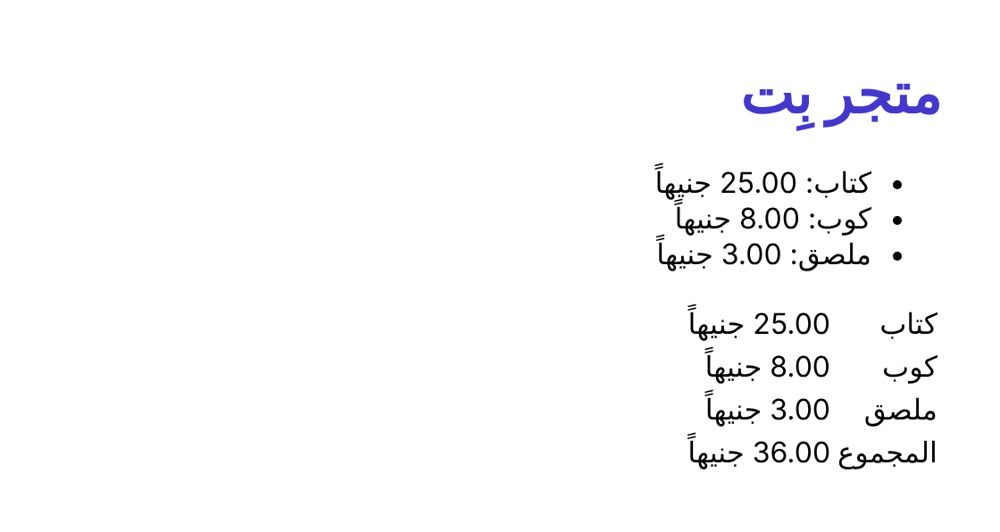
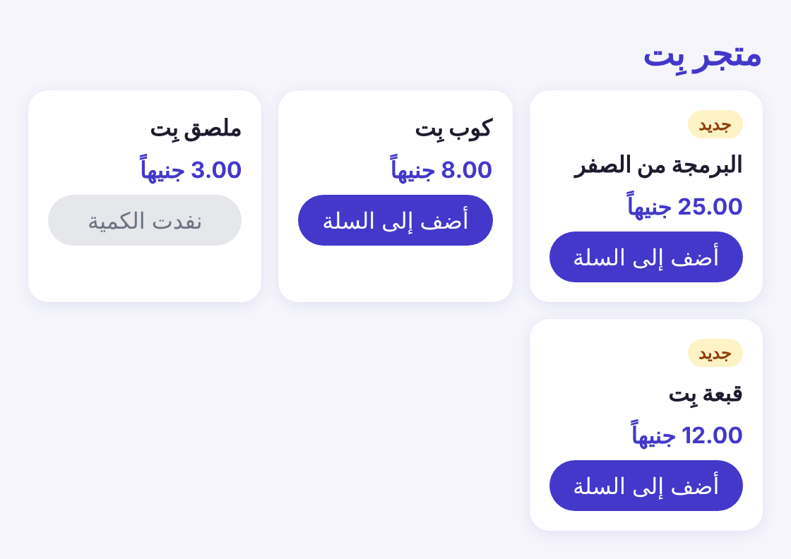
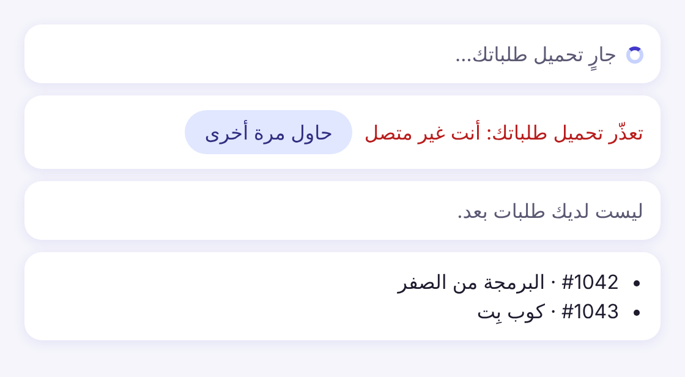
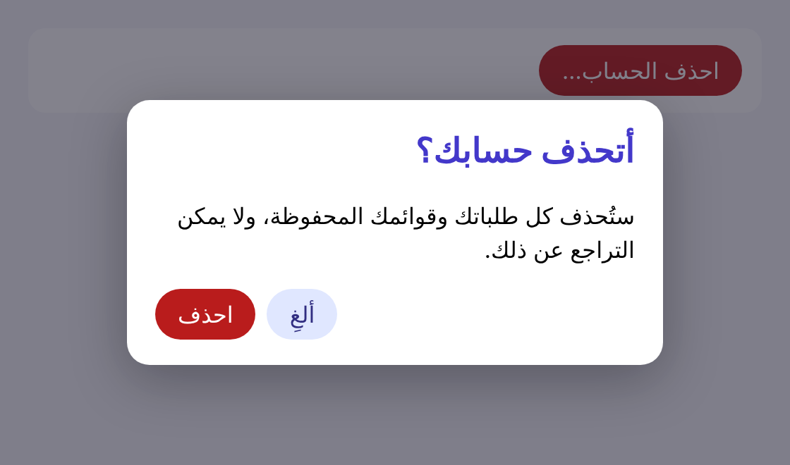
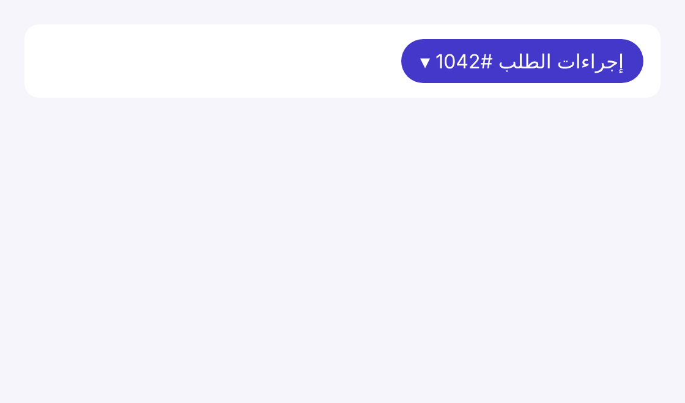
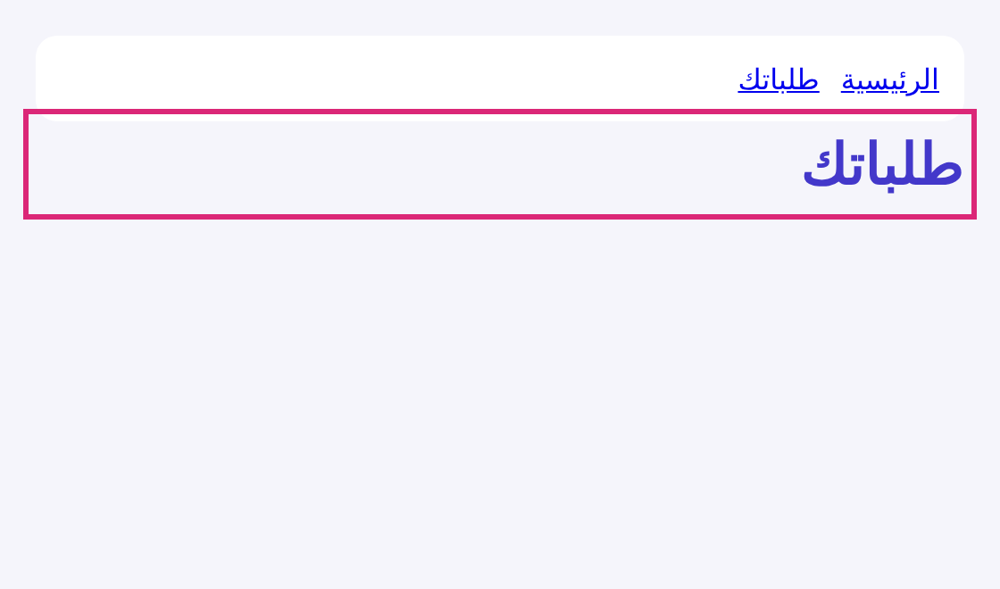
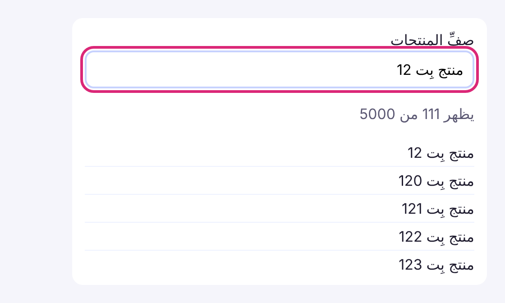

اختُبر الكود في هذا الكتاب على Node.js 22، وكل مثال ومخرجاته منسوخ من ملفات مستودع الكود الخاص بالكتاب.
JavaScript وNode.js وغيرها من الأسماء الواردة في هذا الكتاب علامات تجارية لأصحابها، وتُذكر للتعريف فقط.
ISBN: ———
المحتويات
كيف تستخدم هذا الكتاب6
الجزء 1: اللغة
1JavaScript الحديثة بعمق10
2TypeScript في المشاريع الحقيقية34
3الوحدات والأدوات وأنظمة البناء55
الجزء 2: Vue
4المكونات والقوالب
5التفاعلية وComposition API
6Composables: إعادة استخدام المنطق
7Vue Router وبيانات الخادم
8النماذج والتحقق
9الحالة العامة بـ Pinia
الجزء 3: الجودة
10أنظمة التصميم ومكتبات المكونات73
11الوصول (WCAG) عملياً91
12الاختبار: الوحدات والمكونات ومن الطرف للطرف108
13الأداء وCore Web Vitals125
14أمان الواجهات142
15تعدد اللغات والاتجاه من اليمين157
الجزء 4: عمل الخبير
16معمارية الواجهات على نطاق واسع173
17الرسم على الخادم بـ Nuxt
18مراجعة الكود والتوجيه والقرارات التقنية190
19المشروع الختامي: لوحة تحكم للإنتاج
ملحق
حلول التمارين211
قبل أن تبدأ
كيف تستخدم هذا الكتاب
هذا الكتاب للمطورين الذين يستطيعون أن يبنوا شيئاً في المتصفح، ويريدون أن يبنوه كما يبنيه المهندسون الخبراء: بالأنواع، ومُختبَراً، ومتاحاً للجميع، وسريعاً، وآمناً، وجاهزاً للغتين، وسهلاً على الفريق أن يغيّره. فإن أنهيت البرمجة من الصفر، الكتاب الأول في هذه السلسلة، فأنت جاهز. وإن تعلمت في مكان آخر، فأنت تحتاج نحو سنة من JavaScript: الدوال، والمصفوفات والكائنات، وDOM، وfetch، وGit.
إصداران لكتاب واحد
للكتاب إصداران، واحد لـ React وواحد لـ Vue، وهما أكثر طريقتين استخداماً لبناء واجهات المستخدم. والفصول التي لا تعتمد على إطار العمل، كـ JavaScript بعمق وTypeScript والاختبار والإتاحة والأداء والأمان والمعمارية، واحدة في الإصدارين، وأمثلتها تستخدم إطار إصدارك حين يلزم.
وأنت تقرأ إصدار Vue.فإن كان فريقك يستخدم الإطار الآخر، فكل ما هو خارج فصول الإطار ينطبق كما هو، حرفاً بحرف.
كيف نُظّم الكتاب
الفصول التسعة عشر مجموعة في أربعة أجزاء:
اللغة يتعمق في JavaScript الحديثة، ويضيف TypeScript، ويجهّز أدوات المشروع الاحترافي.
Vue يبني المكونات والقوالب، والتفاعلية، والـ composables، والتوجيه مع بيانات الخادم، والنماذج، والحالة العامة بـ Pinia.
الجودة يغطي ما يفرّق العرض التجريبي عن المنتج: أنظمة التصميم، والإتاحة، والاختبار، والأداء، والأمان، واللغات والتخطيط من اليمين إلى اليسار.
عمل الخبير عن المشاريع الكبيرة، والرسم على الخادم بـ Nuxt، ومراجعة الكود والتوجيه والقرارات، وينتهي بلوحة تحكم كاملة للإنتاج.
اقرأ الجزأين الأولين بالترتيب. وبعدها تستطيع قراءة فصول الجزأين الأخيرين بالترتيب الذي يحتاجه عملك، مع أن كل فصل يفترض الأجزاء التي قبله.
كل فصل
يتبع كل فصل الترتيب نفسه، فتعرف دائماً أين أنت: ما ستتعلمه، وشروح مبنية على أمثلة حقيقية تعمل، و«اختبر نفسك» في منتصفه، وصناديق فيها عادات المحترفين والأفخاخ الشائعة، وجدول للأخطاء الشائعة، وخلاصة، وثلاثة مشاريع تطبيقية (سهل ومتوسط وتحدٍّ) بخطوات وتلميحات، وتمارين بثلاثة مستويات. وإجابات «اختبر نفسك» بعد كل خلاصة، وحلول التمارين في آخر الكتاب.
والمشاريع أهم من أي شيء آخر في الكتاب. فالقراءة عن مهارة ليست امتلاكها. نفّذ مشروعاً واحداً على الأقل في كل فصل، ويُفضَّل المتوسط، قبل أن تنتقل.
كود حقيقي ومخرجات حقيقية
كل كود في هذا الكتاب ملف حقيقي، وكل مخرج وتشغيل اختبار وصورة شاشة نتج عن تشغيله أثناء إعداد الكتاب. فحين يقول فصل إن حزمة صغرت من 221.7 كيلوبايت إلى 142.6، فهذه الأرقام التي طبعتها الأدوات. وسترى النتائج نفسها إن استخدمت الإصدارات نفسها:
الأداة
الإصدار
Node.js
22
TypeScript
7.0
zod
4.6
Vitest
5.1
Playwright
1.63
axe-core
4.14
الأدوات تتغير بسرعة. فإن طبع إصدار أحدث شيئاً مختلفاً قليلاً، فاقرأ الفرق: فهو يعلّمك عادة ما الذي تغيّر ولماذا.
اللسان الداكن فوق الكود يعطي اسم الملف ومساره في المشروع.
الصندوق ذو النقاط الملونة الثلاث يعرض ما ظهر في الطرفية. والسطر الذي يبدأ بـ $ أمر، والأسطر تحته الجواب.
الصورة في إطار متصفح لقطة للمثال وهو يعمل، وعرض النافذة في زاويتها.
ما تحتاجه
حاسوب بنظام Windows أو macOS أو Linux، ومتصفح حديث.
Node.js 22 أو أحدث، وGit، ومحرر مثل Visual Studio Code. وكل مكتبة في الكتاب مجانية ومفتوحة المصدر.
حساب على GitHub أو GitLab، لفصول طلبات الدمج والتكامل المستمر.
مستودع الكود
كل مثال وكل مشروع وكل حل تمرين موجود في مستودع الكود الخاص بالكتاب، في مجلد لكل فصل. اكتب الأمثلة بنفسك أولاً، ثم استخدم المستودع للمقارنة، أو للنهوض حين تعلق.
كلمة من المؤلف
كان الكتاب الأول في هذه السلسلة عن تعلّم البرمجة. وهذا الكتاب عن الفرق بين كود يعمل وكود يستطيع الفريق أن يثق به ويغيّره ويفخر به سنوات. وهذا الفرق ليس موهبة، بل مجموعة عادات تُتعلم فصلاً بعد فصل. وككل كتب السلسلة، كُتب لكل لغة من لغتيه لا مترجماً كلمة بكلمة. أرجو أن يساعدك على أن تصير المهندس الذي يسعد الآخرون بالعمل معه.
سليمان ماجد سعيد صلاح
1
الفصل 1
JavaScript الحديثة بعمق
ستتعلم في هذا الفصل أن
تتوقع متى تُنسخ البيانات ومتى تُشارَك، وتحدّثها دون آثار جانبية
تستخدم الإغلاقات (closures) لتبقي الحالة خاصة
تكتب أصنافاً بحقول خاصة، ولا تفقد this بعد اليوم
تستخدم الأدوات الحديثة: ?. و?? و??= وat وtoSorted وObject.groupBy
تختار بين المصفوفات وMap وSet، وتكتب المولّدات
تشرح ترتيب تنفيذ الكود غير المتزامن، وتجمع الوعود بأمان
تصمم أخطاء تحكي القصة كاملة
تعلمت في الكتاب الأول من JavaScript ما يكفي لبناء تطبيق حقيقي. وأُطر العمل مثل React وVue مكتوبة باللغة نفسها، وأكثر الأخطاء المحيّرة فيها سؤال عن JavaScript في الحقيقة: لماذا تغيّرت هذه القيمة؟ أين ذهب this؟ لماذا نُفّذ هذا السطر أولاً؟ يجيب هذا الفصل عن هذه الأسئلة مرة واحدة وإلى الأبد، وهو الأساس لكل ما بعده في الكتاب.
بِت
أهلاً بعودتك! أنا أيضاً كنت أتدرب. في هذا الكتاب نتوقف عن سؤال «هل يعمل؟» ونبدأ بسؤال «هل سيظل يعمل العام القادم، حين يكبر التطبيق عشر مرات؟». هذا هو سؤال الخبير.
1.1القيم والمراجع
في JavaScript نوعان من القيم. القيم البسيطة (الأرقام والنصوص والقيم المنطقية وnull وundefined وbigint وsymbol) تُنسخ حين تُسندها. أما الكائنات، ومنها المصفوفات والدوال، فلا تُنسخ: المتغير يحمل مرجعاً، أي عنواناً يشير إلى الكائن.
values.js
// القيم البسيطة تُنسخlet a = 10;
let b = a;
b = 20;
console.log(a, b);
// الكائنات مشتركة: اسمان لكائن واحدconst original = { name: "سارة", tags: ["js"] };
const same = original;
same.name = "هدى";
console.log(original.name);
// النشر ينسخ المستوى الأول فقطconst shallow = { ...original };
shallow.tags.push("ts");
console.log(original.tags);
// structuredClone ينسخ كل المستوياتconst deep = structuredClone(original);
deep.tags.push("react");
console.log(original.tags, deep.tags);
same وoriginal اسمان لكائن واحد، فالتغيير بأي منهما يظهر بالآخر.
النشر { ...original } يصنع نسخة سطحية: كائناً خارجياً جديداً، لكن المصفوفة الداخلية ما زالت مشتركة. ولهذا ظهرت "ts" في الأصل.
structuredClone تصنع نسخة عميقة: كل مستوى فيها جديد. وهي مدمجة في المتصفحات وNode.
التحديث دون آثار جانبية
يقرر React وVue كلاهما ما يُعاد رسمه بمقارنة المراجع: فإن كان الكائن هو نفسه، قد يفترضان أن شيئاً لم يتغير. لذلك نادراً ما يغيّر المحترفون البيانات في مكانها، بل يبنون كائناً جديداً يشارك القديم في الأجزاء التي لم تتغير. ويسمى هذا الأسلوب التحديث غير القابل للتغيير (immutable updates):
السلة القديمة ما زالت بكمية 1، والجديدة بكمية 2. والسلة ومصفوفة العناصر كلتاهما كائنان جديدان (false false)، بينما يُعاد استخدام العناصر التي لم تتغير. اقرأ addOne ببطء: انشر الكائن القديم، ثم غيّر ما تغيّر فقط، في كل مستوى في طريقك إلى الداخل.
1.2النطاق والإغلاقات
النطاق (scope) هو المنطقة من الكود التي يوجد فيها اسم ما. والمتغيرات المعرّفة بـ let وconst تعيش في أقرب كتلة { … }. وتستطيع الدالة أن ترى متغيرات النطاقات المحيطة بها، حتى بعد أن تنتهي تلك الدوال الخارجية. والدالة مع المتغيرات التي تتذكرها تسمى إغلاقاً (closure).
closures.js
function makeCounter(start = 0) {
let count = start; // خاص: لا تراه إلا الدوال الثلاثreturn {
up: () => ++count,
down: () => --count,
value: () => count,
};
}
const likes = makeCounter();
const stock = makeCounter(10);
likes.up();
likes.up();
stock.down();
console.log(likes.value(), stock.value());
console.log(likes.count); // undefined: لا طريق إليه من الخارج
الطرفية
2 9
undefined
كل استدعاء لـ makeCounter يصنع count جديداً، فلا يتشارك likes وstock شيئاً. ولا أحد في الخارج يستطيع قراءة count أو إفساده، بل يستخدم الدوال الثلاث فقط. وبهذه الطريقة كانت لـ JavaScript بيانات خاصة قبل أن تأتي الحقول الخاصة في الأصناف بزمن طويل، وبها بالضبط تحفظ خطافات React وcomposables في Vue حالتها.
والإغلاقات تصنع أيضاً أدوات صغيرة قابلة لإعادة الاستخدام. فـ once تغلّف أي دالة لتعمل مرة واحدة فقط، وهذا مفيد للاتصال بخادم أو عرض رسالة ترحيب:
once.js
function once(fn) {
let done = false;
let result;
return (...args) => {
if (!done) {
done = true;
result = fn(...args);
}
return result;
};
}
const connect = once(() => {
console.log("جارٍ الاتصال بالخادم…");
return"connection #1";
});
console.log(connect());
console.log(connect());
الطرفية
جارٍ الاتصال بالخادم…
connection #1
connection #1
لغز الحلقة الشهير
loop.js
for (var i = 1; i <= 3; i++) {
setTimeout(() => console.log("var:", i));
}
for (let j = 1; j <= 3; j++) {
setTimeout(() => console.log("let:", j));
}
الطرفية
var: 4
var: 4
var: 4
let: 1
let: 2
let: 3
نطاق var هو الدالة كلها، فتُغلق المؤقتات الثلاثة على iنفسه، وقيمته 4 حين تعمل. أما let فتصنع j جديداً في كل دورة، فيتذكر كل مؤقت قيمته. وهذا من أسباب أن الكود الحديث لا يستخدم var أبداً.
1.3الأصناف والحقول الخاصة وthis
الصنف (class) قالب لكائنات تتشارك الدوال نفسها. ويمكن للأصناف الحديثة أن تحمل حقولاً خاصة تبدأ أسماؤها بـ #، وأعضاء ثابتة (static) تخص الصنف نفسه، ودوال قراءة (getters) تبدو كخصائص لكنها تشغّل كوداً:
classes.js
class Account {
#balance = 0; // حقل خاص: لا يُرى خارج الصنفstatic count = 0;
constructor(owner) {
this.owner = owner;
Account.count++;
}
get balance() {
returnthis.#balance;
}
deposit(amount) {
if (amount <= 0) thrownew RangeError("يجب أن يكون المبلغ موجباً");
this.#balance += amount;
returnthis; // إرجاع this يسمح بسلسلة الاستدعاءات
}
}
class SavingsAccount extends Account {
addInterest(rate) {
returnthis.deposit(Math.round(this.balance * rate));
}
}
const acc = new SavingsAccount("سارة");
acc.deposit(1000).deposit(500).addInterest(0.1);
console.log(acc.owner, acc.balance, Account.count);
console.log(acc instanceof Account);
try {
acc.deposit(-5);
} catch (error) {
console.log(error.name + ":", error.message);
}
الطرفية
سارة 1650 1
true
RangeError: يجب أن يكون المبلغ موجباً
#balance لا يُقرأ ولا يتغير خارج الصنف، ولا حتى بالخطأ. والطريق الوحيد إليه deposit، وهي تفحص المبلغ.
get balance() تسمح بقراءة acc.balance دون القدرة على تعيينها.
extends تبني صنفاً جديداً فوق آخر، فلـ SavingsAccount كل ما لـ Account وزيادة addInterest.
رمي RangeError عند معامل خاطئ أفضل من تجاهله بصمت: فيظهر الخطأ حيث يبدأ.
أين ذهب this؟
داخل الدالة العادية، this هو الكائن الذي قبل النقطة لحظة الاستدعاء. ففي timer.tick() قبل النقطة timer. لكن حين تمرر timer.tick إلى مكان آخر، كدالة رد أو معالج حدث، تسافر الدالة وحدها ويبقى الكائن خلفها:
ضاع this: Cannot read properties of undefined (reading 'seconds')
3
الدوال السهمية ليس لها this خاص بها، بل تستخدم this المكان الذي كُتبت فيه. ولهذا تعمل الحلول الثلاثة، ولهذا سترى الدوال السهمية في كل مكان في معالجات الأحداث.
بِت
قاعدة توفر ساعات: إن كانت الدالة ستُمرَّر إلى مكان آخر (حدث، أو مؤقت، أو دالة رد)، فاستدعها داخل دالة سهمية: () => obj.method(). وعندها لا يضيع this أبداً.
1.4الأدوات الحديثة
كل عام تكسب JavaScript مزايا صغيرة تزيل أنواعاً كاملة من الأخطاء. وهذه ما ستستخدمه كل يوم:
modern.js
const user = { name: "عمر", address: null, settings: { theme: "" } };
// ?. تتوقف عند null أو undefined بدل الانهيار
console.log(user.address?.city);
console.log(user.address?.city ?? "غير معروف");
// || تستبدل كل قيمة كاذبة، و?? تستبدل null وundefined فقط
console.log(user.settings.theme || "light", user.settings.theme ?? "light");
// ??= تُسند فقط حين تكون القيمة ناقصة
user.settings.fontSize ??= 16;
console.log(user.settings);
const scores = [72, 95, 88, 61];
console.log(scores.at(-1), scores.findLast((s) => s > 80));
console.log(scores.toSorted((a, b) => b - a), scores); // toSorted تُرجع نسخة: يبقى الأصل بترتيبه
undefined إن كانت a هي null أو undefined، وإلا a.b
بيانات من خادم قد تكون ناقصة
a ?? b
b فقط إن كانت a هي null أو undefined
قيم افتراضية تحافظ على 0 و""
a ??= b
اجعل a تساوي b فقط إن كانت ناقصة
ملء الإعدادات الافتراضية
list.at(-1)
العنصر الأخير
بدل list[list.length - 1]
toSorted وtoReversed وwith
مثل sort وأخواتها، لكنها تُرجع نسخة
التحديث غير القابل للتغيير
انظر جيداً إلى السطر الثالث من المخرجات: || رمت النص الفارغ واستخدمت "light"، بينما أبقته ??. فإن كان النص الفارغ أو الصفر قيمة حقيقية في بياناتك، فاستخدم ??.
تجميع البيانات وإعادة تشكيلها
Object.groupBy توزّع القائمة على مجموعات في سطر واحد، وObject.entries مع Object.fromEntries تتيحان تحويل الكائن كأنه مصفوفة:
وهذا شكل معظم كود لوحات التحكم: اجمع السجلات الخام، ثم اختصر كل مجموعة إلى رقم.
1.5المجموعات والمولّدات
الكائن مناسب لمجموعة ثابتة من الحقول المسماة. أما المجموعة التي تكبر وتصغر فلها في JavaScript أداتان أفضل. Map تحفظ أزواج مفتاح وقيمة، بمفاتيح من أي نوع، بترتيب إضافتها. وSet تحفظ كل قيمة مرة واحدة:
collections.js
// Map: مفاتيح من أي نوع، بترتيب الإضافةconst visits = new Map();
for (const page of ["/home", "/shop", "/home", "/cart", "/home"]) {
visits.set(page, (visits.get(page) ?? 0) + 1);
}
console.log(visits);
console.log([...visits].toSorted((a, b) => b[1] - a[1])[0]);
// Set: كل قيمة مرة واحدةconst tags = new Set(["js", "css", "js", "html", "css"]);
console.log(tags.size, tags.has("css"), [...tags]);
استخدم Map حين تبحث بمفتاح يأتي من البيانات (معرّف، أو رابط، أو كائن)، واستخدم Set لإزالة التكرار أو للسؤال السريع «هل رأيت هذا من قبل؟». وكلتاهما أسرع كثيراً من البحث في مصفوفة حين تكبر المجموعة.
المولّدات: قيم عند الطلب
المولّد (generator) دالة تُكتب بـ function* وتستطيع أن تتوقف. فكل yield تسلّم قيمة واحدة وتنتظر حتى تُطلب التالية. وكل ما يعمل مع for…of أو النشر يستطيع استخدامه:
generators.js
function* range(from, to, step = 1) {
for (let n = from; n <= to; n += step) {
yield n; // توقف هنا وسلّم n للمستدعي
}
}
console.log([...range(1, 10, 3)]);
// مولّد يقسم القائمة إلى صفحاتfunction* pages(items, size) {
for (let i = 0; i < items.length; i += size) {
yield items.slice(i, i + size);
}
}
const letters = "ABCDEFG".split("");
for (const page of pages(letters, 3)) {
console.log(page.join(" "));
}
الطرفية
[ 1, 4, 7, 10 ]
A B C
D E F
G
وتتألق المولّدات حين تكون القيم مكلفة أو بلا نهاية: قراءة ملف كبير سطراً سطراً، أو تحميل صفحة بعد صفحة من واجهة برمجية ما دام المستخدم يمرّر.
1.6حلقة الأحداث
تشغّل JavaScript كودك على خيط واحد، قطعة بعد قطعة. والعمل الذي يجب أن ينتظر (المؤقتات، وردود الشبكة، والنقرات) يوضع في طابور، وحلقة الأحداث (event loop) تختار القطعة التالية حين تنتهي الحالية. وهناك طابوران، والفرق بينهما يفسّر كثيراً من الأخطاء المفاجئة:
event-loop.js
console.log("1 الكود المتزامن يعمل أولاً");
setTimeout(() => console.log("5 مؤقت: مهمة، بعد كل المهام الدقيقة"), 0);
Promise.resolve().then(() => console.log("3 رد وعد: مهمة دقيقة"));
queueMicrotask(() => console.log("4 مهمة دقيقة أخرى، بالترتيب"));
console.log("2 ما زال متزامناً");
الطرفية
1 الكود المتزامن يعمل أولاً
2 ما زال متزامناً
3 رد وعد: مهمة دقيقة
4 مهمة دقيقة أخرى، بالترتيب
5 مؤقت: مهمة، بعد كل المهام الدقيقة
يعمل الكود المتزامن كله أولاً، من الأعلى إلى الأسفل.
ثم تعمل كل المهام الدقيقة (microtasks): ردود الوعود وqueueMicrotask. والمهمة الدقيقة التي تضيف مهام دقيقة أخرى تُبقي الحلقة مشغولة حتى يفرغ الطابور.
وبعدها فقط تعمل المهمة (task) التالية: مؤقت، أو حدث شبكة، أو نقرة.
القاعدة العملية: الكود بعد await يعمل لاحقاً دائماً، حتى لو كان الوعد محققاً سلفاً. والحلقة المتزامنة الطويلة تعطّل كل شيء، بما فيه النقرات ورسم الصفحة، ولهذا يُقسَّم العمل الثقيل إلى قطع صغيرة أو يُنقل إلى Web Worker.
جمع الوعود
عرفت في الكتاب الأول Promise.all، التي تفشل حين يفشل أي وعد. والشاشات الحقيقية تحتاج تحكماً أكثر:
promises.mjs
const wait = (ms, value, fail = false) =>
new Promise((resolve, reject) =>
setTimeout(() => (fail ? reject(new Error(value)) : resolve(value)), ms),
);
const results = await Promise.allSettled([
wait(30, "الملف الشخصي"),
wait(10, "فشلت الطلبات", true),
wait(20, "الرسائل"),
]);
for (const r of results) {
console.log(r.status, r.value ?? r.reason.message);
}
// any: أول من ينجحconst fastest = await Promise.any([wait(40, "النسخة أ"), wait(15, "النسخة ب")]);
console.log("الأسرع:", fastest);
// race: أول من ينتهي، نجاحاً أو فشلاًconst timeout = (ms) => wait(ms, "انتهت المهلة بعد 50 ملي ثانية", true);
try {
await Promise.race([wait(100, "رد بطيء"), timeout(50)]);
} catch (error) {
console.log(error.message);
}
الطرفية
fulfilled الملف الشخصي
rejected فشلت الطلبات
fulfilled الرسائل
الأسرع: النسخة ب
انتهت المهلة بعد 50 ملي ثانية
الدالة
تتحقق حين
استخدمها لـ
Promise.all
تنجح كلها (وتفشل مع أول فشل)
بيانات لا تعمل الشاشة دونها
Promise.allSettled
تنتهي كلها، مع حالة كل منها
لوحات التحكم: اعرض ما تحمّل، وعلّم ما فشل
Promise.any
ينجح أولها
عدة خوادم بالبيانات نفسها
Promise.race
ينتهي أولها، نجاحاً أو فشلاً
المهلة الزمنية
ينتهي اسم الملف بـ .mjs، وهذا يخبر Node بأنه وحدة ES (ES module). والوحدات تسمح بـ await في المستوى الأعلى، خارج أي دالة. ويشرح الفصل 3 الوحدات كما يجب، ويكفي الامتداد الآن.
1.7أخطاء تحكي القصة كاملة
رسالة الخطأ ملاحظة للشخص الذي سيصحح كودك في الثانية فجراً، وكثيراً ما يكون هذا الشخص أنت. وميزتان حديثتان تجعلان هذه الملاحظات أفضل بكثير: أصناف أخطائك الخاصة، التي تُميَّز بـ instanceof، وخيار cause، الذي يحفظ الخطأ الأصلي حين تضيف سياقاً:
تعذّر تحميل الملف الشخصي
السبب: NotFoundError - المستخدم #7 غير موجود
true
الرسالة العليا تقول ماذا كان المستخدم يحاول، والسبب يقول لماذا فشل. وخدمات تتبع الأخطاء وConsole المتصفح تعرض السلسلة كلها. ولا تكتب أبداً catch (error) {} فارغة: فالخطأ المبتلع علّة مختبئة.
أخطاء شائعة
الخطأ
ما يحدث
الحل
تغيير الحالة في مكانها: cart.items.push(x)
لا تتحدث الشاشة، أو تتحدث في المكان الخطأ
ابنِ كائناً جديداً بالنشر
النسخ بالنشر ثم تعديل مصفوفة داخلية
يتغير الأصل أيضاً
انسخ كل مستوى تغيّره، أو استخدم structuredClone
تمرير obj.method دالة رد
this يصبح undefined
() => obj.method()
value || default مع الأرقام
يُستبدل 0 بالقيمة الافتراضية
value ?? default
Promise.all لبيانات اختيارية
فشل واحد يخفي كل الباقي
Promise.allSettled
catch فارغة
تختفي الأخطاء بصمت
عالجه، أو ارمِه من جديد مع cause
الخلاصة
القيم البسيطة تُنسخ، والكائنات تُشارَك بالمرجع. النشر ينسخ مستوى واحداً، وstructuredClone كل المستويات.
التحديث غير القابل للتغيير يبني كائنات جديدة ويعيد استخدام ما لم يتغير، وأُطر العمل تعتمد عليه.
الإغلاق دالة ومعها المتغيرات التي تتذكرها: أبسط طريقة لإبقاء الحالة خاصة.
للأصناف حقول خاصة (#) ودوال قراءة وأعضاء static. وthis هو الكائن الذي قبل النقطة لحظة الاستدعاء، والدوال السهمية تحفظ this الخارجي.
استخدم Map للبحث بمفتاح، وSet للقيم الفريدة، والمولّدات للقيم عند الطلب.
حلقة الأحداث تشغّل الكود المتزامن، ثم كل المهام الدقيقة، ثم المهمة التالية.
اختر all أو allSettled أو any أو race حسب حاجة الشاشة. وأعطِ الأخطاء صنفاً وcause.
إجابات «اختبر نفسك»: 1. صحيحة: النشر ينسخ المستوى الأول فقط، فكلاهما يشير إلى القائمة نفسها. 2. لأن count موجود داخل الإغلاق فقط، والعالم الخارجي يأخذ دوالّ لا المتغير. 3. 1 2 3 مرتين، مرة مع «var:» ومرة مع «let:».
مشاريع تطبيقية
كل مشروع يبني أداة صغيرة قابلة لإعادة الاستخدام، من النوع الذي تجده داخل المكتبات الحقيقية. اكتبه أولاً بطريقتك، وشغّله، وقارن نتيجتك بالنتيجة أدناه، وبعدها فقط انظر إلى الحل في مستودع الكود.
مشروع 1.1 · سهل
أداة التذكّر memoize
اكتب memoize(fn)، التي تُرجع نسخة أسرع من أي دالة بمعامل واحد، بأن تتذكر إجاباتها.
طبّق التذكّر على دالة فيبوناتشي التعاودية. يجب أن تستدعي النسخة المتذكّرة من نفسها، وإلا فلن تُستخدم الذاكرة أبداً.
تلميح: طبّق التذكّر على الدوال النقية فقط: الدوال التي تعتمد إجابتها على معاملاتها وحدها. فالدالة التي تقرأ الساعة أو خادماً ستُرجع إجابات قديمة إلى الأبد.
أنشئ class Emitter بحقل خاص #listeners = new Map(). كل مفتاح اسم حدث، وكل قيمة Set من الدوال.
on(event, fn) تضيف الدالة، وتنشئ الـ Set في المرة الأولى. واجعلها تُرجع () => this.off(event, fn).
off(event, fn) تزيلها. واستخدم ?. ليكون الحذف من حدث مجهول بلا ضرر.
emit(event, ...args) تستدعي كل مستمع بالمعاملات. مرّ على نسخة ([...set])، لأن المستمع قد يزيل نفسه أثناء المرور.
once(event, fn) تستمع بغلاف يوقف نفسه قبل أن يستدعي fn.
تلميح: إرجاع دالة «الإيقاف» من on نمط ستقابله مرة أخرى: فـ useEffect في React وwatch في Vue كلاهما يستخدمه. من يبدأ الاستماع يملك طريقة إيقافه.
يجب أن تبدو نتيجتك هكذا:
الطرفية
السجل: الطلب 101
أول طلب اليوم: 101
السجل: الطلب 102
لا مستمعين بعد الآن.
مشروع 1.3 · تحدٍّ
إعادة المحاولة بانتظار متضاعف
الشبكات تتعطل للحظة طوال الوقت. اكتب retry(fn, options)، التي تعيد محاولة دالة غير متزامنة، وتنتظر أطول في كل مرة، وتستسلم بخطأ واضح.
ستتدرب على:async/await داخل حلقة، والخيارات الافتراضية بالتفكيك، و2 ** n، والأخطاء مع cause.
اكتب الدالة المساعدة wait(ms) التي تُرجع وعداً.
أعطِ retry معاملاً ثانياً { retries = 3, delay = 10 } = {}، لتعمل دون أي خيارات.
مرّ على المحاولات. وداخل try اكتب return await fn(attempt): وawait هنا ضرورية، وإلا فلن ترى catch الفشل أبداً.
في catch استسلم حين تنفد المحاولات، برمي خطأ جديد مع { cause: error }. وإلا فانتظر delay * 2 ** (attempt - 1) وكرر.
اختبرها بواجهة وهمية flaky(n) تفشل n مرة ثم تنجح. جرّب واحدة تتعافى وأخرى لا تتعافى أبداً.
تلميح: في الإنتاج أضف قليلاً من العشوائية إلى الانتظار، كي لا تعيد ألف جوال فقدت الشبكة معاً المحاولة في الملي ثانية نفسها. ولا تُعِد أبداً عمليات لا يصح تكرارها، كخصم مبلغ من بطاقة، إلا إن كان الخادم يدعم ذلك.
يجب أن تبدو نتيجتك هكذا:
الطرفية
واجهة تفشل مرتين:
المحاولة 1 فشلت، انتظار 10 ms
المحاولة 2 فشلت، انتظار 20 ms
OK (في المحاولة 3)
واجهة تفشل خمس مرات:
المحاولة 1 فشلت، انتظار 10 ms
المحاولة 2 فشلت، انتظار 20 ms
استسلمت بعد 3 محاولات - خطأ في الشبكة
تمارين
سهل اكتب removeItem(cart, id) بأسلوب immutable.js، وأثبت بـ === أن السلة الأصلية لم تتغير.
سهل باستخدام Object.groupBy جمّع الكلمات ["apple", "avocado", "banana", "blueberry", "cherry"] حسب حرفها الأول.
متوسط أضف إلى Account دالة withdraw(amount) ترمي خطأً خاصاً InsufficientFundsError حين يكون الرصيد غير كافٍ، واختبر الحالتين.
متوسط دون أن تشغّله، اكتب ترتيب مخرجات: setTimeout(() => log("A")); Promise.resolve().then(() => log("B")); log("C");. ثم شغّله لتتحقق.
تحدٍّ اكتب مولّداً take(iterable, n) يعطي أول n قيمة فقط من أي شيء قابل للتكرار، واستخدمه مع مولّد لا ينتهي للأرقام الزوجية.
حلول التمارين في آخر الكتاب، وفي مستودع الكود الخاص بالكتاب.
في الفصل 2
رأيت كم من الأمور قد يسوء حين لا تكون القيمة كما توقعت. وTypeScript تلتقط معظم هذه الأخطاء قبل أن تشغّل الكود أصلاً. في الفصل التالي ستضيف الأنواع إلى كود حقيقي، وتصف بيانات قد تكون في عدة حالات، وتدع المحرر يجد الأخطاء نيابة عنك.
2
الفصل 2
TypeScript في المشاريع الحقيقية
ستتعلم في هذا الفصل أن
تشرح ما تضيفه TypeScript إلى JavaScript، وما لا تضيفه
تدع TypeScript تستنتج الأنواع، وتكتبها حيث يهم ذلك
تصف الكائنات بخصائص اختيارية وأخرى للقراءة فقط
تضيّق الأنواع الاتحادية، وتصف حالات الشاشة بالاتحادات المميَّزة
تكتب دوالّ وأنواعاً عامة (generics)
تبني أنواعاً جديدة من القديمة بالأنواع المساعدة وas const وsatisfies
تفحص البيانات التي تصل من خارج برنامجك
في الفصل السابق انتهت أمثلة كثيرة بخطأ لم يظهر إلا حين عمل الكود: خاصية ناقصة، أو نوع خاطئ، أو قيمة undefined. وفي تطبيق كبير تظهر هذه الأخطاء أمام المستخدمين. وTypeScript هي JavaScript مكتوبة فوقها الأنواع، ومعها أداة اسمها المترجم (compiler) تقرأ هذه الأنواع وتجد تلك الأخطاء وأنت تكتب. ويستخدمها اليوم كل فريق واجهات محترف تقريباً.
بِت
تخيّل الأنواع ملصقات على الصناديق. إن كُتب على الصندوق «أرقام فقط» فلن يضع فيه أحد كلمة بالخطأ، وسيعرف كل من يفتحه ما فيه. وTypeScript تفحص الملصقات نيابة عنك، طوال اليوم، ومجاناً.
2.1أخطاء تُكتشف قبل التشغيل
هذا ملف قصير فيه ثلاثة أخطاء. ستشغّله JavaScript ثم تفشل في مكان ما لاحقاً، أو الأسوأ أن تحسب NaN بصمت. أما مترجم TypeScript، tsc، فيرفضه فوراً ويقول أين ولماذا بالضبط:
$ npx tsc --noEmit why.ts
why.ts(4,34): error TS2551: Property 'quantitiy' does not exist on type 'Product'. Did you mean 'quantity'?
why.ts(7,39): error TS2322: Type 'string' is not assignable to type 'number'.
why.ts(9,11): error TS2741: Property 'quantity' is missing in type '{ name: string; price: number; }' but required in type 'Product'.
كل رسالة تذكر الملف، والسطر والعمود، ورمز الخطأ، وجملة شارحة. والأولى تقترح الإصلاح أيضاً. ويعرض محررك الرسائل نفسها خطوطاً حمراء تحت الكود وأنت تكتب، فلا تحتاج غالباً إلى تشغيل البناء لتراها.
حقيقتان تستحقان المعرفة من البداية:
الأنواع تختفي حين يعمل الكود. المتصفحات وNode تشغّل JavaScript العادية، وتُحذف الأنواع أولاً. بل يستطيع Node تشغيل ملف .ts مباشرة بحذف أنواعه، وبهذا شُغّل كل مثال في هذا الفصل. فالأنواع لا تكلّف شيئاً وقت التشغيل، لكنها أيضاً لا تفحص شيئاً وقت التشغيل. والبيانات القادمة من خادم يجب أن تُفحص (القسم 2.6).
TypeScript هي JavaScript. كل ملف JavaScript تقريباً ملف TypeScript صالح. فتستطيع إضافة الأنواع تدريجياً، ملفاً بعد ملف.
2.2كتابة الأنواع واستنتاجها
تكتب النوع بعد نقطتين: name: string. لكنك تكتب أنواعاً أقل بكثير مما تتوقع، لأن TypeScript تستنتجها من القيم:
basics.ts
// مستنتجة: تعرف TypeScript هذه الأنواع دون أن تُخبَرlet city = "القاهرة";
const year = 2026;
const scores = [72, 95, 88];
// اكتب أنواع معاملات الدالة ونوع ما تُرجعهfunction average(values: number[]): number {
return values.reduce((sum, v) => sum + v, 0) / values.length;
}
function greet(name: string, title?: string): string {
return title ? `${title} ${name}` : name;
}
console.log(city, year, average(scores));
console.log(greet("سارة"), "|", greet("سارة", "د."));
الطرفية
القاهرة 2026 85
سارة | د. سارة
استُنتج city نصاً string، وyear الرقم 2026 بعينه (لأنه const)، وscores مصفوفة أرقام number[].
معاملات الدالة لا تُستنتج، فتكتب أنواعها. وهناك تؤدي الأنواع معظم عملها: فهي العقد بين الدالة وكل من يستدعيها.
كتابة نوع ما تُرجعه الدالة (: number) اختيارية، لكنها عادة جيدة للدوال المصدَّرة: فيُبلَّغ عن الخطأ داخل الدالة هناك، لا عند كل مستدعٍ.
وصف الكائنات
نوع الكائن يسرد خصائصه. ضع ? على الخاصية التي قد تغيب، وreadonly على التي يجب ألا تتغير أبداً بعد إنشاء الكائن:
objects.ts
type User = {
readonly id: number;
name: string;
email: string;
phone?: string; // اختياري: نص أو undefined
roles: readonly string[];
};
const user: User = { id: 7, name: "سارة", email: "sara@example.com", roles: ["admin"] };
user.name = "هدى";
user.id = 8;
user.roles.push("editor");
console.log(user.phone.length);
الطرفية
$ npx tsc --noEmit objects.ts
objects.ts(12,6): error TS2540: Cannot assign to 'id' because it is a read-only property.
objects.ts(13,12): error TS2339: Property 'push' does not exist on type 'readonly string[]'.
objects.ts(14,13): error TS18048: 'user.phone' is possibly 'undefined'.
تغيير name مسموح، وتغيير id ممنوع. ومصفوفة الأدوار من نوع readonly string[]، فليس فيها push أصلاً. ولاحظ المترجم أن phone قد تكون ناقصة: فيجب أن يفحصها الكود أولاً، مثلاً بـ user.phone?.length.
سترى أيضاً interface User { … } بدل type User = { … }. وهما متقاربان جداً لوصف أشكال الكائنات. ويستخدم هذا الكتاب type في كل مكان، لأنها تعمل أيضاً مع الاتحادات التي تأتي الآن. اختر أسلوباً واحداً لكل مشروع والتزم به.
2.3الاتحادات والتضييق
النوع الاتحادي (union)، ويُكتب بـ |، يعني «واحد من هذه». وداخل الدالة كل فحص تكتبه يضيّق النوع: فبعد typeof value === "string" تعرف TypeScript أنه نص، وفي باقي الدالة تعرف أنه ليس نصاً:
narrowing.ts
function formatPrice(value: number | string | null): string {
if (value === null) return"مجاناً";
if (typeof value === "string") return value; // هنا value نصreturn`${value.toFixed(2)} جنيهاً`; // وهنا لا يمكن أن تكون إلا رقماً
}
type Cat = { kind: "cat"; meows: boolean };
type Dog = { kind: "dog"; barks: boolean };
function describe(pet: Cat | Dog): string {
if ("meows"in pet) return pet.meows ? "قطة ثرثارة" : "قطة هادئة";
return pet.barks ? "كلب صاخب" : "كلب هادئ";
}
console.log(formatPrice(19.5), "|", formatPrice("اسألنا"), "|", formatPrice(null));
console.log(describe({ kind: "cat", meows: true }), "|", describe({ kind: "dog", barks: false }));
تفهم TypeScript كل الفحوص المعتادة: === null، وtypeof، وArray.isArray، وinstanceof، و"key" in object. فلا تحتاج صيغة خاصة: تكتب JavaScript عادية، والأنواع تتبع منطقك.
الاتحادات المميَّزة: نوع واحد لكل حالات الشاشة
كل شاشة تحمّل بيانات قد تكون في أربع حالات: لم تبدأ بعد، أو تحمّل، أو معها البيانات، أو فشلت. وكثيراً ما يستخدم المبتدئون ثلاثة متغيرات منفصلة، loading وdata وerror، ثم يقابلون تركيبات مستحيلة، كخطأ وبيانات في الوقت نفسه. والاتحاد المميَّز (discriminated union) يجعل هذه التركيبات مستحيلة: كل حالة كائن فيه حقل مشترك status، والحالة الصحيحة وحدها فيها data أو message:
remote.ts
type RemoteData<T> =
| { status: "idle" }
| { status: "loading" }
| { status: "success"; data: T }
| { status: "error"; message: string };
function assertNever(value: never): never {
thrownew Error("حالة غير متوقعة: " + JSON.stringify(value));
}
function render(state: RemoteData<string[]>): string {
switch (state.status) {
case"idle":
return"اضغط الزر للتحميل";
case"loading":
return"جارٍ التحميل…";
case"success":
return`${state.data.length} منتجات: ${state.data.join(", ")}`; // data موجودة في هذه الحالة فقطcase"error":
return`تعذّر التحميل: ${state.message}`;
default:
return assertNever(state); // إن نقصت حالة فلن تكون state من نوع never هنا، ويفشل البناء
}
}
const states: RemoteData<string[]>[] = [
{ status: "idle" },
{ status: "loading" },
{ status: "success", data: ["كتاب", "كوب"] },
{ status: "error", message: "أنت غير متصل" },
];
for (const state of states) console.log(render(state));
داخل case "success" تعرف TypeScript أن state.data موجودة، وقراءتها في أي مكان آخر خطأ. والفرع default هو الجزء الذكي: فإن عولجت كل الحالات صار نوع state هناك never، أي «هذا لا يمكن أن يحدث». وانظر الآن ماذا يحدث حين يحذف زميل حالة "error":
الطرفية
$ npx tsc --noEmit remote-missing.ts
remote-missing.ts(20,26): error TS2345: Argument of type '{ status: "error"; message: string; }' is not assignable to parameter of type 'never'.
يفشل البناء ويسمّي الحالة المنسية. ويسمى هذا النمط الفحص الشامل (exhaustive check)، وهو يحوّل «نسينا عرض رسالة الخطأ» من بلاغ عن علّة إلى خطأ في البناء. وستستخدمه في كل فصول إطار العمل في هذا الكتاب.
2.4الأنواع العامة (Generics)
بعض الدوال تعمل بالطريقة نفسها مع أي نوع: «أعطني أول عنصر في القائمة» لا يهمها أكانت القائمة منتجات أم مستخدمين. والدالة العامة (generic) لها معامل نوع يُكتب بين قوسين زاويين، ويعني «أي نوع يستخدمه المستدعي»:
generics.ts
function first<T>(list: readonly T[]): T | undefined {
return list[0];
}
function byId<T extends { id: number }>(list: readonly T[]): Map<number, T> {
returnnew Map(list.map((item) => [item.id, item]));
}
type Result<T> = { ok: true; value: T } | { ok: false; error: string };
function parseAge(text: string): Result<number> {
const age = Number(text);
if (!Number.isInteger(age) || age < 0) return { ok: false, error: `"${text}" ليس عمراً` };
return { ok: true, value: age };
}
const products = [
{ id: 1, name: "كتاب", price: 25 },
{ id: 2, name: "كوب", price: 8 },
];
console.log(first(products)?.name, first<number>([]));
console.log(byId(products).get(2)?.price);
for (const text of ["34", "-2", "abc"]) {
const result = parseAge(text);
console.log(result.ok ? `العمر: ${result.value}` : result.error);
}
الطرفية
كتاب undefined
8
العمر: 34
"-2" ليس عمراً
"abc" ليس عمراً
first<T> تُرجع T | undefined. فحين تُستدعى بمنتجات تُرجع منتجاً، فيُسمح بـ .name. وحين تُستدعى بقائمة فارغة تجبرك undefined على معالجة الحالة الناقصة.
T extends { id: number } قيد: تقبل byId أي كائنات ما دام فيها id رقمي.
Result<T>نوع عام: نجاح بقيمة، أو فشل برسالة. وهو اتحاد مميَّز على ok، فيجب على المستدعي الفحص قبل استخدام القيمة. وتُرجع فرق كثيرة نتائج كهذه للفشل المتوقع، كإدخال مستخدم خاطئ، وتُبقي الاستثناءات للمفاجآت الحقيقية.
ستستخدم في الغالب أنواعاً عامة كتبها غيرك: Array<T> وMap<K, V> وPromise<T>، وكل خطافات أُطر العمل ومخازنها. وتستحق كتابة نوعك العام حين تحتاج الدالة دونه إلى any.
2.5أنواع من أنواع
في التطبيق الحقيقي نوع Product واحد وأشكال كثيرة منه: الحقول التي يغيّرها النموذج، والتي تعرضها البطاقة، والتي يحتاجها المنتج الجديد. وكتابة كل منها باليد تعني تحديث خمسة أنواع حين يكسب المنتج حقلاً. والأنواع المساعدة (utility types) تبنيها من الأصل بدلاً من ذلك:
utility.ts
type Product = { id: number; name: string; price: number; stock: number };
// أنواع جديدة مصنوعة من نوع موجودtype ProductUpdate = Partial<Omit<Product, "id">>;
type ProductCard = Pick<Product, "name" | "price">;
function update(product: Product, changes: ProductUpdate): Product {
return { ...product, ...changes };
}
const mug: Product = { id: 2, name: "كوب", price: 8, stock: 40 };
const card: ProductCard = { name: mug.name, price: mug.price };
console.log(update(mug, { price: 7 }), card);
// قائمة قيم واحدة، والنوع يأتي منهاconst ROLES = ["viewer", "editor", "admin"] as const;
type Role = (typeof ROLES)[number];
const labels = {
viewer: "يشاهد",
editor: "يعدّل",
admin: "تحكم كامل",
} satisfies Record<Role, string>;
const role: Role = "editor";
console.log(ROLES.length, labels[role]);
والنصف الثاني من المثال نمط ستستخدمه كثيراً. as const تطلب من TypeScript الاحتفاظ بقيم المصفوفة بعينها، و(typeof ROLES)[number] تحوّلها إلى الاتحاد "viewer" | "editor" | "admin". فتُكتب قائمة الأدوار مرة واحدة، ولا يمكن أن يبتعد النوع عنها. وأخيراً تفحص satisfies أن في labels تسمية لكل دور، دون أن تغيّر نوع labels نفسها. فإن نسيت دوراً أو أخطأت في كتابته فشل البناء.
2.6الحدود: unknown وحراس الأنواع
الأنواع تصف كودك أنت. أما البيانات القادمة من الخارج، من خادم أو من localStorage أو من ملف، فلا أنواع لها حتى تفحصها. وتقدم TypeScript طريقتين لقول «لا أعرف ما هذا»:
any توقف الفحص. كل شيء مقبول، وتعود الأخطاء. تجنّبها.
unknown تعني «قد يكون أي شيء، فيجب أن تفحص قبل أن تستخدم». وهذا النوع الصادق للبيانات الخارجية.
حارس النوع (type guard) دالة تفحص القيمة وقت التشغيل وتخبر TypeScript بالنتيجة. ونوع ما تُرجعه، value is User، هو الوعد: «إن أرجعت true فهي User»:
boundary.ts
type User = { id: number; name: string };
// حارس نوع: إن أرجع true عاملت TypeScript القيمة كـ Userfunction isUser(value: unknown): value is User {
return (
typeof value === "object" &&
value !== null &&
"id"in value &&
typeof value.id === "number" &&
"name"in value &&
typeof value.name === "string"
);
}
function parseUser(json: string): User {
const data: unknown = JSON.parse(json);
if (!isUser(data)) thrownew TypeError("أرسل الخادم مستخدماً بشكل خاطئ");
return data;
}
console.log(parseUser('{"id": 1, "name": "سارة"}').name);
try {
parseUser('{"id": "1", "fullName": "سارة"}');
} catch (error) {
console.log((error as Error).message);
}
الطرفية
سارة
أرسل الخادم مستخدماً بشكل خاطئ
الرد الثاني من الخادم بدا صحيحاً تقريباً، لكن id فيه نص، وfullName بدل name. ودون الحارس كان الخطأ سيظهر في مكان بعيد، اسماً فارغاً على شاشة ما. ومعه يتوقف البرنامج عند الباب برسالة واضحة. وكتابة الحراس باليد تطول، وفي فصل النماذج ستستخدم مكتبة تكتبها من مخطط (schema).
2.7إعداد صارم للمشاريع الحقيقية
للمترجم خيارات كثيرة. والمشاريع الجديدة تشغّل strict، التي تفعّل كل الفحوص المهمة، وخياراً آخر تتركه strict، هو noUncheckedIndexedAccess. فهو يذكّرك بأن البحث في كائن أو مصفوفة قد لا يجد شيئاً:
$ npx tsc --noEmit index.ts
index.ts(5,13): error TS18048: 'cap' is possibly 'undefined'.
index.ts(6,13): error TS2532: Object is possibly 'undefined'.
دون هذا الخيار كان السطران سيُبنيان ثم ينهاران. وفي المشروع تُكتب هذه الإعدادات في tsconfig.json، الذي ستنشئه مع أدوات البناء في الفصل التالي. وهذه الإعدادات المستخدمة لكل مثال في هذا الكتاب:
تضيف TypeScript الأنواع إلى JavaScript، ويفحصها المترجم قبل أن يعمل الكود، ثم تُحذف.
دع TypeScript تستنتج معظم الأنواع، واكتب أنواع معاملات الدوال، وأنواع ما تُرجعه الدوال المصدَّرة.
لأنواع الكائنات خصائص اختيارية (?) وأخرى للقراءة فقط.
الاتحادات (|) تُضيَّق بالفحوص العادية. والاتحاد المميَّز مع فحص شامل بـ never يصف كل حالات الشاشة بأمان.
الأنواع العامة تكتب دالة أو نوعاً واحداً لأنواع كثيرة، والقيود تحدد المسموح.
الأنواع المساعدة وas const وsatisfies تبني الأنواع من مصدر حقيقة واحد.
البيانات الخارجية unknown حتى يفحصها حارس نوع. وas لا تفحص شيئاً.
استخدم strict وnoUncheckedIndexedAccess، وفضّل الصيغ التي تختفي ببساطة.
إجابات «اختبر نفسك»: 1. لا: تُحذف الأنواع قبل أن يعمل الكود، فيجب أن يفحص كودك البيانات الخارجية بنفسه. 2. number. 3. لأن الاتحاد يجعل كتابة التركيبات المستحيلة مستحيلة، وتُظهر TypeScript الحقول الموجودة في كل حالة.
مشاريع تطبيقية
في كل مشروع اكتب الأنواع أولاً، قبل أي دالة. ثم دع المترجم يرشدك: حين يعترض، اقرأ الرسالة قبل أن تغيّر أي شيء. شغّل npx tsc --noEmit كثيراً، وشغّل الملف بـ node file.ts لترى النتيجة.
مشروع 2.1 · سهل
سلة تسوق بالأنواع
أعد كتابة سلة تسوق بـ TypeScript، بتحديثات لا تغيّر الأصل وبكوبون خصم، ليحمي المترجم كل دالة.
ستتدرب على: أنواع الكائنات، وreadonly، والخصائص الاختيارية، والمعاملات الافتراضية، وRecord، و?? مع البحث بالمفتاح.
اكتب ثلاثة أنواع: Product (بـ id للقراءة فقط)، وCartLine (منتج وكمية)، وCart (مصفوفة أسطر للقراءة فقط وcoupon اختياري).
اكتب add(cart, product, quantity = 1): Cart. فإن كان المنتج في السلة أصلاً أرجع سلة جديدة زادت كمية سطره، وإلا فأضف سطراً جديداً.
احفظ الكوبونات في const DISCOUNTS: Record<string, number>.
اكتب total(cart): number. وبسبب noUncheckedIndexedAccess قد تكون DISCOUNTS[code] هي undefined، فاكتب ?? 0.
حاول كسرها عمداً: غيّر id منتج، وأضف بـ push إلى cart.lines، ومرّر سعراً نصاً. واقرأ كل خطأ.
تلميح: قرّب المال إلى منزلتين عشريتين في النهاية فقط، في total. فالتقريب في كل خطوة يجمع أخطاء صغيرة فوق بعضها.
يجب أن تبدو نتيجتك هكذا:
الطرفية
2 × كتاب, 2 × كوب
المجموع: 66
مع WELCOME10: 59.4
مشروع 2.2 · متوسط
رحلة الطلب
صِف كل حالة يمر بها طلب الشراء على الإنترنت اتحاداً مميَّزاً، واكتب دوالّ لا يمكن أن تنسى حالة.
ستتدرب على: الاتحادات المميَّزة، والتضييق داخل switch، وassertNever، ودوالّ تجيب عن أسئلة عن الحالة.
اكتب type OrderStatus بخمسة أشكال على حقل kind: placed، وpaid (مع amount)، وshipped (مع رقم تتبع tracking)، وdelivered، وcancelled (مع reason). ولكل شكل وقت at.
اكتب describe(status): string بـ switch. استخدم الحقول الإضافية في حالتها فقط، واختم بـ default: return assertNever(status).
اكتب canCancel(status): boolean: لا يُلغى إلا الطلب الموضوع أو المدفوع.
اطبع تاريخاً قصيراً من ثلاث حالات، وعلّم ما يمكن إلغاؤه بعد.
أضف شكلاً سادساً returned، ودع المترجم يُريك كل مكان يجب أن يتغير.
تلميح: الخطوة 5 هي غاية المشروع كله. ففي قاعدة كود حقيقية قد تتوزع جمل switch على عشرين ملفاً، والمترجم يجدها كلها في ثانية.
يجب أن تبدو نتيجتك هكذا:
الطرفية
طُلب الساعة 09:12 [يمكن إلغاؤه]
دُفع 41 جنيهاً (09:14) [يمكن إلغاؤه]
في الطريق، رقم التتبع EG-55120
مشروع 2.3 · تحدٍّ
باعث أحداث آمن الأنواع
خذ باعث الأحداث من الفصل السابق وأعطه أنواعاً، لتُفحص أسماء الأحداث ومعاملات كل حدث في كل مكان.
تلميح: لاحظ أن المستمع (id, total) => … لا يحتاج أي أنواع مكتوبة: تستنتج TypeScript النوعين من اسم الحدث. وهكذا تبدو المكتبات جيدة الأنواع: تكتب أقل، ويعرف المحرر أكثر.
يجب أن تبدو نتيجتك هكذا:
الطرفية
الطلب #101: 41.00
إلى اللقاء!
ويلتقط المترجم الأخطاء الثلاثة كلها:
الطرفية
$ npx tsc --noEmit typed-emitter-bad.ts
typed-emitter-bad.ts(27,6): error TS2554: Expected 3 arguments, but got 2.
typed-emitter-bad.ts(28,11): error TS2345: Argument of type '"ordr"' is not assignable to parameter of type 'keyof ShopEvents'.
typed-emitter-bad.ts(29,18): error TS2345: Argument of type '(id: string) => string' is not assignable to parameter of type '(id: number, total: number) => void'.
Types of parameters 'id' and 'id' are incompatible.
Type 'number' is not assignable to type 'string'.
تمارين
سهل اكتب نوع Book فيه isbn للقراءة فقط، وtitle، وsubtitle اختياري، ومصفوفة authors، ودالة label(book: Book): string تضيف العنوان الفرعي فقط حين يوجد.
سهل أعد كتابة type Size = "S" | "M" | "L" مصفوفة ثابتة بـ as const، واستخرج النوع منها، واطبع عدد المقاسات.
متوسط أضف حالة خامسة { status: "empty" } إلى RemoteData في remote.ts. شغّل الفحص، واقرأ الخطأ، وعالج الحالة الجديدة.
متوسط اكتب دالة عامة last<T>(list: readonly T[]): T | undefined، ودالة عامة groupBy<T, K extends string>(list: readonly T[], key: (item: T) => K): Record<K, T[]>.
تحدٍّ اكتب حارس نوع isProductList(value: unknown): value is Product[] للنوع { id: number; name: string; price: number }، واستخدمه لقراءة نص JSON بأمان. واختبره ببيانات سليمة، وبسعر مكتوب نصاً، وبكائن ليس مصفوفة.
حلول التمارين في آخر الكتاب، وفي مستودع الكود الخاص بالكتاب.
في الفصل 3
التطبيقات الحقيقية ليست ملفاً واحداً. في الفصل التالي ستقسم الكود إلى وحدات، وتثبّت الحزم بـ npm، وتجهز مشروعاً حديثاً بـ Vite وTypeScript ومدقق للكود ومنسّق له: الأساس نفسه الذي تبني عليه كل الفصول بعده.
تنشئ مشروعاً بـ Vite، وتفهم خادم التطوير وبناء الإنتاج
تحمّل الكود قليل الاستخدام حين يُحتاج إليه فقط
تبقي الكود نظيفاً ومتسقاً بـ ESLint وPrettier
تحل تعارض الاعتماديات بدل أن تفرضه
كان كل مثال حتى الآن ملفاً واحداً. أما واجهة حقيقية ففيها مئات الملفات، وتستخدم عشرات الحزم التي كتبها آخرون، ويجب أن تصل إلى المتصفح ملفات قليلة صغيرة سريعة. والأدوات التي تجعل هذا ممكناً تسمى سلسلة الأدوات (toolchain). لا تحتاج أن تعرف كيف تعمل من الداخل، لكن يجب أن تعرف ماذا تفعل كل واحدة، وكيف تقرأ مخرجاتها، وماذا تفعل حين تعترض. وهذا الفصل يجهز سلسلة الأدوات نفسها التي يستخدمها باقي الكتاب.
بِت
كل أمر في هذا الفصل شُغّل فعلاً أثناء صنع الكتاب، وترى بالضبط ما طبعه، بتحذيراته وأخطائه. وستكون أرقام الإصدارات على شاشتك أحدث، وهذا طبيعي: اقرأ المعنى لا الأرقام.
3.1وحدات ES
الوحدة (module) ملف له نطاقه الخاص. لا يُرى شيء بداخله من الملفات الأخرى إلا إن صُدّر، ولا يُرى شيء من الخارج بداخله إلا إن استُورد. وهذا نظام الوحدات القياسي في JavaScript، ويسمى وحدات ES (ES modules)، ويعمل بالطريقة نفسها في المتصفحات وNode وكل أدوات البناء.
prices.mjs
// هذا السطر يعمل مرة واحدة، مهما كان عدد الوحدات التي تستورد هذا الملف
globalThis.priceLoads = (globalThis.priceLoads ?? 0) + 1;
// تصديرات مسماة: أي عدد في الوحدةexportconst VAT = 0.14;
exportfunction withVat(price) {
return Math.round(price * (1 + VAT) * 100) / 100;
}
// تصدير افتراضي واحد في الوحدة على الأكثرexportdefaultfunction formatPrice(value) {
return`${value.toFixed(2)} جنيهاً`;
}
المستورد: function function 0.14
مجموع السلة: 41.04 جنيهاً
114 9.00 جنيهاً
عدد مرات تحميل وحدة الأسعار: 1
انظر إلى السطر الأخير. استوردت ثلاثة ملفات prices.mjs، لكنها حُمّلت وعملت مرة واحدة. فكل مستورد يأخذ كائن الوحدة نفسه. ولهذا الوحدة مكان طبيعي لما يجب أن يكون منه واحد فقط: الإعدادات، أو ذاكرة مؤقتة، أو اتصال بخادم.
3.2مشروع بـ Vite
تستطيع المتصفحات تحميل وحدات ES مباشرة، لكن التطبيق الحقيقي يحتاج أكثر: يجب أن تفقد TypeScript أنواعها، وأن تصير مئات الملفات قليلة، وأن تأخذ الصور أسماء فريدة لتبقى الذاكرة المؤقتة صحيحة، وأثناء عملك يجب أن تتحدث الصفحة لحظة تحفظ. وVite (تعني «سريع» بالفرنسية) تفعل هذا كله، وصارت نقطة البداية القياسية لمشاريع React وVue وTypeScript البسيطة. أنشئ مشروعاً بأمر واحد:
الطرفية
# أنشئ مشروعاً من قالب TypeScript البسيط$ npm create vite@latest my-shop -- --template vanilla-ts --no-interactive
create-vite v9.3.4
Scaffolding project in ~/code/my-shop...
$ cd my-shop# نزّل الحزم التي يحتاجها$ npm install
added 17 packages, and audited 18 packages in 3s
# ما أنشأه القالب$ find . -path ./node_modules -prune -o -type f -print | sort
./.gitignore
./index.html
./package-lock.json
./package.json
./src/format.ts
./src/main.ts
./src/products.ts
./src/style.css
./tsconfig.json
ينشئ القالب صفحة تجريبية، واستُبدلت هنا بقائمة منتجات صغيرة في ثلاثة ملفات، products.ts وformat.ts وmain.ts، لتتابع كل سطر. ولاحظ أن ملفات TypeScript تستورد بعضها بالامتداد .ts: فـ Vite تفهمه، وإعدادات القالب تسمح به.
scripts أوامر مسماة. npm run dev تشغّل خادم التطوير في Vite، وnpm run build تفحص الأنواع أولاً بـ tsc ثم تبني، وnpm run preview تعرض البناء النهائي.
devDependencies أدوات يحتاجها بناء التطبيق. أما المكتبات التي يستخدمها التطبيق نفسه وقت التشغيل فمكانها dependencies، وnpm install some-library تضعها هناك.
وتتبع أرقام الإصدارات الترقيم الدلالي (semantic versioning): MAJOR.MINOR.PATCH. الإصدار الصغير جداً (patch) يصلح أخطاء، والصغير (minor) يضيف مزايا، والكبير (major) قد يكسر كودك. و^8.3.6 تعني «8.3.6 أو أي 8.x.x أحدث»، و~7.0.2 تعني «7.0.2 أو أي 7.0.x أحدث». والإصدارات التي ثُبّتت بالضبط مسجلة في package-lock.json. احفظ هذا الملف في Git، واستخدم npm ci على الخوادم: فهي تثبّت ما في ملف القفل بالضبط، فيشغّل كل حاسوب الكود نفسه.
خادم التطوير
npm run dev تشغّل خادماً، عادة على http://localhost:5173. ولا تجمع شيئاً: بل ترسل كل وحدة إلى المتصفح حين تُطلب، وتترجم TypeScript في اللحظة، ولهذا تبدأ في لحظة حتى مع التطبيقات الكبيرة. وحين تحفظ ملفاً تدفع التغيير إلى الصفحة المفتوحة، غالباً دون إعادة تحميلها. ويسمى هذا الاستبدال الحي للوحدات (HMR)، وبسببه صار عمل الواجهات اليوم فورياً.
3.3بناء الإنتاج
للزوار الحقيقيين تهم السرعة أكثر من الراحة. وnpm run build تنشئ مجلد dist، جاهزاً للرفع إلى أي استضافة ثابتة:
الطرفية
# ابنِ الموقع للإنتاج$ npm run build
✓ 7 modules transformed.
dist/index.html 0.41 kB │ gzip: 0.28 kB
dist/assets/index-D9CP7r17.css 0.06 kB │ gzip: 0.08 kB
dist/assets/index-C1rdS_29.js 1.07 kB │ gzip: 0.59 kB
✓ built in 66ms
الكود مصغَّر (minified): حُذفت المسافات والتعليقات والأسماء الطويلة. وعمود «gzip» هو الحجم الذي يُرسل فعلاً عبر الشبكة، لأن الخوادم تضغط النصوص.
في اسم كل ملف بصمة (hash) من محتواه، مثل index-D9l0HIoC.js. فحين يتغير المحتوى يتغير الاسم، فتحتفظ المتصفحات بالملفات في ذاكرتها إلى الأبد ولا تعرض نسخة قديمة أبداً.
الكود الذي لا يستورده أحد يُحذف. ويسمى هذا هز الشجرة (tree shaking)، ويعمل أفضل مع التصديرات المسماة التي تستطيع الأدوات تتبعها.
تحميل الكود حين يُحتاج إليه فقط
بعض الكود لا يستخدمه إلا قليل من الزوار: تقرير، أو رسم بياني، أو صفحة للإدارة. والاستيراد الديناميكي، await import("./report.ts")، استدعاء دالة يحمّل الوحدة حين يعمل السطر. وتراه Vite فتضع تلك الوحدة في ملف منفصل:
# ابنِ من جديد بعد إضافة استيراد كسول$ npm run build
✓ 9 modules transformed.
dist/index.html 0.41 kB │ gzip: 0.28 kB
dist/assets/index-D9CP7r17.css 0.06 kB │ gzip: 0.08 kB
dist/assets/report-DakXw7zk.js 0.37 kB │ gzip: 0.24 kB
dist/assets/index-C9nd_bJF.js 3.01 kB │ gzip: 1.44 kB
✓ built in 75ms
الملف الجديد، report-….js، لا يُنزَّل إلا حين يضغط أحد الزر. وتسمى هذه التقنية تقسيم الكود (code splitting)، وتستخدمها أُطر العمل لتحميل كل صفحة من التطبيق وحدها، كما سترى في فصل التوجيه.
index.html560px

شكل 3.1: الموقع المبني، معروضاً من dist، بعد ضغط الزر: حُمّلت وحدة التقرير عند الطلب.
3.4التدقيق والتنسيق
أداتان أخريان مكانهما في كل مشروع. المدقق (linter) يقرأ كودك ويبلّغ عن الأخطاء المحتملة والأنماط السيئة. والمنسّق (formatter) يعيد كتابة شكل الكود، المسافات وعلامات التنصيص وفواصل الأسطر، بأسلوب واحد متسق، فلا يتجادل أحد فيه في مراجعات الكود. والخياران القياسيان ESLint وPrettier. وتثبيتهما جاء بمفاجأة:
توقف التثبيت الأول بـ ERESOLVE. اقرأ الأسطر الثلاثة المهمة: في المشروع typescript@7.0.2، والحزمة typescript-eslint تعلن اعتمادية نظيرة (peer dependency) على TypeScript، تقول إنها لا تعمل إلا مع الإصدارات من 4.8.4 حتى 6.1.0 دون أن تشمله. فقد كانت TypeScript 7 جديدة جداً فلم تدعمها هذه الأداة بعد. وستقابل هذا الموقف في كل مشروع حقيقي.
أمامك ثلاثة خيارات صادقة: أن تنتظر حتى تدعم الأداة الإصدار الجديد، أو تستخدم أداة أخرى، أو، كما هنا، تختار إصداراً تدعمه كل الحزم. فـ TypeScript 6.0 مدعومة بالكامل، وفحصها للأنواع هو نفسه لكل ما في هذا الكتاب، فيثبّتها الأمر الثاني مع باقي الأدوات. أما الخيار الخاطئ فهو --force أو --legacy-peer-deps: يثبّتان رغم التعارض، وقد تفشل الأداة بعد أسابيع بطرق غريبة.
والأمر الأخير يضيف ثلاثة سكربتات. فمن الآن يشغّل كل الفريق npm run lint وnpm run format وnpm run check، دون أن يتذكر أحد الأوامر بالضبط:
يُضبط ESLint في eslint.config.js. وهذا الإعداد يبدأ بالقواعد الموصى بها لـ JavaScript وTypeScript، ويضيف قاعدتين: eqeqeq تمنع ==، وno-console تحذّر من أسطر التصحيح المنسية:
const greeting = "مرحباً";
exportfunction total(prices: any[]) {
let sum = 0;
for (const price of prices) {
if (price == null) continue;
sum += price;
}
return sum;
}
الطرفية
# افحص الكود$ npx eslint src
~/code/my-shop/src/total.ts
1:7 error 'greeting' is assigned a value but never used @typescript-eslint/no-unused-vars
3:31 error Unexpected any. Specify a different type @typescript-eslint/no-explicit-any
6:15 error Expected '===' and instead saw '==' eqeqeq
✖ 3 problems (3 errors, 0 warnings)
كل سطر يذكر الموضع والمشكلة واسم القاعدة. ابحث بالاسم حين لا تكون الرسالة واضحة، فلكل قاعدة صفحة تشرح سبب وجودها. وتعرض المحررات هذه المشكلات وأنت تكتب، مثل أخطاء TypeScript.
Prettier
الطرفية
# هل الكود منسّق؟$ npx prettier --check src
Checking formatting...
[warn] src/format.ts
[warn] src/style.css
[warn] Code style issues found in 2 files. Run Prettier with --write to fix.
# نسّق كل الملفات$ npx prettier --write src
src/format.ts 54ms
src/main.ts 15ms (unchanged)
src/products.ts 7ms (unchanged)
src/style.css 18ms
$ cat src/format.ts
export function formatPrice(value: number): string {
return `${value.toFixed(2)} جنيهاً`;
}
--check تبلّغ فقط، و--write تصلح. اضبط محررك ليشغّل Prettier كلما حفظت، ولن تنسّق كوداً بيدك بعد اليوم.
3.5الإعدادات والأسرار
تحتاج التطبيقات كثيراً إلى إعدادات تختلف بين حاسوبك والموقع الحقيقي، مثل عنوان الواجهة البرمجية. وتقرؤها Vite من ملفات .env، وتتيح المتغيرات التي تبدأ أسماؤها بـ VITE_:
.env.production
VITE_API_URL=https://api.example.com
وفي الكود تعطيك import.meta.env.VITE_API_URL القيمة، ويكتبها البناء داخل ملفات JavaScript.
أخطاء شائعة
الخطأ
ما يحدث
الحل
نسيان ./ في مسار الاستيراد
تبحث الأداة عن حزمة بهذا الاسم وتفشل
"./format.ts" لملفاتك
عدم حفظ package-lock.json
تثبّت الحواسيب المختلفة إصدارات مختلفة
احفظه، واستخدم npm ci في CI وعلى الخوادم
حفظ node_modules أو dist في Git
مستودعات ضخمة وتعارضات بلا نهاية
أبقِهما في .gitignore
التثبيت بـ --force بعد ERESOLVE
تفشل الأدوات لاحقاً بطرق محيّرة
اقرأ التعارض، ثم اختر إصدارات متوافقة
فتح dist/index.html بالنقر المزدوج
صفحة بيضاء: الوحدات تحتاج خادماً
npm run preview
سرّ في متغير VITE_
يقرؤه أي أحد
أبقِ الأسرار على الخادم
الخلاصة
وحدات ES تتشارك الكود بـ export وimport. والوحدة تعمل مرة واحدة، وكل مستورد يأخذ النسخة نفسها.
الإعدادات في ملفات .env، والأسرار لا تدخل الواجهة أبداً.
إجابات «اختبر نفسك»: 1. مرة واحدة. 2. لا: علامة ^ تسمح بتحديثات minor وpatch داخل الإصدار الكبير 2. 3. البصمة تتغير كلما تغير المحتوى، فتحفظ المتصفحات الملفات إلى الأبد وتحمّل دائماً أحدث نسخة.
مشاريع تطبيقية
تبني هذه المشاريع عادات لا مزايا. وستستخدم الثلاثة في كل مشروع حتى آخر هذا الكتاب، فخذ وقتك لتنفذها كما يجب في مشروع Vite خاص بك.
أنشئ مجلد modules فيه text.mjs (slugify وtruncate) وnumbers.mjs (clamp وpercent).
slugify تحوّل العنوان إلى جزء من رابط: حروف صغيرة، وبلا مسافات في الطرفين، وكل تتابع من الرموز الأخرى يصير - واحدة. والنمط \p{L} يعني «أي حرف في أي لغة»، فيعمل مع العربية أيضاً.
أضف internal.mjs فيه دالة مساعدة تُستخدم داخل المجلد فقط.
اكتب index.mjs يعيد تصدير الدوال العامة الأربع، دون الداخلية.
في app.mjs استورد من ./index.mjs فقط، وجرّب كل دالة.
تلميح: البرميل وعد لباقي الفريق: «هذه الدوال ثابتة، وكل ما عداها قد يتغير». فأبقِه صغيراً.
ثبّت ESLint وtypescript-eslint وPrettier كما في القسم 3.4، وحل تعارض إصدار TypeScript إن ظهر.
أضف السكربتات بـ npm pkg set: lint وformat وcheck، وcheck هي tsc && eslint src && prettier --check src.
أضف ملفاً يستخدم var، وشغّل npm run check. ولاحظ أن tsc نجح بصمت وأن ESLint أوقف السلسلة.
أصلح المشكلة وشغّل الفحص من جديد حتى ينجح.
اجعلها عادة: شغّل npm run check قبل كل git commit.
تلميح:&& تشغّل الأمر التالي فقط إن نجح الذي قبله. فضع الفحوص الأسرع أولاً لتعرف المشكلات أبكر. وكثير من الفرق تشغّل هذا السكربت تلقائياً بخطاف Git (Git hook).
يجب أن تبدو نتيجتك هكذا:
الطرفية
# شغّل كل الفحوص قبل الـ commit$ npm run check
~/code/my-shop/src/discount.ts
2:3 error Unexpected var, use let or const instead no-var
✖ 1 problem (1 error, 0 warnings)
1 error and 0 warnings potentially fixable with the `--fix` option.
# بعد إصلاح المشكلة$ npm run check
All matched files use Prettier code style!
مشروع 3.3 · تحدٍّ
إعدادات لكل بيئة
استخدم عنوان واجهة برمجية أثناء التطوير وآخر في الإنتاج، واقرأهما في وحدة واحدة بالأنواع، وأثبت أيهما استخدمه البناء.
ستتدرب على: ملفات .env، وimport.meta.env، والفشل المبكر عند نقص الإعدادات، وفحص مخرجات البناء.
أنشئ .env.development و.env.production، في كل منهما VITE_API_URL مختلف.
اكتب src/config.ts، الملف الوحيد الذي يقرأ import.meta.env. فإن كان العنوان ناقصاً ارمِ خطأً برسالة مفيدة فوراً.
صدّر كائن config واحداً للقراءة فقط، واستورده حيثما احتجت العنوان.
شغّل npm run dev وتحقق من عنوان التطوير في Console، ثم ابنِ.
ابحث في JavaScript المبنية بـ grep لتتأكد أن عنوان الإنتاج، وهو وحده، دخلها.
تلميح: الخطوة 5 هي طريقتك لإثبات ما في بنائك حقاً. واستخدم الحيلة نفسها لتتأكد أن سراً لم يتسلل: فإن وجدته بـ grep فسيجده أي أحد.
src/config.ts
// كل الإعدادات تُقرأ وتُفحص في مكان واحدconst apiUrl = import.meta.env.VITE_API_URL;
if (!apiUrl) thrownew Error("VITE_API_URL غير مضبوط: أضفه إلى ملف .env");
exportconst config = {
apiUrl,
isProduction: import.meta.env.PROD,
} as const;
يجب أن تبدو نتيجتك هكذا:
الطرفية
# ملفا إعدادات$ cat .env.development .env.production
VITE_API_URL=http://localhost:8000
VITE_API_URL=https://api.bits-shop.example
# ابنِ الموقع للإنتاج$ npm run build
✓ built in 72ms
# أي عنوان دخل الملف المبني؟$ grep -o 'https://[a-z.-]*example' dist/assets/index-*.js
https://api.bits-shop.example
تمارين
سهل أضف تصديراً مسمى FREE_SHIPPING = 50 إلى prices.mjs، وأعد تصديره من index.mjs، واطبعه من main.mjs.
سهل في مشروع Vite خاص بك شغّل npm run build، ثم غيّر كلمة واحدة في main.ts وابنِ من جديد. أي أسماء الملفات تغيرت، وأيها بقي كما هو؟ ولماذا؟
متوسط اكتب أي هذه الإصدارات تسمح بها ^1.4.2: 1.4.1، و1.4.9، و1.9.0، و2.0.0. ثم افعل الشيء نفسه لـ ~1.4.2.
متوسط أضف قاعدة ESLint "prefer-const": "error"، واكتب let لا يُعاد إسنادها أبداً، وأصلح الخطأ الذي تبلّغ عنه npm run lint.
تحدٍّ افصل ميزة ثانية في ملفها: زر «مساعدة» يحمّل help.ts باستيراد ديناميكي. ابنِ، وتأكد من المخرجات أن هناك الآن ملفي JavaScript إضافيين.
حلول التمارين في آخر الكتاب، وفي مستودع الكود الخاص بالكتاب.
في الفصل 4
سلسلة الأدوات جاهزة، وأسس اللغة في مكانها. وفي الفصل التالي يصل إطار العمل: ستبني مكوناتك الأولى، وترى كيف تُوصف صفحة كاملة دالةً لبياناتها.
4
الفصل 4
المكونات والقوالب
ستتعلم في هذا الفصل أن
تشرح فكرة Vue الأساسية: الشاشة تتبع البيانات من تلقاء نفسها
تستخدم صياغة القوالب: النصوص والربط والأصناف والأنماط والتوجيهات
تمرر البيانات إلى الأسفل بخصائص لها أنواع، والمحتوى بالفتحات، والأحداث إلى الأعلى بالإطلاق
تعرض القوائم بالمفاتيح، وتختار ما يظهر بـ v-if
تعطي المكوّن أول قطعة حالة له، وتحسب القيم بـ computed
بنيت في الكتاب الأول تطبيق مهام بـ DOM: جد العنصر، واستمع إلى الحدث، وغيّر العنصر. نجح ذلك، لكن كل ميزة جديدة كانت تعني كوداً إضافياً يغيّر الصفحة باليد، وفرصاً أكثر لنسيان تحديث جزء منها. وVue يقلب الأمر: تكتب قالباً يصف الشاشة للبيانات الحالية، ويُبقي Vue الصفحة مطابقة له. وحين تتغير البيانات يعرف Vue بالضبط أي أجزاء الصفحة استخدمتها، فيحدّثها هي وحدها.
بِت
أتذكر النصيحة في آخر مشروع الاختبار في الكتاب الأول؟ «البيانات هي الحقيقة، وshow() ترسمها على الصفحة.» هذا هو Vue بالضبط، إلا أنك لا تستدعي show() أبداً: يلاحظ Vue التغيير ويعيد الرسم عنك.
4.1المكوّن ملف
يُبنى تطبيق Vue من مكونات: قطع من الشاشة لها بياناتها وسلوكها، كبطاقة منتج أو زر إعجاب. ويعيش كل منها عادة في مكوّن ملف واحد (single-file component)، ملف ينتهي بـ .vue، فيه حتى ثلاثة أجزاء:
Greeting.vue
<script setup lang="ts">
const name = "سارة";
</script>
<template>
<h1>أهلاً يا {{ name }}!</h1>
</template>
<script setup lang="ts"> يحمل كود TypeScript الخاص بالمكوّن، وكل ما يُعرَّف هنا متاح للقالب.
<style scoped>، الذي سنلقاه بعد قليل، يحمل CSS ينطبق على هذا المكوّن وحده.
لا يستطيع المتصفح قراءة ملفات .vue. فأداة بناء مثل Vite، مع مترجم Vue، تحوّل كل ملف إلى وحدة JavaScript تصدّر المكوّن. ولنرى HTML الذي يصنعه مكوّن، نطلب من Vue أن يرسمه نصاً، كما يفعل الخادم:
<!--[--><p class="summary">3 عناصر في سلتك: 41.00 جنيهاً </p><button type="button" style="font-weight:700;">أضف إلى السلة</button><!--]-->
<!--[--><p class="summary empty">0 عناصر في سلتك: 0.00 جنيهاً </p><button type="button" disabled style="font-weight:700;">أضف إلى السلة</button><!--]-->
النص:{{ count }} تُدرج قيمة. ويصلح أي تعبير في JavaScript، مثل {{ total.toFixed(2) }}، لكن لا تصلح الجمل مثل if وfor.
السمات:v-bind:disabled="isEmpty"، واختصارها :disabled، تضبط سمة من تعبير. ولاحظ المخرجات: حين تكون القيمة false يحذف Vue السمة تماماً.
الأصناف والأنماط::class تأخذ كائناً تُضاف مفاتيحه حين تكون قيمها صحيحة، وتندمج مع class العادية. و:style تأخذ كائناً من خصائص CSS.
الأمان: النص في {{ }} يُهرَّب دائماً، فالمنتج المسمى <script> يُعرض ولا يُشغَّل. أما التوجيه v-html فيُدرج HTML خاماً، فلا تستخدمه أبداً مع بيانات كتبها المستخدمون (الفصل 14).
4.3الخصائص والفتحات والأحداث
تصير المكونات مفيدة حين يمكن إعادة استخدامها ببيانات مختلفة. والخصائص (props) مدخلات المكوّن، تُعرَّف بـ defineProps مع نوع TypeScript. أولاً بيانات المتجر:
<script setup lang="ts">
import ProductCard from "./ProductCard.vue";
import ShopSection from "./ShopSection.vue";
import { products } from "./products";
</script>
<template>
<ShopSection title="متجر بِت">
<div class="grid">
<ProductCard v-for="product in products" :key="product.id" :product="product" />
</div>
</ShopSection>
</template>
cards.html560px

الشكل 4.1: أربع بطاقات ProductCard داخل ShopSection. الملصق نفدت كميته، فزره معطَّل.
وثلاث قواعد تجعل المكونات تعمل معاً جيداً:
البيانات تنزل، والأحداث تصعد. يمرر الأب خصائص إلى الابن، والابن لا يغيّرها أبداً. وحين يحتاج الابن أن يتغير شيء يطلق حدثاً، فيقرر الأب، مالك البيانات. ويستمع الأب بـ @add="…"، تماماً كما يستمع إلى @click.
النقطتان تعنيان JavaScript.title="متجر بِت" تمرر نصاً، و:product="product" تمرر قيمة التعبير product. ونسيان النقطتين يمرر الكلمة نفسها.
الفتحات تُركِّب. لا يعرف ShopSection ما بداخله ولا يهتم. فالقسم نفسه يحمل شبكة منتجات أو نموذجاً أو رسالة.
4.4القوائم والمفاتيح
v-for="product in products" يكرر عنصراً لكل عنصر في المصفوفة. ويحتاج كل عنصر مكرر :key، قيمة فريدة بين إخوته وثابتة للعنصر نفسه، وهي عادة معرّفه.
المفاتيح تخبر Vue أي عنصر هو أيّه بين تحديثين. فبدونها، حين تحذف المنتج الأول يرى Vue «عنصراً أقل» ويحدّث العناصر الباقية في أماكنها، فينتهي كل ما تتذكره تلك العناصر، كنص مكتوب في حقل أو حركة جارية، بجانب المنتج الخطأ. ومع المفاتيح يعرف Vue أن المنتج 1 قد ذهب، فيحذف عنصره هو بالضبط.
4.5اختيار ما يظهر
v-if وv-else-if وv-else تختار بين العناصر. والمكوّن الذي يعرض قائمة طلبات يجب أن يعالج أربع حالات، والواجهات الجيدة تصمم الأربع:
ولأن state اتحاد مميَّز (الفصل 2)، يتتبع TypeScript سلسلة v-if في القالب: داخل فرع الخطأ يعرف أن state.message موجودة، وداخل الفرع الأخير يعرف أن state.orders موجودة.
status.html560px

الشكل 4.2: المكوّن نفسه في حالاته الأربع. لكل حالة رسالتها، والخطأ يقدم مخرجاً.
4.6الأحداث وأول قطعة حالة
@click (اختصار v-on:click) تشغّل كوداً حين يقع حدث. ولكي يتذكر المكوّن شيئاً بين التحديثات، كأن يكون معجَباً به، أعطه حالة بـ ref:
الشكل 4.3: زرا إعجاب مستقلان بعد الضغط على الأول. لكل مكوّن حالته.
ref(41) تُرجع صندوقاً صغيراً، مرجعاً تفاعلياً، قيمته الحالية في .value. في السكربت تكتب likes.value، وفي القالب يفتحه Vue عنك، فتكتب likes. وتغيير .value هو كل ما يلزم: يعرف Vue أي أجزاء القالب تقرأ likes فيحدّثها. والفصل التالي يشرح كيف يعمل هذا.
ولكل نسخة من المكوّن حالتها. فالزران أعلاه يتشاركان الكود، لا صندوقي liked وlikes.
4.7القيم المحسوبة والقوالب النقية
حين تُحسب قيمة من قيم أخرى فاحسبها: المتابعون المعروضون هم المتابعون زائد واحد إن كنت تتابع، والمنتجات الظاهرة هي المنتجات المطابقة للمرشح. ويقدم Vue طريقتين، والفرق بينهما مهم:
CartTotal.vue
<script setup lang="ts">
import { computed } from "vue";
import { counts } from "./counts";
const props = defineProps<{ prices: number[] }>();
// تعمل من جديد في كل مرة يُرسم فيها القالب، ولكل مكان تُستخدم فيه
function totalMethod() {
counts.method++;
return props.prices.reduce((sum, p) => sum + p, 0);
}
// تعمل مرة واحدة، ثم فقط حين تتغير السلة
const total = computed(() => {
counts.computed++;
return props.prices.reduce((sum, p) => sum + p, 0);
});
</script>
<template>
<p>{{ totalMethod() }} = {{ totalMethod() }} = {{ totalMethod() }}</p>
<p>{{ total }} = {{ total }} = {{ total }}</p>
</template>
<!--[--><p>45 = 45 = 45</p><p>45 = 45 = 45</p><!--]-->
مرات استدعاء الدالة: 3
مرات حساب القيمة المحسوبة: 1
الدالة المستدعاة في القالب تعمل في كل مرة يُرسم فيها القالب، مرة لكل مكان تظهر فيه. أما القيمة computed فتعمل مرة واحدة، وتتذكر نتيجتها، ولا تعمل من جديد إلا حين يتغير شيء قرأته. استخدم computed لكل ما يُشتق من الحالة.
العدّادان في هذا المثال موجودان لإظهار الفرق فقط، أما في الكود الحقيقي فيجب ألا يكون للقالب ولا للقيمة المحسوبة أي أثر جانبي: عليهما أن يحسبا فقط. فـ Vue يقرر متى يرسم وكم مرة، والكود الذي يغيّر الأشياء أثناء الرسم يعطي نتائج مختلفة كل مرة. والتغييرات مكانها معالجات الأحداث.
أخطاء شائعة
الخطأ
ما يحدث
العلاج
كتابة price="25" بدل :price="25"
تستلم الخاصية النص "25" لا عدداً
استخدم النقطتين لكل ما ليس نصاً ثابتاً
الخلط بين @click="add()" و:onclick
كود يعمل في وقت خطأ
@click="add" أو @click="add(product.id)"
قائمة بلا مفاتيح، أو بمفاتيح من الترتيب
تحذير، وعناصر مختلطة بعد التغييرات
:key="item.id"
likes++ في السكربت، وlikes مرجع
خطأ في الأنواع، أو مرجع يُستبدل بعدد
likes.value++ في السكربت، وlikes في القالب
تغيير خاصية داخل الابن
تحذير، وقيمة يكتب الأب فوقها
أطلق حدثاً، ودع الأب يغيّرها
v-if وv-for على العنصر نفسه
أولوية مربكة وعمل ضائع
رشّح في computed، أو ضع v-if على <template> مغلِّف
الخلاصة
في Vue الشاشة تتبع البيانات: تصفها في قالب، ويُبقي Vue الصفحة مطابقة له.
مكوّن الملف الواحد فيه <script setup> و<template>، و<style scoped> اختيارياً.
إجابات «اختبر نفسك»: 1. الأولى تمرر كلمة «product» نصاً، والثانية تمرر قيمة تعبير JavaScript المسمى product. 2. بعد الحذف تنتقل العناصر التالية إلى ترتيب جديد، فيطابق Vue العناصر الخطأ وقد يُبقي الحالة الخطأ على الشاشة. 3. يطلق حدثاً معرَّفاً بـ defineEmits، ويستمع الأب بـ @الاسم.
مشاريع تطبيقية
ابنِ كل مشروع في مشروع Vite منشأ بقالب vue-ts: npm create vite@latest my-vue -- --template vue-ts. وقبل كتابة الكود ارسم الشاشة على ورقة، وضع دائرة حول كل مكوّن، ثم ابنِ من أصغر مكوّن صعوداً.
المشروع 4.1 · سهل
بطاقة ملف شخصي
ابنِ بطاقة ملف شخصي فيها فتحة للنبذة، وزر متابعة يغيّر عدد المتابعين.
ستتدرب على: الخصائص ذات الأنواع، والفتحة الافتراضية، وتصدير نوع من مكوّن، وref وcomputed.
اكتب نوعاً Person فيه الاسم والدور والمدينة وعدد المشاريع وعدد المتابعين، وصدّره من ProfileCard.vue لتستورده الصفحات مع المكوّن.
اعرض أول حرف من الاسم في دائرة معلَّمة بـ aria-hidden="true"، فالاسم مكتوب بجانبها أصلاً.
ضع <slot /> تحت الدور والمدينة، لتضع كل صفحة نصها داخل البطاقة.
أضف const following = ref(false)، وعدد متابعين computed يزيد واحداً أثناء المتابعة، ولا تغيّر الخاصية.
أعطِ الزر :aria-pressed="following"، ليعلن قارئ الشاشة هل هو مفعَّل.
تلميح: في القالب تكفي @click="following = !following"، فـ Vue يفتح المرجع حين تُسند إليه هناك أيضاً. أما في السكربت فتكتب following.value = !following.value.
اجعل TabList يأخذ labels: string[] وlabel للمجموعة. ومحتوى كل لسان من فتحة مسماة: #tab-0 و#tab-1…
اعرض role="tablist" فيه زر role="tab" لكل لسان، ولوحة role="tabpanel" لكل لسان، مخفية إلا الفعالة.
اربط كل لسان بلوحته بـ aria-controls وaria-labelledby، واصنع المعرّفات بـ useId() فلا تتصادم مجموعتا ألسنة في صفحة واحدة أبداً.
اللسان الفعال وحده في ترتيب Tab (:tabindex="0")، والباقية -1. والأسهم تتنقل بين الألسنة، وHome وEnd تقفزان إلى الطرفين.
اجمع الأزرار بـ ref="tab" داخل v-for وuseTemplateRef("tab") التي تعطي مصفوفة، واستدعِ focus() على اللسان الجديد. وفي صفحة من اليمين إلى اليسار ينقل السهم الأيمن إلى اللسان السابق.
تلميح: هذا نمط لوحة المفاتيح الموصوف في WAI-ARIA Authoring Practices، مرجع العناصر التفاعلية سهلة الوصول. فحين تبني أي عنصر تفاعلي ابحث عنه هناك أولاً: سلوك لوحة المفاتيح الذي يتوقعه المستخدمون محسوم سلفاً.
المشروع 4.3: بعد الضغط على السهم الأيسر في اللسان الأول: اللسان التالي (إلى اليسار) مختار وعليه التركيز.
تمارين
سهل اكتب مكوّن Price.vue بالخاصيتين value وcurrency يعرض القيمة برقمين عشريين، واستخدمه في ProductCard.
سهل أعطِ ProductCard شارة "-20%" للمنتجات التي لها الخاصية discount، دون أن يظهر شيء للباقية.
متوسط في Shop.vue احفظ عدد السلة في ref، وزده حين تطلق بطاقة الحدث add، واعرض «3 عناصر في سلتك» فوق الشبكة.
متوسط أضف حالة رابعة إلى Orders هي { status: "offline" }، وعالجها في OrderList.vue. أين يساعدك TypeScript، وأين لا؟
تحدٍّ أعطِ ShopSection فتحة ثانية مسماة #actions تظهر بجانب العنوان، واستخدمها في Shop.vue لرابط «عرض الكل». واجعلها اختيارية: إن لم تُعطَ لا يُرسم شيء إضافي.
حلول التمارين في آخر الكتاب، وفي مستودع الكود الخاص بالكتاب.
في الفصل 5
استخدمت ref وcomputed. وفي الفصل التالي سترى كيف تعمل تفاعلية Vue حقاً، وتتعلم واجهة التركيب (Composition API) كلها: الكائنات التفاعلية، والمراقبين، وحياة المكوّن، والربط في الاتجاهين بـ v-model.
10
الفصل 10
أنظمة التصميم ومكتبات المكونات
ستتعلم في هذا الفصل أن
تشرح ما نظام التصميم، ولماذا تبنيه الفرق
تحفظ كل قرار بصري في رموز التصميم، وتولّد CSS منها
تفصل الرموز الأولية عن الدلالية، فتصير المظاهر سهلة
تصمم واجهات مكونات صغيرة ومتوقعة ويصعب إساءة استخدامها
تدعم الاستخدام المُتحكَّم فيه وغير المُتحكَّم فيه للمكوّن
توثّق مكتبة المكونات وتختبرها وتصدرها
افتح أي تطبيق كبير صُنع دون نظام تصميم، وعُدّ درجات الأزرق، وأحجام الأزرار، وطرق عرض الخطأ. ستجدها بالعشرات، لأن كل شاشة بناها شخص مختلف في يوم مختلف. ونظام التصميم (design system) هو مجموعة القرارات المشتركة، الرموز والمكونات والأنماط وتوثيقها، التي تجعل مئة شاشة تبدو وتتصرف كمنتج واحد. وللفريق يعني كوداً أقل، وجدالاً أقل، وأخطاء وصول أقل، لأن كل قرار يُتخذ ويُختبر مرة واحدة.
بِت
كثيراً ما يبني المصممون والمطورون نظامين: واحداً في أداة التصميم وآخر في الكود، يتباعدان ببطء. وأفضل الفرق تتشارك مصدر حقيقة واحداً: الرموز. ويعرض الكتاب التاسع جانب المصمم في Figma، وهذا الفصل جانب المطور.
10.1رموز التصميم
رمز التصميم (design token) قرار تصميم له اسم: لون، أو درجة مسافة، أو انحناء زاوية، أو حجم خط. فبدل أن يكتب الجميع #2b2b2b في خمسين مكاناً، يكتبون var(--color-action). وتُحفظ الرموز بصيغة محايدة، غالباً JSON، لتتحول القيم نفسها إلى CSS للويب، وإلى Swift وKotlin لتطبيقات الجوال، وإلى متغيرات في أداة التصميم.
الرموز الأولية (primitive) لوحة الألوان الخام: indigo-600 وred-700. تصف ما هي القيمة.
الرموز الدلالية (semantic) تصف لأي شيء القيمة: action وdanger وtext-muted. والمكونات لا تستخدم إلا الرموز الدلالية.
وهذا الفصل هو ما يجعل المظاهر رخيصة. فالمظهر الداكن لا يلمس مكوّناً واحداً، بل يوجّه action وsurface إلى رموز أولية أخرى. والفكرة نفسها تعطيك مظهراً عالي التباين، أو علامة تجارية ثانية، مجاناً.
ويحوّل سكربت صغير ملف JSON إلى متغيرات CSS مخصصة. وفي المشروع الحقيقي يعمل قبل كل بناء، فلا يمكن أن تخالف CSS الرموز:
يرمي السكربت خطأً إن أشار رمز دلالي إلى رمز أولي غير موجود. وهذا الفحص الواحد يلتقط أخطاء كتابة كانت ستظهر لوناً ناقصاً في شاشة ما بعد أسابيع.
10.2تصميم واجهة المكوّن
واجهة المكوّن (API) خصائصه وأحداثه وفتحاته: كل ما يراه المطورون الآخرون. والواجهة الجيدة صغيرة، وتقول ما تعنيه، وتجعل الاستخدام الخاطئ صعباً. وهذا زر مبني من الرموز:
تميل مكونات نظام التصميم إلى تكديس الخصائص حتى لا يستطيع أحد استخدامها: showIcon وiconPosition وtitleSize وfooterAlign… كل خاصية تلبي رغبة شاشة واحدة، ومعاً تصنع متاهة. والعلاج التركيب (composition): بدل وصف المحتوى بالخصائص، دع المستخدم يمرر المحتوى نفسه. فالبطاقة التي تقبل أبناءً تحمل أي ترويسة أو صورة أو تذييل، اليوم والعام القادم، دون خاصية جديدة واحدة.
يجب أن تعمل حقول نظام التصميم كما تعمل الحقول الأصلية: غير مُتحكَّم فيها حين يريد المستخدم قيمة افتراضية ولا يهمه كل تغيير، ومُتحكَّماً فيها حين تملك الصفحة القيمة. وبالعرف تعني defaultChecked أو defaultValue عدم التحكم، وتعني checked أو value مع معالج تغيير التحكم. ويبني المشروع 10.3 مفتاحاً يدعم الاثنين.
10.4سهولة الوصول، مبنية مرة واحدة
أعظم هدية من نظام التصميم أن سهولة الوصول تُحل مرة واحدة، على يد من أخذ وقته، بدل خمسين مرة على يد المستعجلين. فكل مكوّن في النظام يجب أن يأتي معه: العنصر أو دور ARIA الصحيح، وإطار تركيز ظاهر من رمز focus، ودعم كامل للوحة المفاتيح، وألوان تنجح في التباين في كل مظهر، ونسخة حركة مخففة لأي حركة.
والعناصر المعقدة، كالقوائم والنوافذ الحوارية ومربعات الاختيار المركبة ومنتقيات التاريخ، صعبة الإتقان. فتبنيها فرق كثيرة على مكتبات بلا شكل (headless)، تقدم السلوك وسهولة الوصول دون أنماط، وتضيف الفرق رموزها فوقها.
وفي Vue من الخيارات الشائعة Reka UI وHeadless UI.
10.5التوثيق والاختبار والإصدار
المكوّن الذي لا يجده أحد مكوّن سيكتبه أحد من جديد. وتُوثَّق أنظمة التصميم في كتالوج حي، يُبنى غالباً بـ Storybook، يظهر فيه كل مكوّن بكل أشكاله وحالاته، مع خصائصه، وما يُفعل وما لا يُفعل، والكود الجاهز للنسخ. وكل مثال من هذه، ويسمى قصة (story)، حالة اختبار أيضاً:
فحوص سهولة الوصول مثل axe تعمل على كل قصة تلقائياً. (الفصل 11.)
اختبارات الانحدار البصري تلتقط صورة لكل قصة وتقارنها بالمعتمدة، فلا يكسر تغيير رمز مشترك شاشةً بصمت.
ونظام التصميم الذي تستخدمه عدة تطبيقات يُنشر حزمةً، بـترقيم دلالي وسجل تغييرات (الفصل 3): فإعادة تسمية خاصية تغيير كاسر يحتاج إصداراً كبيراً، فتحدّث فرق التطبيقات حين تكون مستعدة.
أخطاء شائعة
الخطأ
ما يحدث
الحل
ألوان وأحجام مكتوبة مباشرة في المكونات
المظاهر وتغيير الهوية يعنيان تعديل كل ملف
الرموز الدلالية فقط
رموز مسماة بشكلها (blue)
تكذب الأسماء بعد إعادة التصميم
سمِّ بالغرض (action)
خاصية منطقية لكل شكل
تركيبات مستحيلة
خاصية variant واحدة بنوع اتحادي
نسخ الخصائص الأصلية واحدة واحدة
خصائص ناقصة مثل form أو aria-*
وسّع خصائص العنصر الأصلي ومرّر الباقي
خاصية لكل رغبة في التخطيط
مكوّن لا يفهمه أحد
التركيب بالأبناء أو الفتحات
فحص المظهر في الوضع الفاتح وحده
حالات متشابهة، أو نص يختفي، في الوضع الداكن
اعرض كل قصة في كل مظهر
الخلاصة
نظام التصميم رموز ومكونات وأنماط وتوثيق مشتركة تجعل المنتج متسقاً وسهل الوصول.
رموز التصميم قرارات مسماة تُحفظ بصيغة محايدة وتُولَّد منها CSS ومنصات أخرى.
الرموز الأولية هي اللوحة، والدلالية تقول الغرض من القيمة. والمكونات تستخدم الدلالية، والمظاهر تعيد توجيهها.
واجهات المكونات الجيدة تستخدم خاصية شكل واحدة، وتوسّع الخصائص الأصلية، ولها قيم افتراضية آمنة، وتفضّل التركيب على الإعدادات.
الحقول تدعم الاستخدام المُتحكَّم فيه وغير المُتحكَّم فيه، كالحقول الأصلية.
سهولة الوصول مبنية في كل مكوّن مرة واحدة. والقصص توثّق النظام وتقود اختبارات الوحدات والوصول والانحدار البصري، والإصدارات تتبع الترقيم الدلالي.
إجابات «اختبر نفسك»: 1. color-action: رمز دلالي، فتعمل المظاهر وتغييرات الهوية دون لمس المكوّن. 2. لا شيء يمنع أن يصدق اثنان منها معاً، ولا يعرف أحد كيف يجب أن يبدو ذلك، أما خاصية variant واحدة بنوع اتحادي فتسمح بقيمة واحدة بالضبط. 3. لأن <button> العادي داخل نموذج زر إرسال، فسيرسل النموذج بالخطأ.
مشاريع تطبيقية
ابنِ هذه المشاريع أولى قطع نظام تصميمك الصغير: مجلد رموز واحد، وورقة أنماط مولّدة منه، ومكونات قليلة لا تستخدم شيئاً غيرها.
مشروع 10.1 · سهل
شارات وتنبيهات من الرموز
مكوّنان صغيران يعرضان الحالة: شارة للتسميات القصيرة، وتنبيه للرسائل، لكل منهما أربع نبرات ولا لون خاصاً به.
ستتدرب على: خصائص النبرة بأنواع اتحادية، والرموز الدلالية، واختيار دور المنطقة الحية الصحيح.
أضف رموز خلفية خفيفة لكل نبرة (success-soft وwarning-soft وdanger-soft) ورموز النص المقابلة، في المظهرين.
اكتب أصناف CSS .badge-… و.alert-… باستخدام هذه الرموز وحدها.
لا تجعل اللون يحمل المعنى وحده: كلمتا «مدفوع» و«قيد الانتظار»، والأيقونات، تقولانه أيضاً.
تلميح: استخدام role="alert" لكل شيء يبدو آمناً، لكنه يقاطع المستخدم مع كل إشعار صغير. فاحفظ المقاطعة لما يحتاج الانتباه الآن حقاً.
مشروع 10.2 · متوسط
مفتاح يعمل بالطريقتين
مفتاح تشغيل وإيقاف يُستخدم مُتحكَّماً فيه أو غير مُتحكَّم فيه، ويعمل بلوحة المفاتيح وقارئ الشاشة، وواضح في كل مظهر.
ستتدرب على: نمط المُتحكَّم فيه وغير المُتحكَّم فيه، وrole="switch" مع aria-checked، وخصائص CSS المنطقية، وفحص الحالات في كل مظهر.
اقبل checked وdefaultChecked وonChange. فإن مُرّرت checked ملك الأب القيمة، وإلا حفظها المكوّن بنفسه.
ارسم <button type="button"> حقيقياً بـ role="switch" وaria-checked. فيعمل Enter والمسافة مجاناً.
ارسم المسار والمقبض بالرموز، وحرّك المقبض بـ inset-inline-start، فينزلق في الاتجاه الصحيح بالعربية أيضاً.
أعطِ حالة الإيقاف إطاراً وحالة التشغيل تعبئة. وافحص الاثنتين في المظهر الداكن: فحين كُتب هذا الكتاب بدت النسخة الأولى متطابقة في الحالتين في الوضع الداكن، حتى كشفتها اللقطة.
استخدمه بثلاث طرق: غير مُتحكَّم فيه بـ defaultChecked، وغير مُتحكَّم فيه مطفأً، ومُتحكَّماً فيه يبدّل مظهر لوحته.
تلميح: لا تنتقل أبداً من غير المُتحكَّم فيه إلى المُتحكَّم فيه خلال حياة المكوّن (من checked={undefined} إلى checked={true}). فـ React تحذّر منه لأنه علّة في الغالب دائماً: قرّر مرة واحدة، في الأب.
مشروع 10.3 · تحدٍّ
حارس تباين للرموز
سكربت يفحص كل زوج مهم من النص والخلفية في كل مظهر وفق WCAG، ويُفشل البناء حين يكون أحدها ضعيفاً.
ستتدرب على: قراءة JSON في Node، ومعادلة التباين، والصفوف ذات الأنواع، واستخدام رمز الخروج لإيقاف السلسلة.
اقرأ tokens.json، واكتب luminance وcontrast من معادلة الكتاب الأول.
اسرد الأزواج التي تُستخدم معاً حقاً، صفوفاً [foreground, background] من الأسماء الدلالية.
لكل مظهر وكل زوج حوّل الاسمين إلى لونين، واحسب النسبة، واطبعها مع ✓ أو ✗.
اضبط process.exitCode = 1 إن كان أي زوج أقل من 4.5، فيتوقف npm run check وCI.
أضفه إلى سكربت check، ثم حاول كسره: فتّح text-muted في المظهر الفاتح وراقبه يفشل.
تلميح: هكذا يبقى نظام التصميم سهل الوصول وهو يكبر: لا بأن يتذكر الناس القواعد، بل بفحص يعمل كلما تغيّر أي شيء.
check-contrast.ts
import { readFileSync } from"node:fs";
type Tokens = { primitive: Record<string, string>; semantic: Record<string, Record<string, string>> };
const tokens = JSON.parse(readFileSync(new URL("../tokens.json", import.meta.url), "utf8")) as Tokens;
// The WCAG formula from Book 1function luminance(hex: string): number {
const [r, g, b] = [1, 3, 5].map((i) => {
const c = parseInt(hex.slice(i, i + 2), 16) / 255;
return c <= 0.03928 ? c / 12.92 : ((c + 0.055) / 1.055) ** 2.4;
}) as [number, number, number];
return0.2126 * r + 0.7152 * g + 0.0722 * b;
}
function contrast(a: string, b: string): number {
const [hi, lo] = [luminance(a), luminance(b)].sort((x, y) => y - x) as [number, number];
return (hi + 0.05) / (lo + 0.05);
}
// يُفحص كل لون نص على الخلفية التي يُستخدم عليهاconst PAIRS: [string, string][] = [
["text", "surface"],
["text-muted", "surface"],
["action-text", "action"],
["action-soft-text", "action-soft"],
["danger", "danger-soft"],
["success", "success-soft"],
["warning", "warning-soft"],
];
let failures = 0;
for (const [theme, colours] of Object.entries(tokens.semantic)) {
for (const [fg, bg] of PAIRS) {
const ratio = contrast(tokens.primitive[colours[fg]!]!, tokens.primitive[colours[bg]!]!);
const ok = ratio >= 4.5;
if (!ok) failures++;
console.log(`${theme.padEnd(5)} ${`${fg} / ${bg}`.padEnd(32)} ${ratio.toFixed(2).padStart(5)} ${ok ? "✓" : "✗ أقل من 4.5"}`);
}
}
console.log(failures === 0 ? "كل الأزواج تنجح في WCAG AA." : `${failures} أزواج تفشل. أصلح الرموز قبل الإصدار.`);
process.exitCode = failures === 0 ? 0 : 1;
يجب أن تبدو نتيجتك هكذا:
الطرفية
light text / surface 16.78 ✓
light text-muted / surface 6.80 ✓
light action-text / action 7.90 ✓
light action-soft-text / action-soft 10.22 ✓
light danger / danger-soft 5.91 ✓
light success / success-soft 5.21 ✓
light warning / warning-soft 6.84 ✓
dark text / surface 16.56 ✓
dark text-muted / surface 7.34 ✓
dark action-text / action 5.73 ✓
dark action-soft-text / action-soft 10.22 ✓
dark danger / danger-soft 5.91 ✓
dark success / success-soft 5.21 ✓
dark warning / warning-soft 6.84 ✓
كل الأزواج تنجح في WCAG AA.
تمارين
سهل أضف رمز space-8: 32px ورمز radius-lg: 16px، وشغّل السكربت، واستخدم الانحناء الجديد للبطاقات.
سهل أضف رمزاً دلالياً في المظهر الداكن يشير إلى اسم أولي مكتوب خطأً، وشغّل السكربت، واقرأ الخطأ، ثم أصلحه.
متوسط أضف مظهراً ثالثاً [data-theme="contrast"] بنص أسود على أبيض، ولون فعل أزرق داكن، ولون تركيز أصفر سميك. أي المكونات احتاجت تغييراً؟ (الجواب الصحيح «لا شيء».)
متوسط أضف إلى الزر فتحة iconStart: خاصية تقبل أي عنصر أيقونة وتضعه قبل النص، مع المسافة الصحيحة في الاتجاهين.
تحدٍّ أضف رموز حركة، duration-fast: 150ms وduration-normal: 250ms، وولّدها بالسكربت، واستخدمها لحركة المفتاح. ثم اجعل كل مدة 0ms داخل @media (prefers-reduced-motion: reduce)، بتغيير CSS المولّدة وحدها، لا المكونات.
حلول التمارين في آخر الكتاب، وفي مستودع الكود الخاص بالكتاب.
في الفصل 11
عرّفك الكتاب الأول بسهولة الوصول. وفي الفصل التالي ستتعلم المعيار الذي يعمل به المحترفون، WCAG، وكيف تحققه في كود مكونات حقيقي: إدارة التركيز في النوافذ الحوارية، والإعلانات الحية، والأسماء التي تفهمها التقنيات المساعدة، والفحوص الآلية في اختباراتك.
11
الفصل 11
الوصول (WCAG) عملياً
ستتعلم في هذا الفصل أن
تقرأ WCAG: مبادئه الأربعة، ومستوياته، وكيف تستخدمه الفرق
تعطي كل عنصر تحكم اسماً يفهمه قارئ الشاشة والدور الصحيح
تدير التركيز في النوافذ الحوارية والقوائم وتغيّر الصفحات
تعلن التغييرات التي تحدث دون تحميل صفحة
تشغّل فحوصاً آلية بـ axe-core، وتعرف ما لا تراه
تختبر بلوحة المفاتيح وقارئ الشاشة كالمحترفين
نحو شخص من كل ستة يعيش بإعاقة ما. بعضهم لا يرى الشاشة ويسمعها عبر قارئ الشاشة، وبعضهم لا يستخدم الفأرة، وبعضهم يرى الألوان بشكل مختلف، أو يحتاج نصاً كبيراً، أو تربكه الحركة. وكثيرون غيرهم عندهم قيد مؤقت أو ظرفي: ذراع مكسورة، أو شمس قوية، أو طفل على ذراع. عرض الكتاب الأول الأساسيات، وهذا الفصل يحوّلها إلى ممارسة احترافية، بالمعيار الذي تستخدمه الصناعة كلها، وبكود يحققه في مكونات حقيقية.
بِت
في دول كثيرة صارت سهولة الوصول قانوناً، مثل قانون الإتاحة الأوروبي منذ 2025، ويطلبها العملاء الكبار في العقود. لكن السبب الأفضل أبسط: التطبيق الذي يعمل للجميع له مستخدمون أكثر، وهو عادة أفضل لهم جميعاً.
11.1WCAG
إرشادات إتاحة محتوى الويب (WCAG)، التي ينشرها W3C، هي المعيار الذي تشير إليه القوانين والعقود. وهي منظمة تحت أربعة مبادئ، تُحفظ بالاختصار الإنجليزي POUR:
المبدأ
معناه
أمثلة
قابل للإدراك (Perceivable)
يستطيع الجميع إدراك المحتوى
نص للصور، وترجمة للفيديو، وتباين كافٍ، ونص يمكن تكبيره
قابل للتشغيل (Operable)
يستطيع الجميع استخدام عناصر التحكم
كل شيء يعمل بلوحة المفاتيح، وتركيز ظاهر، ووقت كافٍ، وبلا وميض
قابل للفهم (Understandable)
يستطيع الجميع فهمه
لغة الصفحة معلنة، وتسميات وأخطاء واضحة، وسلوك متوقع
متين (Robust)
يعمل مع التقنيات المساعدة
أدوار وأسماء وحالات صحيحة، ليصف قارئ الشاشة كل عنصر
وتحت كل مبدأ معايير نجاح قابلة للاختبار، لكل منها مستوى: A (الحد الأدنى)، وAA (ما تطلبه القوانين ومعظم الشركات)، وAAA (إضافي، لحالات خاصة). و«WCAG 2.2 AA» هو الهدف المعتاد، وهو ما يعمل به هذا الفصل.
11.2ما تستطيع الآلة فحصه
axe-core المحرك مفتوح المصدر خلف معظم فاحصات الإتاحة، في المتصفحات وCI ومشغّلات الاختبارات. وهذا السكربت يفتح صفحة في متصفح حقيقي، ويشغّل axe عليها، ويطبع كل مشكلة:
audit-lib.ts
import { createRequire } from"node:module";
import { resolve } from"node:path";
import { pathToFileURL } from"node:url";
const require = createRequire(import.meta.url);
// Only the few Playwright functions this script usestype Page = {
goto(url: string): Promise<unknown>;
addScriptTag(options: { path: string }): Promise<unknown>;
evaluate<T>(fn: () => T | Promise<T>): Promise<T>;
};
type Browser = { newPage(): Promise<Page>; close(): Promise<void> };
const { chromium } = require("playwright") as { chromium: { launch(): Promise<Browser> } };
const axePath = require.resolve("axe-core/axe.min.js");
type Violation = { id: string; impact: string; help: string; nodes: unknown[] };
// Opens a page (a path from the current folder) in a real browser, runs axe-core, and prints what failsexportasyncfunction audit(page: string): Promise<number> {
const browser = await chromium.launch();
const tab = await browser.newPage();
await tab.goto(pathToFileURL(resolve(page)).href);
await tab.addScriptTag({ path: axePath });
const violations = (await tab.evaluate(() =>
// @ts-expect-error axe is added to the page by the script tag above
axe.run({ runOnly: ["wcag2a", "wcag2aa", "wcag21aa", "wcag22aa", "best-practice"] }).then((r) => r.violations),
)) as Violation[];
await browser.close();
for (const v of violations) {
console.log(`[${v.impact}] ${v.id}: ${v.help} (${v.nodes.length})`);
}
return violations.length;
}
وهذه صفحة تبدو سليمة لمستخدم مبصر بالفأرة:
before.html
...
<body><header><divclass="brand">متجر بِت</div><inputplaceholder="ابحث في المنتجات…"><buttonclass="icon"><svgwidth="18"height="18"viewBox="0 0 24 24"fill="none"stroke="currentColor"stroke-width="2.5"><circlecx="11"cy="11"r="7"/><pathd="m20 20-4-4"/></svg></button></header><divclass="card"><imgsrc="mug.svg"width="120"height="80"><div><h4>جديد: كوب بِت</h4><pclass="faint">كبير بما يكفي لليالي البرمجة الطويلة. هذا الأسبوع فقط: خصم 20%.</p><ahref="#mug">اضغط هنا</a></div></div><divclass="card"><h4>النشرة البريدية</h4><inputtype="email"><divonclick="alert('ok')"><buttontabindex="-1">اشترك</button></div></div></body>
...
الطرفية
[critical] button-name: Buttons must have discernible text (1)
[serious] html-has-lang: <html> element must have a lang attribute (1)
[critical] image-alt: Images must have alternative text (1)
[critical] label: Form elements must have labels (1)
[moderate] landmark-one-main: Document should have one main landmark (1)
[moderate] page-has-heading-one: Page should contain a level-one heading (1)
[moderate] region: All page content should be contained by landmarks (3)
قبل: 7 مشكلات
كل سطر يسمّي القاعدة، وخطورتها، وعدد العناصر الفاشلة. ابحث عن أي قاعدة بمعرّفها لترى لماذا تهم وكيف تُصلح. والرسائل بالإنجليزية لأنها مخرجات الأداة الحقيقية:
button-name: زر البحث فيه أيقونة فقط، فيقول قارئ الشاشة «زر» وحسب. أعطه aria-label="ابحث"، وأخفِ الأيقونة بـ aria-hidden="true".
image-alt: الصورة بلا alt، فقد يقرأ قارئ الشاشة اسم الملف «mug dot svg».
label: حقل البريد بلا تسمية، فلا يعرف أحد ماذا يكتب.
ولاحظ غياب color-contrast: النص الرمادي فاتح جداً (والحد الأدنى 4.5:1 للنص العادي)، وفي النسخة الإنجليزية من الصفحة نفسها يبلّغ axe عنه. أما هنا فلم يفحص تباين النص العربي أصلاً، بل فحص الحقلين فقط. فافحص تباين النص العربي بنفسك، بسكربت الرموز من الفصل السابق أو بأداة تباين.
html-has-lang: دون lang قد يقرأ قارئ الشاشة العربية بصوت إنجليزي.
والثلاث الأخيرة عن البنية: لا معلم main ولا h1، فلا يستطيع مستخدمو قارئ الشاشة القفز إلى المحتوى ولا رؤية مخطط الصفحة.
والآن اقرأ القائمة مرة أخرى، ولاحظ ما لم يبلّغ عنه axe غير التباين. الرابط يقول «اضغط هنا»، ولا يعني شيئاً خارج سياقه. وزر «اشترك» لا تصل إليه لوحة المفاتيح، لأن فيه tabindex="-1" ومعالج الضغط الحقيقي على div. وحقل البحث ليس له إلا نص إرشادي يقبله axe اسماً، مع أنه يختفي بمجرد أن يكتب المستخدم. فالأدوات الآلية تجد نحو ثلث المشكلات الحقيقية. وهي ضرورية، ولا تكفي أبداً.
11.3الأسماء والأدوار والحالات
تصف التقنيات المساعدة كل عنصر تحكم بثلاث حقائق: دوره (زر، أو رابط، أو مربع اختيار، أو تبويب)، واسمه المتاح («ابحث»، «احذف الحساب»)، وحالته (مضغوط، أو موسّع، أو محدد، أو غير صالح). وعناصر HTML الأصلية تقدم الثلاثة. والقواعد بترتيب الأفضلية:
استخدم العنصر الأصلي: <button> و<a href> و<input type="checkbox"> و<dialog>. فيأتي دعم لوحة المفاتيح والدور والحالة مجاناً.
سمِّه بنص ظاهر كلما أمكن. فالنص الذي يراه المستخدمون هو الاسم الذي سيقولونه لبرامج التحكم بالصوت.
استخدم ARIA فقط حين لا يملك HTML عنصراً للمهمة، كالتبويبات والقوائم، واتبع حينها النمط في WAI-ARIA Authoring Practices بالضبط. والقاعدة الأولى لـ ARIA: لا ARIA أفضل من ARIA سيئة.
والصفحة المصلحة تطبق هذا كله، وتنجح:
after.html
...
<body><header><pclass="brand">متجر بِت</p><formrole="search"style="display: flex; gap: 8px; align-items: center"><labelfor="q"class="sr-only">ابحث</label><inputid="q"type="search"placeholder="ابحث في المنتجات…"><buttonclass="icon"aria-label="ابحث"><svgaria-hidden="true"width="18"height="18"viewBox="0 0 24 24"fill="none"stroke="currentColor"stroke-width="2.5"><circlecx="11"cy="11"r="7"/><pathd="m20 20-4-4"/></svg></button></form></header><main><h1class="sr-only">متجر بِت</h1><sectionclass="card"><imgsrc="mug.svg"width="120"height="80"alt="كوب أبيض عليه الروبوت البنفسجي بِت"><div><h2>جديد: كوب بِت</h2><pclass="faint">كبير بما يكفي لليالي البرمجة الطويلة. هذا الأسبوع فقط: خصم 20%.</p><ahref="#mug">اقرأ عن كوب بِت</a></div></section><sectionclass="card"><h2>النشرة البريدية</h2><formstyle="display: flex; gap: 8px; align-items: center"><labelfor="email">البريد الإلكتروني</label><inputid="email"type="email"autocomplete="email"dir="ltr"><buttontype="submit">اشترك</button></form></section></main></body>
...
الطرفية
لا مخالفات.
11.4إدارة التركيز
في الموقع التقليدي تحمّل كل ضغطة صفحة جديدة، ويضع المتصفح التركيز في الأعلى. أما في تطبيق الصفحة الواحدة فيظهر المحتوى ويختفي دون تحميل صفحة، فيجب أن يقرر كودك أين يذهب تركيز لوحة المفاتيح. وأهم ثلاث لحظات:
النوافذ الحوارية
حين تُفتح نافذة حوارية يجب أن ينتقل التركيز إليها، ويبقى داخلها ما دامت مفتوحة، وتُغلق بـ Escape، ويعود التركيز إلى الزر الذي فتحها. والعنصر الأصلي <dialog>، حين يُفتح بـ showModal()، يفعل هذا كله، ويجعل الصفحة خلفه خاملة (inert) أيضاً: لا تصلها لوحة المفاتيح ولا يراها قارئ الشاشة.
dialog.html560px

شكل 11.1: نافذة تأكيد. التركيز على «ألغِ»، فلا يحذف ضغط Enter بلا تفكير الحسابَ.
لاحظ اختيارين. تُسمّى النافذة بعنوانها (aria-labelledby) وتُوصف بنصها (aria-describedby)، فيقرأ قارئ الشاشة الاثنين حين تُفتح. ومع الفعل المدمّر يأخذ الزر الآمن التركيز الأول.
تغيّر الصفحات
حين يعرض الموجّه صفحة جديدة لا يسمع مستخدم قارئ الشاشة شيئاً: فلم تُحمَّل صفحة. فبعد كل انتقال انقل التركيز إلى h1 الصفحة الجديدة (أعطه tabIndex={-1} ليقبل التركيز)، وحدّث document.title. فكلاهما يخبر المستخدم أين هو.
ما يختفي
إن حُذف العنصر الذي عليه التركيز، كزر «احذف» في سطر قائمة يُحذف، سقط التركيز إلى أعلى الصفحة. فانقله أولاً إلى مكان معقول: السطر التالي، أو عنوان القائمة.
11.5إعلان التغييرات
التغييرات التي تظهر دون نقل التركيز، مثل «3 نتائج» و«حُفظ» وإشعار جديد، يجب أن تُعلن عبر منطقة حية (live region): عنصر بـ role="status" (مهذب: ينتظر توقفاً) أو role="alert" (حازم: يقاطع). وبنيت الاثنين في الفصول السابقة: ملخص الأخطاء في فصل النماذج، والإشعارات في فصل الحالة العامة. وقاعدتان تجعلان المناطق الحية تعمل:
يجب أن توجد المنطقة في الصفحة قبل أن يظهر النص فيها. فالمنطقة التي تُنشأ مع رسالتها كثيراً ما لا تُعلن.
أعلن النتائج لا كل ضغطة. فمربع البحث الذي يعلن بعد كل حرف لا يُحتمل.
11.6معايير أخرى تفاجئ الفرق
المعيار
ما يطلبه
عملياً
إعادة التدفق (1.4.10)
يعمل المحتوى بعرض 320px دون تمرير أفقي
اختبر بتكبير 400%، وهذا تخطيط «الجوال أولاً» من الكتاب الأول
تباعد النص (1.4.12)
لا ينكسر شيء حين يزيد المستخدم تباعد الأسطر والحروف
WCAG هو المعيار: أربعة مبادئ (POUR)، ومعايير نجاح قابلة للاختبار، وثلاثة مستويات، و2.2 AA الهدف المعتاد.
axe-core تفحص الصفحات آلياً ويجب أن تعمل مع كل تغيير، لكنها تجد نحو ثلث المشكلات فقط.
كل عنصر تحكم يحتاج دوراً واسماً متاحاً وحالته. HTML الأصلي أولاً، وARIA فقط بالأنماط الرسمية.
يجب أن تدير تطبيقات الصفحة الواحدة التركيز: إلى النوافذ الحوارية ومنها، وإلى الصفحة الجديدة بعد الانتقال، وبعيداً عن العناصر المحذوفة.
المناطق الحية تعلن التغييرات التي لا تنقل التركيز، ويجب أن توجد قبل رسالتها.
اختبر على ثلاث طبقات: آلياً، وبلوحة المفاتيح، وبقارئ الشاشة.
إجابات «اختبر نفسك»: 1. AA (أي WCAG 2.2 AA). 2. aria-label على الزر، وaria-hidden="true" على الأيقونة. 3. ليس بالضرورة: فالأدوات الآلية تجد جزءاً من المشكلات فقط، فما زال اختبار لوحة المفاتيح وقارئ الشاشة لازماً.
مشاريع تطبيقية
بعد كل مشروع نفّذ طبقات الاختبار الثلاث من القسم 11.2: شغّل الفحص، واجرِ جولة لوحة المفاتيح، واستمع إليه بقارئ شاشة. واكتب كل ما فات الفحص الآلي.
مشروع 11.1 · سهل
بوابة إتاحة للبناء
افحص كل صفحات الموقع بأمر واحد، واجعل الأمر يفشل حين تكون في أي صفحة مخالفة، فلا يُصدر أحد واحدة بالخطأ.
ستتدرب على: إعادة استخدام وحدة، والحلقة مع await، ورموز الخروج، وربط فحص بـ npm run check.
أعد استخدام audit(page) من audit-lib.ts، التي تُرجع عدد المخالفات.
اسرد الصفحات التي تُفحص. وفي المشروع الحقيقي اقرأها من الموجّه أو من مجلد dist المبني.
افحصها واحدة واحدة، واطبع عنواناً لكل صفحة والمخالفات تحته.
اضبط process.exitCode = 1 حين لا يكون المجموع صفراً.
أضفه إلى سكربت check بعد البناء، وراقبه يفشل على الصفحة المكسورة وينجح على المصلحة.
تلميح: ابدأ بالقواعد الخطيرة والحرجة فقط إن كان في مشروع قديم مئات المشكلات، وشدّد البوابة كلما أصلحتها. فالبوابة التي تفشل إلى الأبد سرعان ما تُطفأ.
audit-all.ts
import { audit } from"../audit-lib";
// افحص كل صفحة، وأفشل البناء إن كانت في أي منها مخالفةconst pages = ["../before.html", "../after.html"];
let total = 0;
for (const page of pages) {
console.log(`— ${page}`);
const count = await audit(page);
if (count === 0) console.log(" لا مخالفات.");
total += count;
}
console.log(`مجموع المخالفات: ${total}`);
process.exitCode = total === 0 ? 0 : 1;
يجب أن تبدو نتيجتك هكذا:
الطرفية
— ../before.html
[critical] button-name: Buttons must have discernible text (1)
[serious] html-has-lang: <html> element must have a lang attribute (1)
[critical] image-alt: Images must have alternative text (1)
[critical] label: Form elements must have labels (1)
[moderate] landmark-one-main: Document should have one main landmark (1)
[moderate] page-has-heading-one: Page should contain a level-one heading (1)
[moderate] region: All page content should be contained by landmarks (3)
— ../after.html
لا مخالفات.
مجموع المخالفات: 7
مشروع 11.2 · متوسط
زر قائمة كما في المرجع
زر يفتح قائمة قصيرة من الإجراءات، مبني بالضبط على نمط زر القائمة في WAI-ARIA: كل مفتاح يفعل ما يتوقعه مستخدمو قارئ الشاشة.
للزر aria-haspopup="menu" وaria-expanded وaria-controls. والسهم لأسفل يفتح القائمة على العنصر الأول، والسهم لأعلى على الأخير.
القائمة لائحة بـ role="menu"، وكل عنصر زر بـ role="menuitem" وtabIndex={-1}، داخل li بـ role="none".
احفظ رقم العنصر الفعّال في الحالة، وانقل التركيز الحقيقي إليه في تأثير. والسهمان لأعلى ولأسفل يلتفّان، وHome وEnd يقفزان.
Escape وTab يغلقان القائمة ويعيدان التركيز إلى الزر. واختيار عنصر ينفذه ويعيد التركيز أيضاً.
علّم العنصر المدمّر بالأحمر وضعه في الأخير، بعيداً عن الباقي.
تلميح: «القائمة» في ARIA تعني لائحة إجراءات، مثل قائمة تطبيق سطح المكتب. أما لائحة الروابط للتنقل فليست قائمة: هي <nav> فيها روابط، ولا تحتاج شيئاً من هذا.
menu.html560px

button;press:[role=menu]|ArrowDown;press:[role=menu]|ArrowDown">مشروع 11.2: القائمة مفتوحة، بعد ضغط السهم لأسفل مرتين.
مشروع 11.3 · تحدٍّ
تنقّل يلاحظه قارئ الشاشة
مكوّن صغير يحدّث، بعد كل تغيّر في المسار، عنوان الصفحة، وينقل التركيز إلى عنوان الصفحة الجديدة، ويعلنه.
ستتدرب على: التفاعل مع تغيّر المسار في تأثير، وإدارة التركيز على عناصر غير تفاعلية، ومنطقة حية موجودة قبل رسالتها.
اقرأ الموقع الحالي من الموجّه، وشغّل تأثيراً حين يتغير مساره.
تخطَّ الرسم الأول تماماً: ففي التحميل الأول يعلن المتصفح الصفحة بنفسه.
جِد main h1، واضبط document.title من نصه، وأعطه tabIndex = -1، وركّز عليه.
ضع نص العنوان في فقرة role="status" مخفية بصرياً، موجودة دائماً في الصفحة.
اختبر بقارئ شاشة: اتبع رابطاً، وتحقق أنك تسمع اسم الصفحة الجديدة، وأن Tab يكمل من العنوان.
تلميح: أعطِ العنوان الذي عليه التركيز إطاراً ظاهراً أيضاً. فمستخدمو لوحة المفاتيح المبصرون يحتاجون أن يروا أين ذهب التركيز.
route-focus.html560px

مشروع 11.3: بعد اتباع الرابط، صار التركيز على العنوان الجديد.
تمارين
سهل في before.html أصلح المشكلات الحرجة الثلاث فقط، وشغّل الفحص من جديد، واكتب أي المشكلات بقيت.
سهل افصل الفأرة وأكمل عملية شراء في موقع تسوق كبير بلوحة المفاتيح وحدها. واكتب ثلاثة أماكن علقت فيها أو فقدت التركيز.
متوسط أضف الفحص إلى سكربت check في مشروع، ليفشل البناء حين يكون في صفحة أي مخالفة.
متوسط اجعل موجّه فصل التوجيه ينقل التركيز إلى h1 كل صفحة جديدة ويحدّث document.title. واختبره بقارئ شاشة.
تحدٍّ شغّل قارئ شاشة (VoiceOver بـ Cmd+F5 على ماك، أو الراوي بـ Ctrl+Win+Enter على ويندوز، أو TalkBack على أندرويد) واستخدم أحد مشاريعك من هذا الكتاب وعيناك مغمضتان خمس دقائق. واكتب ما ستغيّره.
حلول التمارين في آخر الكتاب، وفي مستودع الكود الخاص بالكتاب.
في الفصل 12
فحصت الصفحات حتى الآن بتشغيلها والنظر إليها. وفي الفصل التالي ستدع الحاسوب يفحص: اختبارات وحدات للمنطق، واختبارات مكونات تستخدم الصفحة كما يستخدمها الناس، واختبارات من الطرف إلى الطرف تقود متصفحاً حقيقياً، وكلها تعمل مع كل تغيير.
12
الفصل 12
الاختبار: الوحدات والمكونات ومن الطرف للطرف
ستتعلم في هذا الفصل أن
تشرح لماذا تكتب الفرق المحترفة الاختبارات، وأي أنواعها تكتب
تكتب اختبارات وحدات بـ Vitest، ومنها اختبارات الجداول والأخطاء والمؤقتات الوهمية
تختبر المكونات كما يستخدمها الناس، بـ Testing Library
تستبدل الشبكة وغيرها من الأشياء البطيئة ببدائل وهمية
تقود متصفحاً حقيقياً عبر مسار كامل بـ Playwright
تفحص سهولة الوصول آلياً في اختبارات الطرف إلى الطرف
كلما غيّرت الكود قد تكسر شيئاً كان يعمل. ودون اختبارات، الطريقة الوحيدة للمعرفة أن تمر على التطبيق كله باليد في كل مرة، ولا يفعل ذلك أحد. فتتسلل الأخطاء، ويخاف المطورون من تحسين الكود القديم. والاختبارات الآلية برامج صغيرة تفحص برنامجك. تعمل في ثوانٍ، مع كل تغيير، على حاسوبك وفي CI، وتحوّل «أرجو أن يكون ما زال يعمل» إلى «أعرف أنه يعمل».
بِت
الاختبار أيضاً توثيق لا يكذب. فحين أريد معرفة ما يجب أن تفعله دالة بسلة فارغة أو رقم سالب، أقرأ اختباراتها. وإن تغيّر الكود ولم تتغير الاختبارات، فشلت وأخبرتني.
12.1ثلاثة أنواع من الاختبارات
النوع
يفحص
السرعة
الأداة في هذا الكتاب
الوحدة (unit)
دالة أو وحدة واحدة، وحدها
ملي ثوانٍ
Vitest
المكوّن (التكامل)
مكوّناً مع أبنائه، في متصفح وهمي
عشرات الملي ثواني
Vitest وTesting Library
من الطرف إلى الطرف (E2E)
مساراً كاملاً في متصفح حقيقي، كمستخدم
ثوانٍ
Playwright
كل نوع يلتقط أخطاء مختلفة. فاختبارات الوحدات سريعة وتحدد بالضبط ما انكسر، لكنها لا ترى هل تتلاءم القطع معاً. واختبارات الطرف إلى الطرف تثبت أن التطبيق يعمل حقاً للمستخدم، لكنها أبطأ، وحين تفشل يأخذ تشخيصها وقتاً أطول. والمشروع السليم فيه اختبارات وحدات ومكونات كثيرة، وعدد أقل من اختبارات الطرف إلى الطرف لأهم المسارات: تسجيل الدخول، وإتمام الشراء، وما يجلب المال.
12.2اختبارات الوحدات بـ Vitest
Vitest مشغّل اختبارات مبني لمشاريع Vite: يفهم TypeScript والإعدادات نفسها دون ضبط. ويقع ملف الاختبار بجانب الكود الذي يختبره وينتهي بـ .test.ts. وهذه وحدة صغيرة من منطق المتجر، واختباراتها:
price.ts
exporttype Line = { price: number; quantity: number };
const COUPONS: Record<string, number> = { WELCOME10: 10, SPRING25: 25 };
exportfunction formatPrice(value: number): string {
return`${value.toFixed(2)} جنيهاً`;
}
exportfunction cartTotal(lines: Line[], coupon?: string): number {
if (lines.some((l) => l.quantity < 0)) thrownew RangeError("quantity must not be negative");
const sum = lines.reduce((total, l) => total + l.price * l.quantity, 0);
const percent = coupon ? (COUPONS[coupon] ?? 0) : 0;
return Math.round(sum * (100 - percent)) / 100;
}
واختبار الوحدة الجيد يتبع ثلاث خطوات تُسمى كثيراً رتّب، نفّذ، تأكد (Arrange, Act, Assert): جهّز البيانات، وشغّل الكود، وافحص النتيجة. وكل اختبار يفحص سلوكاً واحداً، ولا يعتمد على أي اختبار آخر.
البدائل الوهمية: التحكم في الوقت والدوال
بعض الكود ينتظر، أو يستدعي كوداً آخر. والاختبارات يجب أن تكون سريعة وتعطي النتيجة نفسها كل مرة، فتستبدل تلك الأشياء بـ بدائل وهمية (fakes). وهنا تقدّم مؤقتات Vitest الوهمية الساعة فوراً، وvi.fn() تنشئ دالة تسجل كيف استُدعيت:
debounce.test.ts
import { expect, it, vi } from"vitest";
import { debounce } from"./debounce";
it("يستدعي الدالة مرة واحدة، بعد أن يتوقف المستخدم عن الكتابة", () => {
vi.useFakeTimers(); // the test controls the clock: no real waitingconst search = vi.fn(); // a fake function that records its callsconst debounced = debounce(search, 300);
debounced("b");
debounced("bi");
debounced("bit");
expect(search).not.toHaveBeenCalled();
vi.advanceTimersByTime(300);
expect(search).toHaveBeenCalledTimes(1);
expect(search).toHaveBeenCalledWith("bit");
vi.useRealTimers();
});
الطرفية
$ npx vitest run --reporter=verbose debounce.test.ts
RUN v5.1.1 .
✓ debounce.test.ts > يستدعي الدالة مرة واحدة، بعد أن يتوقف المستخدم عن الكتابة 6ms
Test Files 1 passed (1)
Tests 1 passed (1)
Duration 853ms (environment 80%, setup 16%, transform 2%, tests 1%, worker 1%, import 1%)
ثلاثمئة ملي ثانية من الانتظار لم تأخذ وقتاً أصلاً، والاختبار يثبت أن شيئاً لم يحدث أثناء الكتابة، وأن استدعاءً واحداً بالضبط حدث بعدها، بآخر قيمة.
12.3اختبارات المكونات
يرسم اختبار المكوّن المكوّن داخل jsdom، وهو متصفح وهمي يعمل داخل Node، ثم يستخدمه. والفكرة الأساسية في Testing Library في شعارها: كلما شابهت اختباراتك طريقة استخدام برنامجك، زادت الثقة التي تعطيك إياها. فتجد الاختبارات العناصر كما يجدها المستخدمون، بدورها واسمها الظاهر، وتتصرف كما يتصرفون، بالكتابة والضغط:
vitest.config.ts
import { defineConfig } from"vitest/config";
exportdefault defineConfig({
test: {
environment: "jsdom", // a pretend browser, so components can render
setupFiles: ["./vitest.setup.ts"],
include: ["**/*.test.{ts,tsx}"],
},
});
getByRole("button", { name: "سجّل الدخول" }) تفشل إن لم يوجد زر كهذا، أو إن لم يكن له اسم متاح. فاختبارات مكوناتك تفحص سهولة الوصول مجاناً: زر الأيقونة بلا تسمية لا يمكن إيجاده.
findByRole تنتظر ظهور شيء، وبهذا تعالج الاختبارات التحديثات غير المتزامنة. ولا تنتظر أبداً عدداً ثابتاً من الملي ثواني.
يقبل المكوّن دالة signIn خاصيةً، والحقيقية افتراضياً. فيمرر الاختبار بديلاً مصنوعاً بـ vi.fn()، فيتحكم في الرد ويفحص الاستدعاء. ويسمى هذا حقن الاعتماديات (dependency injection)، وهو يجعل الكود سهل الاختبار.
12.4اختبارات الطرف إلى الطرف بـ Playwright
تقود Playwright متصفحات حقيقية: Chromium وFirefox وWebKit، محرك Safari. وتبدأ اختباراتها الموقع، وتفتح الصفحات، وتستخدمها كما يفعل الإنسان تماماً. وتخبرها الإعدادات أين الاختبارات وكيف يبدأ الموقع:
playwright.config.ts
import { defineConfig } from"@playwright/test";
exportdefault defineConfig({
testDir: "./e2e",
reporter: "list",
// Start the site before the tests, and stop it after. In a Vite project: "npm run build && npm run preview".
webServer: { command: "node ../../serve.mjs 4173", url: "http://localhost:4173/vendor/react.js", reuseExistingServer: true },
use: { baseURL: "http://localhost:4173/testing/ar/", browserName: "chromium" },
});
e2e/login.spec.ts
import { expect, test } from"@playwright/test";
const page_url = "react/login.html"; // relative to baseURL in playwright.config.ts
test("يستطيع المستخدم تسجيل الدخول", async ({ page }) => {
await page.goto(page_url);
await page.getByLabel("البريد الإلكتروني").fill("sara@example.com");
await page.getByLabel("كلمة المرور").fill("bit2026code");
await page.getByRole("button", { name: "سجّل الدخول" }).click();
await expect(page.getByRole("heading", { name: "أهلاً بعودتك يا سارة!" })).toBeVisible();
});
test("كلمة المرور الخاطئة تُبقي المستخدم في النموذج", async ({ page }) => {
await page.goto(page_url);
await page.getByLabel("البريد الإلكتروني").fill("sara@example.com");
await page.getByLabel("كلمة المرور").fill("nope");
await page.getByRole("button", { name: "سجّل الدخول" }).click();
await expect(page.getByRole("alert")).toHaveText("البريد أو كلمة المرور غير صحيحة.");
await expect(page.getByLabel("البريد الإلكتروني")).toHaveValue("sara@example.com");
});
الطرفية
$ npx playwright test e2e/login.spec.ts
Running 2 tests using 1 worker
✓ 1 e2e/login.spec.ts:5:1 › يستطيع المستخدم تسجيل الدخول (424ms)
✓ 2 e2e/login.spec.ts:13:1 › كلمة المرور الخاطئة تُبقي المستخدم في النموذج (351ms)
2 passed (1.7s)
المحددات تشبه محددات Testing Library عمداً: getByLabel وgetByRole. والتأكيدات مثل toBeVisible() وtoHaveText() تعيد المحاولة تلقائياً لمدة قصيرة، فتنتظر الاختبارات الصفحة بدل تخمين كم تأخذ.
وحين يفشل اختبار طرف إلى طرف تستطيع Playwright تسجيل أثر (trace): فيلماً خطوة بخطوة للاختبار، فيه الصفحة والشبكة وConsole في كل لحظة. شغّل npx playwright test --trace on، ثم افتح الأثر بـ npx playwright show-trace. وهي أسرع طريقة لفهم فشل لا يحدث إلا في CI.
12.5ماذا تختبر
لا تستطيع اختبار كل شيء، ولا ينبغي أن تحاول. اختبر السلوك، ما يستطيع المستخدم أو المستدعي ملاحظته، لا تفاصيل التنفيذ كاسم متغير حالة. فاختبارات السلوك تصمد مع إعادة الهيكلة، واختبارات التفاصيل تنكسر كلما حسّنت الكود، وتعلّم الفريق كره الاختبارات. وضع أكثر جهدك حيث يؤلم الخطأ أكثر: المال، والبيانات، وتسجيل الدخول، والمنطق الذي يسهل الخطأ فيه.
وتستطيع الأدوات قياس التغطية (coverage)، أي نسبة الأسطر التي تشغّلها الاختبارات. وهي تحذير مفيد («لا شيء يختبر كود الكوبونات»)، لكنها هدف سيئ: فالاختبار الذي يشغّل سطراً دون فحص نتيجته يغطيه ولا يثبت شيئاً.
أخطاء شائعة
الخطأ
ما يحدث
الحل
اختبار تفاصيل التنفيذ
تنكسر الاختبارات مع كل إعادة هيكلة
اختبر ما يلاحظه المستخدمون والمستدعون
اختيار العناصر بصنف CSS
تغييرات التنسيق تكسر الاختبارات
الاستعلام بالدور والتسمية والنص
انتظار ثابت: setTimeout(…, 1000)
اختبارات بطيئة ومتقلبة
findBy…، والتأكيدات التي تعيد المحاولة، والمؤقتات الوهمية
اختبارات يعتمد بعضها على بعض
فشل واحد يسبب كثيراً، والترتيب يهم
كل اختبار يجهز بياناته
استدعاء خدمات حقيقية في الاختبارات
بطء وتقلب، وكلفة أحياناً
البدائل الوهمية وحقن الاعتماديات
اختبارات المسار السعيد وحده
تنكسر الأخطاء والحالات الحدية في الإنتاج
اختبر الفارغ وغير الصالح والفاشل أيضاً
مطاردة تغطية 100%
اختبارات كثيرة لا تفحص شيئاً
اختبر السلوك حيث تؤلم الأخطاء
الخلاصة
الاختبارات الآلية تفحص كودك مع كل تغيير، وتجعل تحسينه آمناً.
اختبارات الوحدات تفحص الدوال وحدها، واختبارات المكونات تفحص المكونات في jsdom، واختبارات الطرف إلى الطرف تفحص المسارات كاملة في متصفحات حقيقية. أكثِر من الأوليين، وقلّل من الأخيرة.
يشغّل Vitest الاختبارات بـ describe وit وexpect وit.each. واتبع «رتّب، نفّذ، تأكد»، واختبر الأخطاء كما تختبر النجاح.
Testing Library تجد العناصر بالدور والتسمية والنص وتتصرف بـ userEvent، فتشبه الاختبارات الاستخدام الحقيقي وتفحص سهولة الوصول في الطريق.
تشغّل Playwright متصفحات حقيقية على الموقع الحقيقي، بتأكيدات تنتظر تلقائياً، وآثار للتصحيح.
اختبر السلوك لا التفاصيل، وتجنب التقلب، وابدأ كل إصلاح علّة باختبار فاشل.
إجابات «اختبر نفسك»: 1. اختبار الطرف إلى الطرف: فهو وحده يتنقل بين الصفحات الحقيقية كالمستخدم. 2. الانتظار الحقيقي يبطئ الاختبار وقد يجعله متقلباً، والمؤقتات الوهمية تحرك الساعة فوراً وبدقة. 3. ليس للزر اسم متاح، غالباً أيقونة بلا aria-label: فقد وجد الاختبار علّة في سهولة الوصول.
مشاريع تطبيقية
في كل مشروع اكتب الاختبارات قبل أن تنظر إلى الكود الذي تختبره، من وصف ما يجب أن يفعله. شغّلها، وراقبها تفشل إن كان الكود ناقصاً، ثم اجعلها تنجح. وهذا الترتيب، المسمى التطوير المقاد بالاختبارات (TDD)، عادة مفيدة حتى إن لم تتبعها كل يوم.
مشروع 12.1 · سهل
اختبارات جدول لفاحص كلمة المرور
خذ فاحص قوة كلمة المرور من الكتاب الأول، مكتوباً بـ TypeScript، وثبّت سلوكه بجدول أمثلة واحد.
ستتدرب على:it.each، وas const لصفوف ذات أنواع، واختيار الحالات المثيرة.
اكتب صفاً لكل حالة مثيرة: فارغة، وقصيرة جداً، وطويلة لكنها بسيطة، وفيها رقم، وفيها حرف كبير، وجملة طويلة بلا أرقام.
استخدم it.each([...] as const)، فتعرف TypeScript أن كل صف كلمة مرور وواحدة من النتائج الثلاث.
ضع القيم في اسم الاختبار بـ %s، فتُقرأ المخرجات قائمة قواعد.
غيّر قاعدة في strength (مثلاً 10 أحرف بدل 8) وانظر أي الصفوف تفشل.
قرّر هل الفشل أخطاء في الكود أم توقعات قديمة، وأصلح الصحيح منهما.
تلميح: انظر إلى الصف الأخير. فالجملة الطويلة سهلة التذكر كلمة مرور قوية في الحياة الحقيقية، لكن هذا الفاحص يسميها «مقبولة» فقط. فالاختبارات لا تلتقط الأخطاء فحسب، بل كتابتها تجعلك تسأل هل القواعد صحيحة أصلاً.
$ npx vitest run --reporter=verbose projects/password.test.ts
RUN v5.1.1 .
✓ projects/password.test.ts > يقيّم بأنها weak 2ms
✓ projects/password.test.ts > يقيّم cat بأنها weak 0ms
✓ projects/password.test.ts > يقيّم sunshine بأنها weak 0ms
✓ projects/password.test.ts > يقيّم sunshine2026 بأنها okay 0ms
✓ projects/password.test.ts > يقيّم Sunshine2026 بأنها strong 0ms
✓ projects/password.test.ts > يقيّم correct horse battery staple بأنها okay 0ms
Test Files 1 passed (1)
Tests 6 passed (6)
Duration 775ms (environment 77%, setup 18%, transform 3%, import 1%, tests 1%, worker 1%)
مشروع 12.2 · متوسط
اختبارات مكوّن لقائمة مهام
اختبر قائمة مهام كما يستخدمها المستخدم: أضف مهمة من النموذج، وعلّمها منجزة، وتأكد أن المهام الفارغة تُرفض.
ستتدرب على: الرسم ببيانات أولية، والكتابة بـ userEvent مع مفاتيح خاصة، والاستعلام بالدور والاسم، والمناطق الحية في الاختبارات.
اجعل المكوّن يقبل المهام الأولية initial خاصيةً، فيبدأ كل اختبار من الحالة التي يحتاجها.
أضف مهمة بالكتابة في مربع النص المسمى «مهمة جديدة» وضغط Enter بـ {Enter} داخل user.type.
جِد المهمة الجديدة مربع اختيار اسمه المتاح نص المهمة. وتحقق أنه غير محدد وأن الحقل فارغ من جديد.
علّم مهمة منجزة، وافحص العدد في منطقة role="status".
اكتب مسافات فقط واضغط Enter: يجب أن تبقى queryAllByRole("checkbox") فارغة. (وqueryBy… لا تُرجع شيئاً بدل أن تفشل.)
تلميح: لأن التسمية تحيط بمربع الاختيار صار اسمه المتاح نص المهمة. فإن وجده الاختبار بهذا الاسم وجده قارئ الشاشة أيضاً. فالاختبارات وسهولة الوصول تشدّان في الاتجاه نفسه.
مشروع 12.3 · تحدٍّ
فحوص إتاحة في اختبارات الطرف إلى الطرف
أضف اختباري طرف إلى طرف يحميان سهولة الوصول: لا مخالفات axe في صفحة الدخول، وتسجيل دخول كامل بلوحة المفاتيح وحدها.
ستتدرب على: حقن سكربت في صفحة، وpage.evaluate، وواجهة لوحة المفاتيح، وقراءة فشل يشير إلى مشكلة حقيقية.
في ملف اختبار جديد افتح صفحة الدخول، وأضف axe بـ page.addScriptTag، وشغّلها بـ page.evaluate، وتوقع أن تكون قائمة معرّفات المخالفات فارغة.
اكتب اختباراً ثانياً يسجّل الدخول بـ page.keyboard وحدها: Tab، ثم كتابة، ثم Tab، ثم كتابة، ثم Enter.
شغّل الاختبارات. فحين صُنع هذا الكتاب فشل الاختبار الأول على صفحة الكتاب نفسه بـ landmark-one-main وpage-has-heading-one وregion: لم يكن في النموذج main ولا h1.
أصلح الصفحة لا الاختبار: غلّفها بـ <main> مع <h1>، واجعل رسالة الترحيب <h2>.
شغّل الاختبارات كلها من جديد، الوحدات والمكونات والطرف إلى الطرف، وانظرها تنجح كلها.
تلميح: اختبار لوحة المفاتيح يثبت ما لا تستطيعه axe: أن ترتيب محطات Tab منطقي، وأن Enter ترسل النموذج. ومعاً يغطي الاختباران جزءاً كبيراً من مبدأ «قابل للتشغيل» في WCAG.
e2e/a11y.spec.ts
import { expect, test } from"@playwright/test";
import { createRequire } from"node:module";
const require = createRequire(import.meta.url);
const page_url = "react/login.html";
test("صفحة الدخول بلا مخالفات إتاحة", async ({ page }) => {
await page.goto(page_url);
await page.addScriptTag({ path: require.resolve("axe-core/axe.min.js") });
// @ts-expect-error axe is added to the page by the script tag aboveconst violations = await page.evaluate(() => axe.run().then((r) => r.violations.map((v) => v.id)));
expect(violations).toEqual([]);
});
test("الدخول كله يعمل بلوحة المفاتيح وحدها", async ({ page }) => {
await page.goto(page_url);
await page.keyboard.press("Tab");
await page.keyboard.type("sara@example.com");
await page.keyboard.press("Tab");
await page.keyboard.type("bit2026code");
await page.keyboard.press("Enter");
await expect(page.getByRole("heading", { name: "أهلاً بعودتك يا سارة!" })).toBeVisible();
});
الطرفية
$ npx playwright test
Running 4 tests using 2 workers
✓ 1 e2e/login.spec.ts:5:1 › يستطيع المستخدم تسجيل الدخول (420ms)
✓ 2 e2e/a11y.spec.ts:7:1 › صفحة الدخول بلا مخالفات إتاحة (493ms)
✓ 3 e2e/login.spec.ts:13:1 › كلمة المرور الخاطئة تُبقي المستخدم في النموذج (347ms)
✓ 4 e2e/a11y.spec.ts:15:1 › الدخول كله يعمل بلوحة المفاتيح وحدها (307ms)
4 passed (1.7s)
تمارين
سهل أضف إلى price.test.ts اختباراً لسلة فيها كمية 0، وقرّر الجواب الصحيح قبل أن تشغّله.
سهل اكسر cartTotal عمداً (مثلاً انسَ الكوبون) واقرأ رسالة الفشل. أي اختبار فشل، وماذا عرض؟
متوسط أضف إلى نموذج الدخول اختباراً يفحص أن الزر معطّل ويقول «جارٍ الدخول…» أثناء الطلب. استخدم signIn وهمية لا تتحقق أبداً.
متوسط اكتب اختبارات وحدات لـ tasksReducer من فصل الحالة: واحداً لكل فعل، وآخر يفحص أن المصفوفة الأصلية لا تتغير أبداً.
تحدٍّ اكتب اختبار طرف إلى طرف لإتمام الشراء من فصل النماذج: املأ كل خطوة، وافحص شاشة المراجعة، وأكّد الطلب. ثم شغّله بـ --trace on وافتح الأثر.
حلول التمارين في آخر الكتاب، وفي مستودع الكود الخاص بالكتاب.
في الفصل 13
صار تطبيقك يعمل، وسهل الوصول، ومختبراً. والسؤال التالي الذي يسأله المستخدمون دون كلمات: هل هو سريع؟ يقيس الفصل التالي السرعة كما تقيسها Google، بـ Core Web Vitals، ويُريك كيف تجعل الصفحات تُحمَّل وتستجيب بسرعة.
13
الفصل 13
الأداء وCore Web Vitals
ستتعلم في هذا الفصل أن
تصف السرعة كما يشعر بها المستخدمون، بمؤشرات Core Web Vitals الثلاثة
تقيس الصفحة في المختبر، بشبكة ومعالج مبطّأين، وتعرف لماذا بيانات الميدان أهم
تجعل المحتوى الأساسي يظهر أبكر: الصور والخطوط والسكربتات وتقسيم الكود
تمنع التخطيط من القفز
تبقي الصفحة مستجيبة وهي تؤدي عملاً ثقيلاً
تحمي الأداء بميزانيات تُفشل البناء
حاسوبك سريع وشبكتك جيدة، فيبدو موقعك سريعاً لك. أما معظم مستخدميك فمعهم جوال متوسط، وشبكة جوال مزدحمة، وعشرون تبويباً آخر مفتوحاً. وكل ثانية تحميل إضافية تخسر زواراً، ومحركات البحث ترتّب الصفحات البطيئة أدنى. والأداء ليس شيئاً يُصلح في النهاية، بل ميزة تُصمَّم وتُقاس وتُحمى، مثل سهولة الوصول. ويُريك هذا الفصل كيف تقيسه بصدق، وكيف تصلح الأسباب الأهم.
بِت
أشهر أخطاء الأداء التخمين. فالمطورون يحسّنون الكود الذي يجدونه ممتعاً، لا الكود البطيء. قِس أولاً، وأصلح أكبر مشكلة، ثم قِس من جديد.
13.1Core Web Vitals
«سريع» يعني أشياء مختلفة في لحظات مختلفة، فعرّفت Google ثلاثة أرقام، مؤشرات الويب الأساسية (Core Web Vitals)، تصف ما يعيشه المستخدمون فعلاً:
المؤشر
السؤال الذي يجيب عنه
جيد
ضعيف
LCP، أكبر رسم للمحتوى
متى يظهر المحتوى الأساسي؟
≤ 2.5 ثانية
> 4 ثوانٍ
INP، من التفاعل إلى الرسم التالي
كم تتفاعل الصفحة بسرعة مع اللمسات والمفاتيح؟
≤ 200 ملي ثانية
> 500 ملي ثانية
CLS، الإزاحة التراكمية للتخطيط
هل يقفز التخطيط وأنا أقرأ؟
≤ 0.1
> 0.25
وتنجح الصفحة حين تكون 75% من الزيارات الحقيقية «جيدة» في الثلاثة. والحدود تخص البشر: فدون عُشر ثانية تقريباً يبدو التفاعل فورياً، وبعد ثوانٍ قليلة من شاشة فارغة يبدأ الناس بالمغادرة.
13.2القياس كالمحترفين
للقياس نوعان. بيانات المختبر تأتي من اختبار تشغّله بنفسك في ظروف ثابتة: مثالية لإيجاد المشكلات وإصلاحها. وبيانات الميدان، أو مراقبة المستخدمين الحقيقيين، تأتي من زوار حقيقيين على أجهزتهم الحقيقية، وتُجمع في الصفحة بمكتبة web-vitals الصغيرة، أو تُرى في تقرير Chrome UX من Google. فبيانات الميدان هي الحقيقة، وبيانات المختبر تفسرها.
والمتصفح نفسه يبلّغ عن المؤشرات عبر PerformanceObserver. وهذا السكربت يفتح صفحة في Chromium، ويبطّئ الشبكة والمعالج ليقلد جوالاً متوسطاً، ويقرأ LCP وCLS:
measure-lib.ts
import { createReadStream } from"node:fs";
import { createServer } from"node:http";
importtype { AddressInfo } from"node:net";
import { createRequire } from"node:module";
import { extname, join } from"node:path";
const require = createRequire(import.meta.url);
type CDP = { send(method: string, params?: object): Promise<unknown> };
type Page = {
context(): { newCDPSession(page: Page): Promise<CDP> };
goto(url: string): Promise<unknown>;
waitForTimeout(ms: number): Promise<void>;
evaluate<T>(fn: () => T | Promise<T>): Promise<T>;
};
type Browser = { newPage(): Promise<Page>; close(): Promise<void> };
const { chromium } = require("playwright") as { chromium: { launch(): Promise<Browser> } };
exporttype Vitals = { lcp: number; cls: number };
// Throttling only works over HTTP, so the pages are served like a real sitefunction serve(): Promise<{ url: string; close: () => void }> {
const types: Record<string, string> = { ".html": "text/html", ".js": "text/javascript", ".png": "image/png" };
const server = createServer((req, res) => {
const path = join(process.cwd(), new URL(req.url ?? "/", "http://x").pathname);
res.setHeader("Content-Type", types[extname(path)] ?? "application/octet-stream");
createReadStream(path).on("error", () => res.writeHead(404).end()).pipe(res);
});
returnnew Promise((ready) =>
server.listen(0, () => ready({ url: `http://localhost:${(server.address() as AddressInfo).port}/`, close: () => server.close() })),
);
}
exportasyncfunction measure(page: string): Promise<Vitals> {
const site = await serve();
const browser = await chromium.launch();
const tab = await browser.newPage();
// أبطئ الشبكة والمعالج، كجوال متوسط على اتصال 4Gconst cdp = await tab.context().newCDPSession(tab);
await cdp.send("Network.enable");
await cdp.send("Network.emulateNetworkConditions", {
offline: false, latency: 150, downloadThroughput: (1.6 * 1024 * 1024) / 8, uploadThroughput: (750 * 1024) / 8,
});
await cdp.send("Emulation.setCPUThrottlingRate", { rate: 4 });
await tab.goto(site.url + page); // waits for the load event, pictures includedawait tab.waitForTimeout(1000);
const vitals = await tab.evaluate(
() =>
new Promise<{ lcp: number; cls: number }>((done) => {
let lcp = 0;
let cls = 0;
new PerformanceObserver((list) => {
for (const e of list.getEntries()) lcp = e.startTime;
}).observe({ type: "largest-contentful-paint", buffered: true });
new PerformanceObserver((list) => {
for (const e of list.getEntries() as (PerformanceEntry & { value: number; hadRecentInput: boolean })[]) {
if (!e.hadRecentInput) cls += e.value;
}
}).observe({ type: "layout-shift", buffered: true });
setTimeout(() => done({ lcp, cls }), 100);
}),
);
await browser.close();
site.close();
return vitals;
}
exportfunction rate(value: number, good: number, poor: number): string {
return value <= good ? "جيد" : value <= poor ? "يحتاج تحسيناً" : "ضعيف";
}
وهاتان نسختان من الصفحة نفسها. في الأولى أربع مشكلات شائعة، والثانية تصلحها:
import { measure, rate } from"./measure-lib";
for (const page of ["slow.html", "fast.html"]) {
const { lcp, cls } = await measure(page);
// Rounded, because each run differs by a few millisecondsconst seconds = (Math.round(lcp / 100) / 10).toFixed(1);
console.log(`${page.padEnd(10)} LCP ${seconds} s (${rate(lcp, 2500, 4000)}) CLS ${cls.toFixed(2)} (${rate(cls, 0.1, 0.25)})`);
}
الطرفية
slow.html LCP 4.7 s (ضعيف) CLS 0.08 (جيد)
fast.html LCP 0.7 s (جيد) CLS 0.00 (جيد)
المحتوى نفسه يظهر أبكر بأربع ثوانٍ. وهذا ما تغيّر، بترتيب الأثر:
الصورة أصغر بكثير (هنا 3 كيلوبايت بدل 900): بالحجم المناسب لمكانها، وبصيغة ومحتوى ينضغطان جيداً. والصورة الرئيسية عادة عنصر LCP، وعلى شبكة بطيئة يقرر حجمها كل شيء.
يسمع المتصفح عن الصورة مبكراً: <link rel="preload"> وfetchpriority="high" تبدآن التنزيل قبل أن يصل المتصفح إلى وسم <img> أصلاً.
لم يعد السكربت يعطّل الصفحة: فـ <script> العادي في الترويسة يوقف كل رسم حتى يُنزَّل ويعمل. وdefer تدع الصفحة تظهر أولاً وتشغّل السكربت بعدها.
المساحة محجوزة: الشريط جزء من الصفحة من البداية، وللصورة width وheight، فيعرف المتصفح كم يترك من المكان قبل وصول الصورة.
وانظر إلى CLS أيضاً. فالصفحة البطيئة تسجل 0.08، وما زالت «جيدة»، لكن هذا شريط متأخر واحد استهلك معظم ميزانية 0.1. فأضف إعلاناً يُحمَّل متأخراً، أو صورة بلا أبعاد، فتفشل الصفحة. فإزاحات التخطيط تتراكم.
13.3حمّل أقل، وأبكر
معظم الصفحات البطيئة بطيئة لأنها ترسل الكثير، بالترتيب الخطأ. والإصلاحات معروفة:
المورد
المشكلة
الإصلاح
الصور
ملفات ضخمة، وحجم واحد لكل الشاشات
صيغ حديثة (WebP وAVIF)، وsrcset وsizes، وloading="lazy" تحت الجزء الظاهر، وwidth وheight دائماً
JavaScript
حزمة واحدة ضخمة، وسكربتات معطِّلة
تقسيم الكود حسب المسارات (الفصل 3)، وdefer، وحذف المكتبات غير المستخدمة، وتحميل عناصر الطرف الثالث متأخراً
الخطوط
نص خفي أثناء تحميل الخط
أوزان قليلة، وfont-display: swap، وملفات مستضافة عندك، وتحميل الرئيسي مسبقاً
كل شيء
يُنزَّل من جديد في كل زيارة
أسماء ملفات ببصمات مع ذاكرة مؤقتة طويلة (الفصل 3)، وشبكة توزيع قريبة من المستخدمين
ويُري المشروع 13.1 srcset وهي تعمل: يختار المتصفح أصغر صورة واضحة بما يكفي لكل شاشة، ولا ينزّل الصورة الكسولة أصلاً حتى يقترب المستخدم منها بالتمرير.
13.4البقاء مستجيباً
يقيس INP الزمن من اللمسة أو ضغطة المفتاح حتى تعرض الشاشة النتيجة. والعدو هو المهمة الطويلة (long task): أي قطعة JavaScript تُبقي الخيط الرئيسي مشغولاً أكثر من 50 ملي ثانية. فأثناء عملها لا يستطيع المتصفح التفاعل مع أي شيء (حلقة الأحداث في الفصل 1). والأسباب المعتادة رسم قوائم ضخمة، والحسابات الثقيلة في معالجات الأحداث، وسكربتات الطرف الثالث.
transition.html560px

شكل 13.1: تصفية 5000 سطر بطيء. لا يتجمد حقل النص أبداً، وبينما تلحق القائمة يبهت لونها وتقول «جارٍ التحديث…».
وتقنيتان أخريان تحلان معظم ما يبقى من مشكلات. العرض الافتراضي (virtualisation) يرسم الأسطر الظاهرة فقط، فتكلّف قائمة من 10000 عنصر ما تكلّفه قائمة من 20. والعمل الثقيل الذي لا يلمس الصفحة، كتحليل ملف كبير، يمكن نقله إلى Web Worker، خيط ثانٍ لا يصل إلى DOM.
13.5الميزانيات: أبقِها سريعة
نادراً ما تصير الصفحات بطيئة بخطوة كبيرة واحدة. بل تصير بطيئة مكتبة صغيرة بعد أخرى، وصورة كبيرة بعد أخرى، وخطاً إضافياً بعد آخر، وكل تغيير أصغر من أن يلاحظه أحد. وميزانية الأداء (performance budget) حدّ، مثل «60 كيلوبايت من JavaScript المضغوطة» أو «LCP أقل من 2.5 ثانية في المختبر»، يفحصه البناء آلياً، تماماً كاختبار فاشل. ويبني المشروع 13.3 واحدة.
أخطاء شائعة
الخطأ
ما يحدث
الحل
الاختبار على حاسوب وشبكة سريعين فقط
تمر الصفحات البطيئة دون أن تُلاحظ
أبطئ، واختبر على جوال متوسط حقيقي
صور بلا width وheight
يقفز التخطيط حين تُحمَّل (CLS)
اضبط الاثنين دائماً، واستخدم height: auto في CSS
التحميل الكسول للصورة الرئيسية
يظهر المحتوى الأساسي متأخراً (LCP)
fetchpriority="high" للرئيسية، والكسول تحت الجزء الظاهر فقط
بيانات المختبر تجد المشكلات وتفسرها، وبيانات الميدان من المستخدمين الحقيقيين هي الحقيقة.
حمّل أقل وأبكر: صور بالحجم المناسب وصيغ حديثة مع srcset، وpreload وfetchpriority للرئيسية، وdefer للسكربتات، وتقسيم الكود، وذاكرة مؤقتة طويلة.
امنع إزاحات التخطيط بحجز المساحة للصور والأشرطة والإعلانات.
تجنّب المهام الطويلة: أجّل التحديثات المكلفة، وتذكّر النتائج، واعرض القوائم الطويلة افتراضياً، وانقل العمل الثقيل إلى Workers.
احمِ السرعة بـميزانيات أداء يفحصها البناء.
إجابات «اختبر نفسك»: 1. CLS، الإزاحة التراكمية للتخطيط. 2. السكربت العادي في الترويسة يعطّل الرسم: ينتظر المتصفح تنزيله وتشغيله قبل أن يعرض أي شيء. 3. بيانات الميدان، لأنها تقيس مستخدمين حقيقيين على أجهزة حقيقية، وبيانات المختبر أداة لفهم ما يُظهره الميدان وإصلاحه.
مشاريع تطبيقية
قِس قبل كل تغيير في هذه المشاريع وبعده، واكتب الأرقام. فتغيير الأداء الذي لا تستطيع قياسه تخمين.
مشروع 13.1 · سهل
صور تناسب كل شاشة
أعطِ الصورة الرئيسية حجمين ودع المتصفح يختار، وامنع المتصفح من تنزيل صورة لم يصل إليها أحد بالتمرير بعد. ثم أثبت الأمرين بسكربت.
اسرد الملفين في srcset بعرضيهما الحقيقيين: hero-small.png 640w, hero-big.png 1000w.
أخبر المتصفح بعرض الصورة المعروضة بـ sizes: الشاشة كلها على الجوال، و640 بكسل على الشاشات الأعرض.
أبقِ width وheight وalt على الصورة، كالعادة.
أضف صورة ثانية بعيدة في أسفل الصفحة بـ loading="lazy".
اكتب سكربت Playwright يفتح الصفحة كجوال، وكجوال عالي الكثافة، وكحاسوب، ويطبع أي ملف استُخدم للصورة الرئيسية، وهل نُزّلت الصورة السفلى.
تلميح: انظر إلى السطر الثاني من النتيجة. فالجوال ذو الشاشة عالية الكثافة يحتاج ضعف البكسلات ليبدو واضحاً، فيختار المتصفح الملف الأكبر عن حق. أنت تصف الحقائق، والمتصفح يختار.
phone الصورة الرئيسية: hero-small.png هل حُمّلت الصورة البعيدة؟ لا (كسولة)
phone 2x الصورة الرئيسية: hero-big.png هل حُمّلت الصورة البعيدة؟ لا (كسولة)
desktop الصورة الرئيسية: hero-small.png هل حُمّلت الصورة البعيدة؟ لا (كسولة)
مشروع 13.2 · متوسط
تصفية لا تتجمد أبداً
صفِّ آلاف الأسطر البطيئة بينما يبقى حقل النص مستجيباً تماماً، واعرض أن القائمة تلحق به.
ستتدرب على: إيجاد مهمة طويلة في لوحة Performance، وتأجيل تحديث، وتذكّر مكوّن، وعرض حالة الانتظار.
ابنِ النسخة البطيئة أولاً: صفِّ وارسم مباشرة من قيمة الحقل. واكتب بسرعة واشعر بتأخر الحقل.
سجّلها في لوحة Performance في أدوات المطور مع إبطاء المعالج 4 مرات. وجِد المهام الطويلة بعد كل ضغطة مفتاح.
احتفظ بنسخة ثانية متأخرة من النص للقائمة (مؤجلة، كما في فصل الحالة)، واحسب العناصر المصفاة منها.
ما دامت القائمة متأخرة عن الحقل، أبهت لونها وقل «جارٍ التحديث…» في منطقة حية مهذبة.
سجّل من جديد وقارن: يجب ألا تنتظر الكتابة القائمة بعد الآن.
تلميح: التأجيل لا يصغّر العمل، بل يغيّر أولويته. فإن بقيت القائمة بطيئة حين تُرسم أخيراً، فالخطوة التالية العرض الافتراضي: ارسم العشرين سطراً التي تتسع لها الشاشة فقط.
transition.html560px
مشروع 13.2: القائمة المصفاة بعد أن لحقت.
مشروع 13.3 · تحدٍّ
ميزانية حزمة تُفشل البناء
قِس كم من JavaScript وCSS المضغوطة يرسل التطبيق إلى المستخدمين، وقارنها بميزانية، وأوقف البناء حين تتجاوزها.
ستتدرب على: المرور على مجلد تعاودياً، والضغط بـ node:zlib، ورموز الخروج.
اجمع كل ملف تحت المجلد المبني (dist في المشروع الحقيقي، وهنا مجلد vendor المشترك في الكتاب)، تعاودياً.
لكل ملف .js و.css أضف حجمه بعد gzip: فهذا ما يسافر عبر الشبكة.
قارن المجموعين بالميزانية، واطبع كل سطر مع ✓ أو ✗.
اضبط رمز الخروج 1 حين تُتجاوز أي ميزانية، وأضف السكربت بعد vite build في npm run check.
اقرأ النتيجة بصدق: حزمة React المشتركة وحدها أكبر كثيراً من ميزانية 60 كيلوبايت. فقرّر هل ترفع الميزانية عمداً، أم تحمّل أقل.
تلميح: الميزانية التي تفشل بداية حوار لا كارثة. فالغاية أن يصير النمو قراراً يتخذه أحد عن علم، لا شيئاً يحدث صدفة.
سهل احذف defer من fast.html وقِس من جديد. ثم احذف width وheight من الصورة. أي رقم تغيّر في كل مرة؟
سهل افتح موقع أخبار كبيراً بأدوات المطور، وشغّل Lighthouse في وضع الجوال، واكتب أكبر ثلاث نصائح منه.
متوسط أضف مكتبة web-vitals إلى مشروع واطبع LCP وINP وCLS في Console. وفي تطبيق حقيقي سترسل هذه الأرقام إلى خادمك.
متوسط غيّر measure.ts لتقيس كل صفحة ثلاث مرات وتطبع الوسيط، وهو أوثق من قياس واحد.
تحدٍّ أضف إلى measure.ts فحصاً يضبط رمز خروج فاشلاً حين يتجاوز LCP صفحةٍ 2.5 ثانية أو يتجاوز CLS قيمة 0.1، وأضفه إلى سكربت check بعد البناء.
حلول التمارين في آخر الكتاب، وفي مستودع الكود الخاص بالكتاب.
في الفصل 14
التطبيق السريع سهل الوصول المختبر يجب أن يكون آمناً أيضاً. وفي الفصل التالي ستقابل الهجمات التي تستهدف الواجهات، مثل XSS وCSRF وclickjacking، والدفاعات التي توقفها، من التهريب وسياسة أمان المحتوى إلى المصادقة الآمنة.
14
الفصل 14
أمان الواجهات
ستتعلم في هذا الفصل أن
تفكر كمهاجم: ما تستطيع الواجهة حمايته وما لا تستطيع
تمنع البرمجة عبر المواقع (XSS) بالتهريب والتنظيف وتجنب الواجهات الخطرة
تضيف سياسة أمان المحتوى خط دفاع ثانياً
تحفظ الجلسات بأمان، وتوقف تزوير الطلبات عبر المواقع (CSRF) وخداع النقر
تبقي اعتمادياتك وسلسلة بنائك جديرة بالثقة
تفحص ترويسات الأمان التي يرسلها الموقع
كل مدخل في تطبيقك باب، وبعض الزوار سيجرّبون كل باب. وفي هذا الفصل ستشغّل هجمات حقيقية على صفحات صغيرة في حاسوبك، وتراها تنجح، ثم ترى الدفاعات التي توقفها. والغاية ليست الخوف بل العادات: حفنة قواعد تُطبَّق كل يوم تمنع الأغلبية الكبيرة من أخطاء أمان الواجهات.
بِت
أهم جملة في هذا الفصل: المتصفح ملك المستخدم. فأي أحد يستطيع فتح أدوات المطور، وتغيير JavaScript الخاصة بك، وتخطي تحققك، وإرسال أي طلب يريده. فالواجهة تحمي المستخدمين من الآخرين، والخادم وحده يحمي البيانات.
14.1البرمجة عبر المواقع (XSS)
البرمجة عبر المواقع (Cross-site scripting) تحدث حين يُعامل نص من مستخدم ككود في متصفح شخص آخر. فيعمل سكربت المهاجم بهوية الضحية: يقرأ الصفحة، ويرسل طلبات باسم الضحية، أو يعرض نموذج دخول مزيفاً. حذّر الكتاب الأول من innerHTML، وهذا الهجوم حقيقياً. يقدّم مختبر صغير الصفحات ويفتحها في Chromium:
lab.ts
// A small lab: serves pages from this folder with chosen headers, and opens them in Chromium.import { createReadStream } from"node:fs";
import { createServer, type IncomingMessage, type ServerResponse } from"node:http";
importtype { AddressInfo } from"node:net";
import { createRequire } from"node:module";
import { extname, join } from"node:path";
const require = createRequire(import.meta.url);
exporttype Page = {
goto(url: string): Promise<unknown>;
on(event: "console", fn: (m: { text(): string }) => void): void;
evaluate<T, A>(fn: (arg: A) => T | Promise<T>, arg: A): Promise<T>;
waitForTimeout(ms: number): Promise<void>;
};
type Browser = { newPage(): Promise<Page>; close(): Promise<void> };
const { chromium } = require("playwright") as { chromium: { launch(): Promise<Browser> } };
const TYPES: Record<string, string> = { ".html": "text/html", ".js": "text/javascript", ".mjs": "text/javascript" };
exportasyncfunction withLab(headers: Record<string, string>, run: (page: Page, base: string) => Promise<void>) {
const server = createServer((req: IncomingMessage, res: ServerResponse) => {
const path = join(process.cwd(), new URL(req.url ?? "/", "http://x").pathname);
res.setHeader("Content-Type", TYPES[extname(path)] ?? "application/octet-stream");
for (const [k, v] of Object.entries(headers)) res.setHeader(k, v);
createReadStream(path).on("error", () => res.writeHead(404).end()).pipe(res);
});
awaitnew Promise<void>((ready) => server.listen(0, ready));
const base = `http://localhost:${(server.address() as AddressInfo).port}/`;
const browser = await chromium.launch();
try {
await run(await browser.newPage(), base);
} finally {
await browser.close();
server.close();
}
}
xss.ts
import { withLab } from"./lab";
// What an attacker types into the comment boxconst comment = `<img src="x" onerror="window.hacked = true"> كتاب جميل!`;
await withLab({}, async (page, base) => {
for (const way of ["innerHTML", "textContent"] as const) {
await page.goto(base + "comments.html");
const result = await page.evaluate(
async ({ way, comment }) => {
const li = document.createElement("li");
if (way === "innerHTML") li.innerHTML = comment; // dangerouselse li.textContent = comment; // safe
document.querySelector("#list")!.append(li);
awaitnew Promise((r) => setTimeout(r, 100)); // give the broken image time to fire onerrorreturn { ran: (window as { hacked?: boolean }).hacked === true, html: li.innerHTML };
},
{ way, comment },
);
console.log(`${way.padEnd(12)} عمل السكربت؟ ${result.ran ? "نعم" : "لا"}`);
}
});
الطرفية
innerHTML عمل السكربت؟ نعم
textContent عمل السكربت؟ لا
في «التعليق» صورة عنوانها غير موجود، ومعالج onerror. فمع innerHTML يبني المتصفح تلك الصورة، ويفشل التحميل، فيعمل كود المهاجم. ولم يحتج الأمر وسم <script> أصلاً. أما مع textContent فتُعرض الحروف نفسها فقط.
وحين يجب حقاً أن تعرض HTML من المستخدمين، كنص تعليق منسّق، فـنظّفه أولاً بمكتبة مثل DOMPurify، تُبقي الوسوم التي تسمح بها وتحذف كل ما عداها. ويفعل المشروع 14.1 هذا.
14.2سياسة أمان المحتوى
التهريب خط الدفاع الأول. وسياسة أمان المحتوى (CSP) الثاني: ترويسة تخبر المتصفح أي السكربتات والأنماط والصور والاتصالات مسموح للصفحة استخدامها. فإن نجح مهاجم في حقن سكربت رغم كل شيء، رفض المتصفح تشغيله:
csp.html
<!doctype html><htmllang="ar"><head><metacharset="utf-8"><title>CSP</title></head><body><h1id="title">…</h1><!-- An inline script, as an attacker might manage to inject --><script>document.title = "pwned"; window.hacked = true;</script><!-- The app's own script, from a file on the same site --><scriptsrc="app.js"></script></body></html>
منعته CSP: Executing inline script violates the following Content Security Policy…
عمل السكربت؟ لا
التطبيق ما زال يعمل: OK
مُنع السكربت المضمّن، وعمل سكربت التطبيق نفسه، وهو ملف من الموقع نفسه. والسياسة الصارمة تعني ألا تكتب أنت سكربتات مضمّنة ولا خصائص onclick، وأدوات البناء الحديثة تجعل هذا سهلاً. ابدأ المشاريع الجديدة بـ CSP صارمة، فإضافتها إلى مشروع قديم لاحقاً أصعب بكثير. وتستطيع أيضاً تشغيل السياسة بوضع «التبليغ فقط» أولاً، لترى ما كانت ستمنعه دون أن تكسر شيئاً.
14.3الجلسات وملفات تعريف الارتباط والطلبات المزوّرة
بعد تسجيل الدخول يجب أن يثبت المتصفح من المستخدم في كل طلب. ومكان هذا الإثبات مهم:
التخزين
هل تقرؤه JavaScript؟
الخطر
localStorage
نعم
أي XSS تسرق الرمز وتستخدمه من أي مكان
ملف تعريف ارتباط بـ HttpOnly
لا
لا تقرؤه XSS، ويجب منع CSRF (أدناه)
ولمعظم تطبيقات الويب الخيار الأأمن ملف تعريف ارتباط للجلسة يضبطه الخادم بالحمايات الثلاث:
HttpOnly: لا تقرأ JavaScript الملف، فلا تسرقه علّة XSS.
Secure: لا يُرسل إلا عبر HTTPS.
SameSite=Lax: لا يُرسل مع الطلبات التي تبدؤها مواقع أخرى، كنموذج في صفحة شريرة يرسل إلى خادمك. ويسمى هذا الهجوم تزوير الطلبات عبر المواقع (CSRF). ولمزيد من الأمان تفحص الخوادم أيضاً رمز CSRF أو ترويسة Origin للطلب مع كل تغيير.
وهجوم قريب، خداع النقر (clickjacking)، يحمّل موقعك مخفياً داخل إطار في موقع آخر ويخدع المستخدمين ليضغطوا أزرارك. وتوجيه CSP frame-ancestors 'none'، الموجود أصلاً في السياسة أعلاه، يمنع المواقع الأخرى من وضع موقعك في إطار.
14.4سلسلة الإمداد
الواجهة المعتادة تثبّت مئات الحزم كتبها آلاف الغرباء، وكل منها يعمل على حاسوبك حين تثبّته، وفي متصفحات مستخدميك حين يزورون. ويعرف المهاجمون هذا، فينشرون أحياناً حزماً تختلف أسماؤها بحرف واحد عن حزم مشهورة، أو يستولون على حساب مطوّر حقيقي. فاحمِ مشروعك:
احفظ ملف القفل وثبّت بـ npm ci، فتأخذ بالضبط ما راجعته (الفصل 3).
شغّل npm audit في CI، ودع روبوتاً مثل Dependabot أو Renovate يقترح التحديثات.
قبل إضافة حزمة افحص من ينشرها، وكم شخصاً يستخدمها، وهل تحتاجها حقاً. فعشرة أسطر من كودك خير من اعتمادية لا تثق بها.
حمّل سكربتات الطرف الثالث من خادمك حين تستطيع، وإن اضطررت إلى شبكة توزيع فأضف سلامة الموارد الفرعية (Subresource Integrity، integrity="sha384-…")، فيرفض المتصفح ملفاً تغيّر.
أخطاء شائعة
الخطأ
ما يحدث
الحل
نص المستخدم في innerHTML أو dangerouslySetInnerHTML
XSS
textContent أو JSX العادية، ونظّف إن احتجت HTML
روابط مبنية من مدخلات المستخدم
عناوين javascript: تشغّل الكود
اسمح بـ https: وhttp: فقط
الرموز في localStorage
أي XSS تسرق الجلسات
ملفات تعريف ارتباط بـ HttpOnly وSecure وSameSite
فحوص الأمان في المتصفح وحده
يتخطاها المهاجمون
افحص كل شيء على الخادم
غياب CSP
علّة XSS واحدة تكفي
سياسة صارمة من أول يوم
تثبيت الحزم دون تفكير
كود خبيث أو مهجور في تطبيقك
ملفات القفل، والفحص، واعتماديات أقل
أسرار في كود الواجهة
يقرؤها أي أحد
أبقِها على الخادم
الخلاصة
المتصفح ملك المستخدم: الواجهة تحمي المستخدمين من الآخرين، والخادم وحده يحمي البيانات.
XSS تحوّل نص المستخدم إلى كود. امنعها بالتهريب (textContent وJSX العادية)، والتنظيف حين تحتاج HTML، والروابط الآمنة.
سياسة أمان المحتوى الصارمة توقف السكربتات المحقونة حتى مع وجود علّة XSS.
احفظ الجلسات في ملفات تعريف ارتباط بـ HttpOnly وSecure وSameSite، وامنع CSRF بـ SameSite وفحوص الخادم، وخداع النقر بـ frame-ancestors.
احمِ سلسلة الإمداد بملفات القفل والفحص والاختيار الحذر وسلامة الموارد الفرعية.
لا تثق بالعميل أبداً، ولا تضع فيه الأسرار.
إجابات «اختبر نفسك»: 1. عبر معالج حدث: خاصية onerror في الصورة المكسورة شغّلت الكود حين فشل تحميل الصورة. 2. لأن أي أحد يستطيع تخطي المتصفح وإرسال أي طلب مباشرة إلى الخادم. 3. لا: السكربت المضمّن ليس من 'self'، فيمنعه المتصفح.
مشاريع تطبيقية
في كل مشروع اكتب الهجوم أولاً وراقبه ينجح، ثم أضف الدفاع وراقبه يفشل. فالدفاع الذي لم ترَه يعمل دفاع ترجو فقط أنه يعمل.
مشروع 14.1 · سهل
تعليقات بتنسيق آمن
دع المستخدمين ينسّقون التعليقات بالعريض والمائل والروابط، دون أن تدعهم يشغّلون كوداً.
أضف سياسة أمان محتوى صارمة إلى أحد مشاريعك، وأثبت أنها تمنع السكربتات المحقونة، وأبقِ كل ميزة عاملة.
ستتدرب على: توجيهات CSP، ووضع التبليغ فقط، وإيجاد ما تكسره السياسة، ونقل الكود المضمّن إلى ملفات.
ابدأ بوضع التبليغ فقط: أرسل Content-Security-Policy-Report-Only بسياسة القسم 14.2، وافتح كل صفحة، واقرأ Console.
لكل تبليغ أصلح السبب: انقل السكربتات المضمّنة إلى ملفات، واستبدل خصائص onclick بمستمعي أحداث، وأضف المضيفين الخارجيين الذين تحتاجهم فعلاً بالضبط، كواجهتك البرمجية، إلى connect-src.
حين يصير Console نظيفاً انتقل إلى الترويسة الفارضة.
أثبت ذلك بالمختبر: احقن سكربتاً مضمّناً وتحقق أنه لا يعمل، بينما تعمل سكربتات التطبيق.
أضف frame-ancestors 'none' إلا إن كان موقع آخر يجب أن يضمّن موقعك.
تلميح: في الإنتاج يضبط الترويسة الخادمُ أو منصة الاستضافة، لا التطبيق. وفي خادم تطوير Vite أضفها بإضافة صغيرة أو في server.headers، فتقابل المشكلات مبكراً.
مشروع 14.3 · تحدٍّ
فاحص ترويسات الأمان
اكتب أداة تجلب رابطاً وتبلّغ أي ترويسات الأمان الموصى بها موجودة، وأيها غائب، ولماذا يهم كل منها.
ستتدرب على:fetch في Node، وقراءة ترويسات الرد، وكتابة خادم محلي صغير للاختبار عليه.
اسرد الترويسات الموصى بها مع جملة لكل منها عما تحميه.
اجلب الرابط وافحص كل ترويسة، وأسماء الترويسات لا تفرق بين الحروف الكبيرة والصغيرة، وheaders.get تعالج ذلك.
اطبع ✓ أو ✗ لكل منها، ونتيجة في النهاية.
اختبرها على خادم محلي يرسل بعضها فقط، لترى النتيجتين.
وسّعها: حذّر حين تحتوي CSP على 'unsafe-inline'، أو حين يكون max-age في Strict-Transport-Security أقل من ستة أشهر.
تلميح: فاحص الترويسات مجرد بداية. شغّله في CI على موقع الاختبار، فيُلاحظ تغيير الإعدادات الذي يُسقط ترويسة في يوم حدوثه.
headers.ts
import { createServer } from"node:http";
importtype { AddressInfo } from"node:net";
// يفحص ترويسات الأمان التي يرسلها الخادم، كالأدوات التي تستخدمها فرق الأمانconst RECOMMENDED: Record<string, string> = {
"content-security-policy": "توقف السكربتات المحقونة",
"strict-transport-security": "تفرض HTTPS",
"x-content-type-options": "توقف تخمين نوع الملف",
"referrer-policy": "تحدّ مما يتسرب في الروابط",
"permissions-policy": "تطفئ المزايا القوية غير المستخدمة",
};
exportasyncfunction check(url: string): Promise<number> {
const response = await fetch(url);
let score = 0;
for (const [name, why] of Object.entries(RECOMMENDED)) {
const value = response.headers.get(name);
if (value) score++;
console.log(`${value ? "✓" : "✗"} ${name.padEnd(26)} ${value ? "موجودة" : `غائبة (${why})`}`);
}
console.log(`النتيجة: ${score}/${Object.keys(RECOMMENDED).length}`);
return score;
}
// A local server that sends only some of the headers, to check againstconst server = createServer((_req, res) => {
res.setHeader("Content-Security-Policy", "default-src 'self'");
res.setHeader("X-Content-Type-Options", "nosniff");
res.setHeader("Referrer-Policy", "strict-origin-when-cross-origin");
res.end("ok");
});
awaitnew Promise<void>((ready) => server.listen(0, ready));
await check(`http://localhost:${(server.address() as AddressInfo).port}/`);
server.close();
الطرفية
✓ content-security-policy موجودة
✗ strict-transport-security غائبة (تفرض HTTPS)
✓ x-content-type-options موجودة
✓ referrer-policy موجودة
✗ permissions-policy غائبة (تطفئ المزايا القوية غير المستخدمة)
النتيجة: 3/5
تمارين
سهل جرّب ثلاثة هجمات أخرى في xss.ts، مثل <svg onload=…> و<iframe>، بالطريقتين. أيها يعمل مع innerHTML؟
سهل افتح ملفات تعريف الارتباط لموقع تستخدمه (أدوات المطور، ثم Application، ثم Cookies). أيها HttpOnly وSecure وSameSite؟
متوسط شغّل csp.ts والسياسة في ترويسة Content-Security-Policy-Report-Only بدلاً منها. ماذا يتغير في المخرجات، ولماذا هذا الوضع مفيد؟
متوسط اكتب دالة safeUrl(input: string): string تُرجع الرابط فقط إن كان بروتوكوله https: أو http: (استخدم new URL)، و"#" غير ذلك، مع اختبارات وحدات لخمسة مدخلات.
تحدٍّ شغّل npm audit في أحد مشاريعك. فإن بلّغ عن مشكلات فاقرأ تنبيهاً واحداً كاملاً: أي حزمة، وأي إصدارات، وكيف تُستغل، وهل يستخدم تطبيقك الجزء المصاب.
حلول التمارين في آخر الكتاب، وفي مستودع الكود الخاص بالكتاب.
في الفصل 15
الفصل الأخير من هذا الجزء قريب من قلب كل مطور عربي: بناء واجهات بأكثر من لغة، بتخطيطات من اليمين إلى اليسار، وأرقام وتواريخ وصيغ جمع صحيحة بالعربية والإنجليزية.
15
الفصل 15
تعدد اللغات والاتجاه من اليمين
ستتعلم في هذا الفصل أن
تفصل كل نص يراه المستخدم عن الكود، في فهارس رسائل
تنسّق الأرقام والمبالغ والتواريخ والقوائم صحيحة لكل لغة بـ Intl
تعالج صيغ الجمع الست في العربية
تبني تخطيطات تنعكس للغات من اليمين إلى اليسار بـ CSS المنطقية
تصلح مشكلات النص ثنائي الاتجاه حين تختلط العربية والإنجليزية
تفحص فهارس الترجمة آلياً
يقرأ العربية أكثر من 400 مليون إنسان، ويقرأ مئات الملايين غيرهم العبرية والفارسية والأردية، وكلها من اليمين إلى اليسار. ومع ذلك تعامل تطبيقات كثيرة «دعم العربية» كأنه ترجمة الكلمات في النهاية. أما التدويل الحقيقي (internationalisation، ويُكتب كثيراً i18n: حرف i ثم 18 حرفاً ثم n) فقرار معماري: لا نص في الكود، وكل رقم وتاريخ يُنسّق بقواعد، وكل تخطيط قادر على الانعكاس. وإن بُني من البداية كان رخيصاً، وإن أُضيف لاحقاً صار من أغلى إعادات الكتابة التي قد يواجهها فريق.
بِت
هذا فصلي المفضل، لأنه عن أناس مثلي ومثلك. فالواجهة العربية الجيدة ليست كلمات عربية فقط: الأرقام والتواريخ وصيغ الجمع والأسهم كلها تبدو طبيعية. ويلاحظ المستخدمون فوراً حين لا تكون كذلك.
15.1الأرقام والمبالغ والتواريخ بـ Intl
تعرف واجهة Intl في JavaScript قواعد التنسيق لمئات الإعدادات المحلية (locales): لغة ومعها منطقة، تُكتب مثل ar-EG (العربية، مصر) أو en-GB (الإنجليزية، المملكة المتحدة). فلا تبنِ هذه الصيغ بيدك أبداً:
numbers.ts
// رقم واحد، وطرق صحيحة كثيرة لكتابتهconst price = 1234567.5;
const show = (locale: string, options: Intl.NumberFormatOptions = {}) =>
console.log(locale.padEnd(18), new Intl.NumberFormat(locale, options).format(price));
show("en-US");
show("de-DE");
show("ar-EG");
show("ar-EG-u-nu-latn");
show("ar-SA", { style: "currency", currency: "SAR" });
show("en-EG", { style: "currency", currency: "EGP" });
show("ar-EG", { notation: "compact" });
للرقم نفسه صيغ صحيحة كثيرة: فواصل أو نقاط، وأرقام هندية (١٢٣) أو لاتينية (123)، والعملة قبل الرقم أو بعده. والامتداد -u-nu-latn يُبقي النص عربياً والأرقام لاتينية، وكثير من البلاد العربية تفضّل هذا. فاسأل مستخدميك أو اتبع منطقتهم، ولا تقرر بالتخمين.
en-GB Friday, 20 March 2026 at 16:30
en-US Friday, March 20, 2026 at 4:30 PM
ar-EG الجمعة، ٢٠ مارس ٢٠٢٦ في ٤:٣٠ م
ar-SA-u-ca-islamic-umalqura ١ شوال ١٤٤٧ هـ
أمس | اليوم | غدًا | بعد الغد | خلال 3 أيام | خلال 11 يومًا
HTML وCSS وJavaScript
والتواريخ تتبع الفكرة نفسها، بما فيها ترتيب اليوم والشهر، وأسماء الأيام، وتقاويم كاملة: فالامتداد -u-ca-islamic-umalqura يُظهر أن هذا اليوم، 20 مارس 2026، هو الأول من شوال 1447، أول أيام عيد الفطر. وRelativeTimeFormat تكتب «أمس» و«خلال 3 أيام» بالقواعد الصحيحة، وListFormat تصل الكلمات بالواو الصحيحة. واحفظ التواريخ بتوقيت UTC، ونسّقها بالمنطقة الزمنية للمستخدم حين تعرضها فقط.
15.2صيغ الجمع
تحتاج الإنجليزية صيغتين: «1 item» و«2 items». أما العربية فتحتاج ستاً، وقواعدها تعتمد على العدد بطرق يسهل الخطأ فيها. وIntl.PluralRules تعرفها:
plurals.ts
// في العربية ست فئات للجمع، وفي الإنجليزية فئتانconst ar = new Intl.PluralRules("ar");
const en = new Intl.PluralRules("en");
for (const n of [0, 1, 2, 3, 10, 11, 100, 101]) {
console.log(String(n).padStart(3), "ar:", ar.select(n).padEnd(5), " en:", en.select(n));
}
console.log("ar categories:", ar.resolvedOptions().pluralCategories.join(", "));
الطرفية
0 ar: zero en: other
1 ar: one en: one
2 ar: two en: other
3 ar: few en: other
10 ar: few en: other
11 ar: many en: other
100 ar: other en: other
101 ar: other en: other
ar categories: few, many, one, two, zero, other
فيحفظ فهرس الرسائل رسالة الجمع نصاً لكل فئة، ويختار الكود النص الصحيح. وهذا فهرس صغير ودالة ترجمة، وهما لبّ ما تفعله مكتبات مثل i18next وFormatJS وvue-i18n:
import { translate } from"./messages";
for (const n of [0, 1, 2, 5, 11, 100]) {
console.log(String(n).padStart(3), "|", translate("ar", "cart.items", { count: n }).padEnd(12), "|", translate("en", "cart.items", { count: n }));
}
الطرفية
0 | لا عناصر | 0 items
1 | عنصر واحد | 1 item
2 | عنصران | 2 items
5 | 5 عناصر | 5 items
11 | 11 عنصراً | 11 items
100 | 100 عنصر | 100 items
لكل نص مفتاح مثل cart.items. فلا يحتوي الكود كلمات يراها المستخدم، ويعمل المترجمون دون أن يلمسوه.
تُمرَّر القيم إلى أماكن فارغة، ولا تُلصق بـ + أبداً. فترتيب الكلمات يختلف بين اللغات، والمترجم وحده يعرفه.
والأرقام داخل الرسائل تُنسّق بقواعد الإعداد المحلي أيضاً.
15.3تخطيطات تنعكس
في الصفحة من اليمين إلى اليسار ينعكس التخطيط كله تقريباً: تنتقل القائمة إلى اليمين، ويُحاذى النص يميناً، ويشير سهم «رجوع» إلى اليمين. فإن قالت CSS عندك left وright وجب أن تكتب كل قاعدة مرتين. والخصائص المنطقية تصف المواضع نسبة إلى اتجاه النص بدلاً من ذلك، فتكتب كل قاعدة مرة واحدة:
مادية (تجنّبها)
منطقية (استخدمها)
margin-left وpadding-right
margin-inline-start وpadding-inline-end
left: 0 وright: 0
inset-inline-start: 0 وinset-inline-end: 0
text-align: left
text-align: start
border-left
border-inline-start
width وheight
inline-size وblock-size (اختيارياً)
وflexbox وgrid تتبعان الاتجاه أصلاً. ولا يحتاج عناية صريحة إلا أشياء قليلة: الأيقونات التي تدل على اتجاه، كالأسهم و«التالي» و«رجوع»، فتُقلب بـ transform: scaleX(-1) تحت [dir="rtl"]، والأشياء التي يجب ألا تنقلب، كزر التشغيل والساعة والشعار ومحور الزمن في الرسم البياني.
cart.html560px
شكل 15.1: السلة بالعربية: «عنصران» بصيغة المثنى، والأسعار بالصيغة المصرية العربية…
cart.html560px
…وبعد ضغطة واحدة بالإنجليزية: انعكس التخطيط، وتغيّرت صيغة الجمع والأرقام، واستدار السهم. ولا يعرف أي مكوّن أي لغة يعرض.
15.4النص ثنائي الاتجاه
حين تختلط العربية والإنجليزية في سطر واحد يستخدم المتصفح خوارزمية الاتجاه الثنائي في Unicode ليقرر الترتيب. وهي تنجح عادة، لكن الأرقام وعلامات الترقيم والكلمات الإنجليزية عند أطراف الجملة كثيراً ما تقع في أماكن مفاجئة:
شكل 15.2: المحتوى نفسه مرتين. في البطاقة الأولى اختلط رقم الطلب والاسم، وانقلب رقم الهاتف. وفي الثانية عُزلت كل قيمة مُدرجة.
<bdi> (العزل ثنائي الاتجاه) تحيط بأي قيمة مُدرجة في جملة، كاسم أو رقم أو نص من المستخدم، فلا يُفسد اتجاهها باقي السطر. وفي React وVue أحط القيم المُدرجة بها كلما كانت لغة القيمة مجهولة.
dir="ltr" تفرض الاتجاه من اليسار إلى اليمين لما يُكتب هكذا دائماً: أرقام الهواتف، وعناوين البريد، والكود، والروابط.
dir="auto" على حقل إدخال أو تعليق تدع المتصفح يختار الاتجاه من أول حرف قوي يُكتب.
أخطاء شائعة
الخطأ
ما يحدث
الحل
نصوص مكتوبة في المكونات
الترجمة تعني تعديل الكود
فهارس رسائل بمفاتيح
جمل موصولة بـ +
ترتيب كلمات وقواعد خاطئة في اللغات الأخرى
رسائل كاملة بأماكن فارغة
n === 1 ? "item" : "items"
صيغ جمع عربية خاطئة
Intl.PluralRules
تنسيق الأرقام والتواريخ باليد
فواصل وأرقام وترتيب خاطئة
Intl.NumberFormat وIntl.DateTimeFormat
margin-left وleft: 0
تخطيطات لا تنعكس
الخصائص المنطقية
قيم مُدرجة بلا عزل
أسطر مختلطة، وأرقام هواتف مقلوبة
<bdi> وdir="ltr"
قلب كل شيء
ساعات وأزرار تشغيل تشير إلى الاتجاه الخطأ
اقلب الأيقونات الدالة على اتجاه فقط
الخلاصة
التدويل قرار معماري: لا نص في الكود، وكل تنسيق بقواعد، وكل تخطيط قادر على الانعكاس.
تنسّق Intl الأرقام والمبالغ والتواريخ والأزمنة النسبية والقوائم حسب الإعداد المحلي، واختر الأرقام والتقاويم بامتدادات مثل -u-nu-latn و-u-ca-islamic-umalqura.
للعربية ست فئات جمع، فدع Intl.PluralRules تختار النص الصحيح.
احفظ النصوص في فهارس بمفاتيح وأماكن فارغة، لا في الكود ولا قطعاً موصولة.
خصائص CSS المنطقية تعكس التخطيطات تلقائياً، واقلب الأيقونات الدالة على اتجاه فقط.
إجابات «اختبر نفسك»: 1. ar-EG-u-nu-latn. 2. many. 3. لأن ترتيب الكلمات والقواعد يختلفان بين اللغات، والمترجم وحده، وهو يرى الجملة كاملة، يستطيع وضع القيمة في مكانها الصحيح.
مشاريع تطبيقية
اختبر كل مشروع باللغتين، بنص عربي حقيقي، وبأرقام تصيب كل فئات الجمع: 0 و1 و2 و3 و11 و100.
في translate اختر الفئة بـ new Intl.PluralRules(locale).select(count)، والاحتياط other.
استبدل الأماكن الفارغة {name} بالقيم، ونسّق الأرقام بـ Intl.NumberFormat(locale).
اشتق نوع المفاتيح من الفهرس الإنجليزي، فيصير المفتاح المكتوب خطأً خطأ بناء.
تلميح: فئتا «zero» و«one» في العربية كثيراً ما تكونان عبارتين كاملتين بلا رقم أصلاً («لا عناصر»، «عنصر واحد»)، ولهذا تأخذ كل فئة نصها الكامل.
الطرفية
0 | لا عناصر | 0 items
1 | عنصر واحد | 1 item
2 | عنصران | 2 items
5 | 5 عناصر | 5 items
11 | 11 عنصراً | 11 items
100 | 100 عنصر | 100 items
مشروع 15.2 · متوسط
تطبيق واحد واتجاهان
سلة تبدّل بين العربية والإنجليزية وقت التشغيل، وتعكس تخطيطها، وتنسّق المبالغ وصيغ الجمع صحيحة في اللغتين.
ستتدرب على: سياق اللغة، وضبط lang وdir، وCSS المنطقية، وقلب الأيقونات الدالة على اتجاه، و<bdi>.
اكتب مزوّداً يحفظ الإعداد المحلي، ويضبط document.documentElement.lang وdir في تأثير، ويقدم t ومنسّق مبالغ.
اكتب كل المسافات والحدود بالخصائص المنطقية، وتحقق أن شيئاً لا يحتاج قاعدة خاصة للاتجاه من اليمين.
اقلب أيقونة السهم فقط، بـ [dir="rtl"] .next::after { transform: scaleX(-1); }.
أحط أسماء المنتجات، التي قد تكون بأي لغة، بـ <bdi>.
بدّل اللغة ذهاباً وإياباً، وافحص كل سطر: النص، والجمع، والأسعار، والمحاذاة، والسهم.
تلميح: احفظ اللغة المختارة (في localStorage أو في العنوان، مثل /ar/cart) وابدأ من navigator.languages في الزيارة الأولى. والعنوان الخاص بكل لغة هو أيضاً ما تحتاجه محركات البحث.
cart.html560px
مشروع 15.2: السلة بعد تبديل اللغة.
مشروع 15.3 · تحدٍّ
فاحص الترجمات
قارن فهرسي رسائل وبلّغ عن المفاتيح الناقصة، والزائدة، والرسائل التي لا تتطابق أماكنها الفارغة، فلا تصل ترجمات مكسورة إلى المستخدمين.
ستتدرب على: قراءة JSON، والتعابير النمطية مع matchAll، والمقارنات الشبيهة بالمجموعات، وإفشال البناء.
حمّل en.json (مصدر الحقيقة) وar.json.
لكل مفتاح إنجليزي بلّغ عنه إن لم يوجد في العربية.
استخرج الأماكن الفارغة من النصين بـ /\{(\w+)\}/g، ورتّبها، وقارن. فالمترجم الذي أعاد تسمية {total} إلى {sum} سيُظهر للمستخدمين قيمة فارغة.
بلّغ عن المفاتيح العربية التي لم تعد في الإنجليزية: نصوص قديمة يجب حذفها.
اضبط رمز خروج فاشلاً عند أي مشكلة، وأضف السكربت إلى npm run check.
تلميح: المشاريع الحقيقية تفحص أيضاً رسائل الجمع (وجود كل فئة تحتاجها اللغة)، والمفاتيح المستخدمة في الكود الناقصة من الفهرس. ولمكتبات مثل i18next أدوات للأمرين.
check-messages.ts
import { readFileSync } from"node:fs";
// قارن الفهرسين: المفاتيح الناقصة، والزائدة، والأماكن الفارغة غير المتطابقةconst load = (file: string) => JSON.parse(readFileSync(new URL(file, import.meta.url), "utf8")) as Record<string, string>;
const en = load("./en.json");
const ar = load("./ar.json");
const placeholders = (text: string) => [...text.matchAll(/\{(\w+)\}/g)].map((m) => m[1]).sort().join(",");
let problems = 0;
for (const key of Object.keys(en)) {
if (!(key in ar)) {
console.log(`✗ ${key}: ناقص في ar`);
problems++;
} elseif (placeholders(en[key]!) !== placeholders(ar[key]!)) {
console.log(`✗ ${key}: الأماكن الفارغة مختلفة: en {${placeholders(en[key]!)}} ar {${placeholders(ar[key]!)}}`);
problems++;
}
}
for (const key of Object.keys(ar)) {
if (!(key in en)) {
console.log(`✗ ${key}: ليس في en`);
problems++;
}
}
console.log(problems === 0 ? "كل المفاتيح متطابقة." : `${problems} مشكلات`);
process.exitCode = problems ? 1 : 0;
الطرفية
✗ nav.cart: ناقص في ar
✗ cart.total: الأماكن الفارغة مختلفة: en {total} ar {sum}
✗ profile.old: ليس في en
3 مشكلات
تمارين
سهل أضف fr-FR وhi-IN وfa-IR إلى numbers.ts. ما المميز في كل منها؟
سهل اطبع تاريخ اليوم بالتقويمين الميلادي وأم القرى، في ar-SA وen-US.
متوسط أضف رسالة جمع "cart.days" («يصل خلال 3 أيام») إلى اللغتين بكل الفئات التي تحتاجها كل منهما، واطبعها لـ 0 و1 و2 و3 و11 و100.
متوسط جِد كل خاصية مادية (left وright وmargin-left…) في CSS أحد مشاريعك، واستبدلها بنظيرتها المنطقية، وافحص الصفحة في الاتجاهين.
تحدٍّ أضف dir="auto" إلى حقل تعليق وإلى كل تعليق معروض. اكتب تعليقاً إنجليزياً، وآخر عربياً، وثالثاً يبدأ برقم. أي اتجاه يأخذ كل منها، ولماذا؟
حلول التمارين في آخر الكتاب، وفي مستودع الكود الخاص بالكتاب.
في الفصل 16
تعرف الآن كيف تبني كل جزء من واجهة احترافية. والجزء الأخير من الكتاب عن عمل الخبير: تنظيم قاعدة كود كبيرة ليغيّرها كثيرون بأمان، والرسم على الخادم، ومراجعة الكود واتخاذ القرارات التقنية، وأخيراً مشروع ختامي يجمع ذلك كله.
16
الفصل 16
معمارية الواجهات على نطاق واسع
ستتعلم في هذا الفصل أن
تشرح الغاية من المعمارية: إبقاء التغيير رخيصاً كلما كبر التطبيق والفريق
تنظّم الكود حسب الميزات، بطبقات واضحة ومداخل عامة
تفرض القواعد آلياً، بدل أن ترجو أن يتذكرها الناس
تفصل المنطق النقي عن الكود الذي يتحدث إلى العالم
تضع كل تواصل مع الخادم خلف طبقة واحدة بالأنواع والتحقق
التطبيق الصغير يمكن تنظيمه بأي طريقة، لأن شخصاً واحداً يحمله في رأسه. أما عند خمسين شاشة وعشرة مطورين فيتوقف ذلك عن العمل: كل تغيير يلمس ملفات لا يفهمها أحد، واثنان يعدّلان الملف نفسه كل يوم، وإصلاح علّة يصنع علّتين. والمعمارية مجموعة القرارات التي تبقي التغيير رخيصاً وآمناً وهو يكبر: أين يعيش الكود، وما الذي يعتمد على ماذا، وكيف تتحدث القطع. وهي تتعلق بالحدود أكثر مما تتعلق بالأنماط الذكية.
بِت
اختبار جيد للمعمارية: هل يستطيع عضو جديد في الفريق إضافة ميزة صغيرة في أسبوعه الأول، يلمس فيها ملفات قليلة، دون أن يكسر شيئاً آخر؟ إن كان نعم فالحدود تعمل.
16.1نظّم حسب الميزة
كثيراً ما يجمع المبتدئون الملفات حسب النوع: كل المكونات في مجلد، وكل الخطافات في آخر، وكل استدعاءات الواجهة البرمجية في ثالث. وينجح ذلك حتى يكبر التطبيق، ثم تتوزع كل ميزة على خمسة مجلدات، ولا شيء يخبرك أي الملفات معاً. أما قواعد الكود الناضجة فتجمع حسب الميزة: كل ما يخص السلة يعيش في features/cart.
shared/: كود لا يعرف شيئاً عن العمل، يُستخدم في أي مكان: مكونات نظام التصميم، وعميل HTTP، وأدوات التنسيق.
features/: مجلد لكل قطعة من المنتج، فيه مكوناتها وحالتها واستدعاءاتها ومنطقها، وindex.ts لا يصدّر إلا ما يحق للكود الآخر استخدامه (برميل الفصل 3).
app/: التركيب: المسارات والتخطيطات والمزوّدات التي تجمع الميزات.
قواعد الاعتماد
المجلدات وحدها لا تصنع معمارية، بل القواعد بينها. فكل طبقة تستورد مما تحتها فقط:
الكود المشترك لا يستورد ميزة أبداً. وإلا صار الكود «المشترك» مرتبطاً سراً بميزة واحدة، ولا يمكن نقله ولا إعادة استخدامه.
الميزة تستورد ميزة أخرى عبر index.ts الخاص بها فقط. وباقي المجلد خاص، فيعيد فريق السلة ترتيبه دون أن يكسر الكتالوج.
لا شيء يستورد من app/. فهي القمة: تستخدم كل شيء، ولا يستخدمها شيء.
والقواعد التي تعيش في وثيقة فقط تُكسر خلال أسابيع على يد المستعجلين. لذلك تفحصها الفرق المحترفة آلياً، بقواعد ESLint مثل no-restricted-imports أو بأدوات مثل dependency-cruiser. ويبني المشروع 16.3 فاحصاً كهذا من الصفر: ويجد في قاعدة الكود النموذجية هذه الاستيرادين المخالفين المختبئين فيها.
16.2لبّ وظيفي وقشرة أمرية
داخل الميزة، أنفع خط يُرسم هو بين التقرير والتنفيذ. فـاللبّ الوظيفي (functional core) منطق نقي: يأخذ بيانات ويُرجع بيانات، بلا شبكة ولا تخزين ولا React. مجاميع السلة، وقواعد الخصم، ودالة الاختزال من فصل الحالة. والقشرة الأمرية (imperative shell) كل ما يلمس العالم: المكونات، والتأثيرات، واستدعاءات الواجهة البرمجية، والتخزين.
اجعل اللبّ أكبر ما يمكن والقشرة أرقّ ما يمكن. فاللبّ هو المكان الذي تعيش فيه الأخطاء التي تكلّف مالاً، واختباره سهل جداً باختبارات وحدات عادية (الفصل 12)، والقشرة بعدها تمرر البيانات دخولاً وخروجاً في الغالب. ولهذا اختُبرت دوال الاختزال والمخازن في هذا الكتاب في Node قبل أن تراها React.
16.3باب واحد إلى الخادم
حين تستدعي خمسون مكوّناً fetch مباشرة، يخترع كل منها معالجته للأخطاء، ويعني تغيير الواجهة البرمجية بحثاً في قاعدة الكود كلها. فضع كل تواصل مع الخادم خلف طبقة واجهة برمجية واحدة:
تعرف العنوان الأساسي والترويسات والمصادقة، في مكان واحد.
تتحقق من كل رد بمخطط (فصل النماذج)، فتتوقف البيانات الخاطئة عند الباب بدل أن تُسقط شاشة لاحقاً.
تحوّل كل فشل إلى مجموعة صغيرة من الأخطاء ذات الأنواع تستطيع الشاشات معالجتها: غير موجود، وغير صالح، وخطأ الخادم، والشبكة.
ويبني المشروع 16.2 واحدة، ويُريها تعالج رداً سليماً، و404، وسعراً مرسلاً نصاً، وخادماً لا يرد أبداً. ثم تستدعي مكتبات حالة الخادم مثل TanStack Query هذه الدوال: هي تحفظ في الذاكرة المؤقتة، وطبقة الواجهة البرمجية تقرر ما الصالح.
16.4بنى أكبر
الأداة
ما هي
متى تفيد
الكلفة
المستودع الموحّد (monorepo)
عدة تطبيقات وحزم في مستودع واحد، بأدوات مثل pnpm workspaces وTurborepo
تطبيق ويب وتطبيق إدارة ونظام تصميم تتغير معاً
أدوات بناء تُتعلم وتُصان
مفاتيح الميزات (feature flags)
مفاتيح تشغّل ميزات لبعض المستخدمين، تُقرر وقت التشغيل
إصدار عمل غير مكتمل بأمان، والإطلاق التدريجي، واختبارات A/B
يجب حذف المفاتيح القديمة، وإلا امتلأ الكود بفروع ميتة
الواجهات المصغّرة (micro-frontends)
تطبيقات منفصلة لفرق منفصلة، تُجمع في المتصفح
المؤسسات الكبيرة جداً التي يجب أن تصدر فرقها باستقلال
مكتبات مكررة، وتصميم غير متسق، وتصحيح معقد، ونادراً ما تستحق دون عشرات المطورين
اختر أبسط بنية تحل مشكلة عندك فعلاً. فالتطبيق الواحد المنظم جيداً بحدود ميزات واضحة يخدم معظم الفرق سنوات.
16.5سجّل قراراتك
بعد ستة أشهر سيسأل أحد لماذا يستخدم التطبيق Zustand لا Redux، أو لماذا تُحفظ التواريخ بتوقيت UTC. فإن كان الجواب في رأس أحدهم فقط فقد يلغي قراراً جيداً. وسجل القرار المعماري (ADR) ملف قصير في المستودع يُكتب حين يُتخذ قرار مهم:
docs/adr/0007-server-state-with-tanstack-query.md
# 7. حالة الخادم بـ TanStack Query
التاريخ: 2026-03-12 · الحالة: مقبول
## السياق
تجلب الشاشات البيانات في التأثيرات. عندنا طلبات مكررة، ولا ذاكرة مؤقتة،
وحالات التحميل والخطأ تُعالج بشكل مختلف في كل شاشة.
## القرار
تُقرأ كل بيانات الخادم عبر TanStack Query، باستدعاء الدوال ذات
الأنواع في shared/api. ولا تستدعي التأثيرات fetch بعد الآن.
## العواقب
+ ذاكرة مؤقتة ومنع تكرار وإعادة محاولة في كل مكان، مجاناً.
+ طريقة واحدة لعرض التحميل والأخطاء.
- مكتبة أخرى تُتعلم، وتنتقل الشاشات الحالية خلال دورتين.
أخطاء شائعة
الخطأ
ما يحدث
الحل
مجلدات حسب النوع في تطبيق كبير
كل ميزة موزعة في كل مكان
مجلدات حسب الميزة
استيراد ملفات ميزة أخرى الداخلية
تغيير ميزة يكسر أخرى
index.ts عام، يفرضه فاحص
كود «مشترك» يستورد ميزات
ارتباط خفي، ولا شيء يتحرك
الاعتماديات تشير إلى الأسفل فقط
fetch في كل مكوّن
أخطاء غير متسقة، وتغيير الواجهة البرمجية في كل مكان
طبقة واجهة برمجية واحدة بالأنواع والتحقق
قواعد العمل داخل المكونات
صعبة الاختبار وإعادة الاستخدام
لبّ وظيفي نقي
تبنّي الواجهات المصغّرة مبكراً
تعقيد بلا فائدة
ابدأ بتطبيق واحد وحدود واضحة
قرارات تعيش في رأس أحدهم
تُلغى الاختيارات الجيدة
سجلات ADR قصيرة في المستودع
الخلاصة
المعمارية تبقي التغيير رخيصاً وآمناً وهو يكبر التطبيق والفريق، وهي في معظمها حدود.
نظّم حسب الميزة، في ثلاث طبقات: shared وfeatures وapp. والاعتماديات تشير إلى الأسفل، والميزات تتحدث عبر index.ts العام.
افرض القواعد بالأدوات لا بالذاكرة.
احتفظ بـلبّ وظيفي نقي كبير وقشرة أمرية رقيقة.
طبقة واجهة برمجية واحدة تتحدث إلى الخادم، وتتحقق من الردود، وتُرجع أخطاء ذات أنواع.
استخدم المستودعات الموحّدة ومفاتيح الميزات والواجهات المصغّرة لمشكلات عندك حقاً فقط.
سجّل القرارات المهمة في ADR قصيرة.
إجابات «اختبر نفسك»: 1. من features/cart/index.ts، المدخل العام للسلة، لا من features/cart/CartBadge.tsx. 2. لأنه يربط الكود «المشترك» بميزة واحدة، فلا يُعاد استخدامه ولا يُنقل، وتكسر تغييرات الميزة شاشات لا علاقة لها بها. 3. في اللبّ الوظيفي: فهو منطق نقي يجب أن يُختبر وحده.
مشاريع تطبيقية
هذه المشاريع عن الكود المحيط بالميزات: شكل المجلدات، والباب إلى الخادم، والأدوات التي تُبقي الاثنين صادقين. فطبّقها على أكبر مشروع بنيته في هذا الكتاب.
مشروع 16.1 · سهل
من مجلدات النوع إلى مجلدات الميزات
أعد تنظيم أحد مشاريعك في shared وfeatures وapp، مع index.ts عام لكل ميزة.
ستتدرب على: تقرير ما المشترك وما يخص ميزة، والبراميل، ونقل الملفات دون كسر الاستيرادات.
اسرد كل ملف واكتب بجانبه الميزة التي يخصها، أو «مشترك» إن كان لا يعرف شيئاً عن العمل.
أنشئ المجلدات الجديدة وانقل الملفات بأمر إعادة التسمية في محررك، فيحدّث الاستيرادات نيابة عنك.
أعطِ كل ميزة index.ts لا يصدّر إلا ما يحتاجه الكود الآخر.
غيّر الاستيرادات من الميزات الأخرى لتشير إلى ملفات index.ts هذه.
شغّل npm run check والاختبارات: فإعادة التنظيم يجب ألا تغيّر السلوك.
تلميح: حين لا تستطيع أن تقرر هل الشيء مشترك، أبقِه في الميزة. فنقل الكود إلى shared لاحقاً، حين تحتاجه ميزة ثانية، سهل، أما فك مجلد «مشترك» مليء بمنطق العمل فليس كذلك.
✓ المنتجات: [{"id":1,"name":"البرمجة من الصفر","price":25}]
✗ {"kind":"not-found","path":"/products/9"}
✗ {"kind":"invalid","issues":["price: Invalid input: expected number, received string"]}
✗ {"kind":"network","message":"TimeoutError"}
مشروع 16.3 · تحدٍّ
فاحص الحدود
اكتب سكربتاً يقرأ كل استيراد في قاعدة الكود، ويحدد الطبقة والميزة لكل ملف، ويبلّغ عن الاستيرادات التي تكسر قواعد الاعتماد.
ستتدرب على: المرور على المجلدات، والتعابير النمطية على كود المصدر، وحل المسارات النسبية، وتحويل القواعد إلى فحوص برموز خروج.
مرّ على src واجمع كل ملف .ts و.tsx.
اكتب where(path)، التي تقسم المسار إلى طبقته (app وfeatures وshared)، وميزته، والباقي.
لكل استيراد نسبي حلّ الهدف بـ path.resolve وقارن الموضعين بالقواعد الثلاث.
اطبع كل مخالفة مع الملف والاستيراد والقاعدة التي يكسرها، واخرج بـ 1 إن وُجدت أي مخالفة.
شغّله على النموذج: يجد الترويسة التي تمد يدها إلى مخزن السلة، وصفحة الحساب التي تتجاوز index.ts الخاص بالسلة.
تلميح: التعبير النمطي يكفي لفاحص كهذا، لكن الأدوات الحقيقية تستخدم مترجم TypeScript لقراءة الاستيرادات بدقة، بما فيها الأسماء المستعارة مثل @/features/cart. ابدأ بسيطاً، وانتقل حين يتوقف البسيط عن الصواب.
boundaries.ts
import { readdirSync, readFileSync, statSync } from"node:fs";
import { dirname, join, relative, resolve } from"node:path";
// الطبقات من الأسفل إلى الأعلى: كل طبقة تستورد مما تحتها فقط: shared → features → appconst root = resolve(process.argv[2] ?? "sample/src");
function files(dir: string): string[] {
return readdirSync(dir).flatMap((name) => {
const path = join(dir, name);
return statSync(path).isDirectory() ? files(path) : /\.(ts|tsx)$/.test(name) ? [path] : [];
});
}
// "features/cart/store.ts" -> { layer: "features", feature: "cart", rest: "store.ts" }function where(path: string) {
const [layer = "", feature = "", ...rest] = relative(root, path).split("/");
return { layer, feature: layer === "features" ? feature : "", rest: rest.join("/") };
}
const problems: string[] = [];
for (const file of files(root)) {
constfrom = where(file);
for (const [, target] of readFileSync(file, "utf8").matchAll(/from\s+"(\.[^"]+)"/g)) {
const to = where(resolve(dirname(file), target!));
const at = `${relative(root, file)} → ${target}`;
if (from.layer === "shared" && to.layer === "features") problems.push(`${at}\n الكود المشترك لا يستورد ميزة`);
if (to.layer === "app" && from.layer !== "app") problems.push(`${at}\n لا شيء يستورد من app/`);
if (from.layer === "features" && to.layer === "features" && from.feature !== to.feature && to.rest !== "") {
problems.push(`${at}\n استورد ميزة أخرى عبر index.ts الخاص بها فقط`);
}
}
}
for (const p of problems) console.log("✗ " + p);
console.log(problems.length === 0 ? "لا مخالفات للحدود." : `${problems.length} مخالفات`);
process.exitCode = problems.length ? 1 : 0;
الطرفية
✗ features/account/AccountPage.tsx → ../cart/CartBadge
استورد ميزة أخرى عبر index.ts الخاص بها فقط
✗ shared/ui/Header.tsx → ../../features/cart/store
الكود المشترك لا يستورد ميزة
2 مخالفات
تمارين
سهل ارسم شجرة مجلدات أحد مشاريعك. هل هي منظمة حسب النوع أم حسب الميزة؟ ارسم نسخة الميزات.
سهل أصلح المخالفتين في قاعدة الكود النموذجية، وشغّل الفاحص حتى لا يبلّغ عن شيء.
متوسط أضف قاعدة رابعة إلى الفاحص: الميزات أيضاً لا تستورد من app/، والكود في shared/ui لا يستورد من shared/api.
متوسط اكتب ADR لقرار اتخذته في أحد مشاريعك، كاختيار مكتبة، فيه السياق والقرار والعواقب.
تحدٍّ عبّر عن قواعد الحدود نفسها إعداداتِ ESLint بأنماط no-restricted-imports، وتحقق أن ESLint يبلّغ عن المشكلتين نفسيهما في النموذج.
حلول التمارين في آخر الكتاب، وفي مستودع الكود الخاص بالكتاب.
في الفصل 17
كل تطبيق في هذا الكتاب حتى الآن رُسم كاملاً في المتصفح. وفي الفصل التالي ينضم الخادم: صفحات تُرسم قبل أن تصل إلى المستخدم، للسرعة ولمحركات البحث، بإطار عمل مبني على كل ما تعلمته.
18
الفصل 18
مراجعة الكود والتوجيه والقرارات التقنية
ستتعلم في هذا الفصل أن
تفتح طلبات دمج صغيرة، لها غرض واحد، وسهلة المراجعة
تترك للآلات فحص كل ما تستطيع فحصه، قبل أن ينظر إنسان
تراجع الكود بترتيب مفيد، وتكتب تعليقات واضحة ولطيفة
تتلقى المراجعات دون أن تأخذها على محمل شخصي
تساعد المطورين الأقل خبرة على النمو، بالبرمجة الثنائية والأسئلة والملاحظات
تتخذ القرارات التقنية بمصفوفة، وتدوّنها سجلات قرار، وتدير الدَّين التقني
كان هذا الكتاب حتى الآن عن الكود الذي تكتبه أنت. أما المطور الخبير فيقضي جزءاً كبيراً من أسبوعه في كود يكتبه غيره: يقرأ طلبات دمجهم، ويجيب أسئلتهم، ويساعد الفريق على الاختيار بين الأدوات والتصاميم. وليس شيء من هذا إضافة لطيفة: الفريق الذي مراجعاته بطيئة وقاسية، ومبتدئوه عالقون، وقراراته منسية، يُطلق ببطء مهما بلغت مهارة كل فرد فيه. وهذا الفصل يحوّل هذه المهام الإنسانية إلى عادات محددة كعادات الكود.
بِت
أول مرة ترك أحدهم أربعين تعليقاً على طلب دمجي ظننته لا يحبني. ثم فهمت أن التعليقات كانت عن الكود، وأن سكربتاً كان يستطيع كتابة معظمها. هذا هو الفصل الذي تمنيت لو قرأته يومها.
18.1لماذا نراجع
مراجعة الكود أن يقرأ مطور آخر التغيير قبل أن ينضم إلى الفرع الرئيسي. ولها أربعة أهداف، بهذا الترتيب:
اكتشاف المشكلات مبكراً، حين يكون إصلاحها أرخص: الأخطاء، وثغرات الأمان، والحالات المنسية.
نشر المعرفة. بعد المراجعة يعرف شخصان كيف يعمل كود الخصم، لا شخص واحد. ويتعلم المبتدئون حين تُراجَع أعمالهم، وحين يراجعون أيضاً.
إبقاء الكود متسقاً، فيُقرأ المشروع كأن شخصاً واحداً حريصاً كتبه.
إبقاء التصميم سليماً: قد يعمل التغيير اليوم ويجعل التغييرات العشرة التالية أصعب.
ولاحظ ما ليس في القائمة: أن يثبت المراجع ذكاءه، أو أن يصير الكود كما كان المراجع سيكتبه بالضبط. فالمراجعة التي توقف تغييراً أسابيع من أجل ذوق شخصي تكلف أكثر مما تكشف.
18.2طلب دمج سهل المراجعة
أفضل مراجعة تبدأ قبل أن يراجع أحد: بتغيير سهل القراءة. هذه سارة تضيف أكواد الخصم إلى متجر بِت، وأثناء عملها أعاد محررها تنسيق ملف أنماط أيضاً. ويُظهر Git ما في طلب الدمج:
الطرفية
# فرع جديد للميزة$ git switch -c feature/discount-codes
Switched to a new branch 'feature/discount-codes'
# ما الذي تغيّر، ملفاً ملفاً$ git diff --stat main
src/cart/discount.ts | 11 ++
src/ui/styles.css | 300 ++++++++++++++++++++++++++++++++++++++++-----------
2 files changed, 251 insertions(+), 60 deletions(-)
أحد عشر سطراً من الميزة الجديدة مختبئة بين ثلاثمئة سطر من التنسيق. فإما أن يقرأ المراجع كل شيء ويتعب قبل أن يصل إلى ما يهم، وإما أن يمر سريعاً فيفوته. وكلاهما سيئ. والعلاج دقيقة واحدة: انقل التنسيق إلى طلب دمج مستقل، يُوافَق عليه بنظرة لأنه لا يغيّر أي سلوك:
الطرفية
# انقل التنسيق إلى طلب دمج مستقل$ git switch -c chore/format-styles main
Switched to a new branch 'chore/format-styles'
$ git checkout feature/discount-codes -- src/ui/styles.css$ git commit -qm "نسّق ملف الأنماط"$ git switch feature/discount-codes
Switched to branch 'feature/discount-codes'
$ git checkout main -- src/ui/styles.css$ git commit -qm "أبقِ أكواد الخصم وحدها"# طلب دمج الميزة بعد التقسيم$ git diff --stat main
src/cart/discount.ts | 11 +++++++++++
1 file changed, 11 insertions(+)
صارت الميزة أحد عشر سطراً، ويذهب إليها انتباه المراجع كله. وثلاث عادات تُبقي طلبات الدمج هكذا:
غرض واحد لكل طلب دمج. الميزة والإصلاح وإعادة الهيكلة وتغيير التنسيق أربعة طلبات دمج. فالتغييرات المختلطة صعبة المراجعة وصعبة التراجع عنها.
صغير. تحت نحو 300 سطر متغير يظل المراجع قادراً على حمل التغيير كله في ذهنه. والميزة الكبيرة تُدمج خطوات صغيرة خلف مفتاح ميزة (feature flag)، وهو إعداد يُبقي الجزء غير المكتمل مخفياً عن المستخدمين.
موصوف. قل ماذا يفعل التغيير، ولماذا، وكيف يُختبر. وقالب في المستودع يطلب ذلك كل مرة:
.github/pull_request_template.md
## ماذا ولماذا
<!-- جملة أو جملتان، واربط المهمة: Closes #123 -->
## كيف تختبره
1.
2.
## صور
<!-- قبل وبعد لأي تغيير يراه الناس، بالفاتح والداكن، ومن اليسار ومن اليمين -->
## قائمة التحقق
- [ ] أُضيفت اختبارات أو تغيّرت، وتفشل بدون هذا التغيير
- [ ] يعمل بلوحة المفاتيح وقارئ الشاشة
- [ ] النصوص باللغتين
- [ ] لا أسرار، ولا console.log
- [ ] أقل من 300 سطر متغير، أو سبب تعذر ذلك
يضع GitHub وGitLab محتوى هذا الملف في كل طلب دمج جديد تلقائياً. وقائمة التحقق ليست بيروقراطية: كل سطر فيها خطأ وقع فيه الفريق مرة.
18.3دع الآلات تبدأ
انتباه الإنسان أغلى ما في المراجعة، فلا يُصرف على فاصلة منقوطة ناقصة. كل ما تستطيع الآلة فحصه يعمل في CI مع كل طلب دمج قبل أن يُطلب من إنسان النظر: أداة التنسيق، والمدقق، وفاحص الأنواع، والاختبارات من الفصل 12. ويستطيع الفريق أن يضيف قواعده أيضاً. هذا روبوت مراجعة صغير يقرأ فروق طلب الدمج:
review-bot.ts
import { readFileSync } from"node:fs";
// يقرأ فروق طلب الدمج ويعلّق على الأسطر التي تستطيع الآلة الحكم عليهاtype Finding = { file: string; line: number; message: string };
const diff = readFileSync(process.argv[2] ?? "pr.diff", "utf8").split("\n");
const findings: Finding[] = [];
const changedFiles = new Set<string>();
let file = "";
let line = 0;
let changed = 0;
for (const text of diff) {
if (text.startsWith("+++ ")) {
file = text.slice(6); // "+++ b/src/cart/discount.ts"
changedFiles.add(file);
continue;
}
const hunk = /^@@ -\d+(?:,\d+)? \+(\d+)/.exec(text);
if (hunk) {
line = Number(hunk[1]); // أرقام الأسطر في الملف الجديد تبدأ من ترويسة @@ لكل جزء من الفروق
continue;
}
if (text.startsWith("-") && !text.startsWith("---")) {
changed++;
continue;
}
if (!text.startsWith("+") || text.startsWith("+++")) {
if (text.startsWith(" ")) line++;
continue;
}
changed++;
const code = text.slice(1);
const say = (message: string) => findings.push({ file, line, message });
if (/console\.log\(/.test(code)) say("console.log متروك: احذفه، أو استخدم أداة السجلات في التطبيق");
if (/:\s*any\b/.test(code)) say("“any” يطفئ فحص الأنواع هنا: اكتب النوع الحقيقي");
if (/[^=!]==[^=]/.test(code)) say("“==” يحوّل الأنواع قبل المقارنة: استخدم “===”");
if (/TODO(?!.*#\d+)/.test(code)) say("TODO بلا رقم مهمة: اربطه بواحدة (#123)، أو أنجزه الآن");
line++;
}
const isTest = (f: string) => /\.test\.ts$/.test(f);
const code = [...changedFiles].filter((f) => f.endsWith(".ts") && !isTest(f));
if (code.length > 0 && ![...changedFiles].some(isTest)) findings.push({ file: code[0]!, line: 1, message: "تغيّر الكود، ولم يتغير أي اختبار" });
if (changed > 300) findings.push({ file: "*", line: 0, message: "{n} سطراً متغيراً: يصعب مراجعتها جيداً، قسّمه (أقل من 300)".replace("{n}", String(changed)) });
for (const f of findings) console.log(`${f.file}:${f.line} ${f.message}`);
console.log(findings.length ? `${findings.length} ملاحظات` : "لا شيء يقوله الروبوت. الكلمة للبشر.");
تعلّم الفروقُ الأسطرَ المضافة بـ + والمحذوفة بـ -، ويبدأ كل جزء منها بترويسة مثل @@ -0,0 +1,11 @@ تقول أين يبدأ الجزء في الملف الجديد. فيتتبع الروبوت أرقام الأسطر ويطبق قواعده على الأسطر المضافة وحدها. وعلى طلب دمج سارة الأول:
الطرفية
src/cart/discount.ts:3 “any” يطفئ فحص الأنواع هنا: اكتب النوع الحقيقي
src/cart/discount.ts:4 console.log متروك: احذفه، أو استخدم أداة السجلات في التطبيق
src/cart/discount.ts:6 “==” يحوّل الأنواع قبل المقارنة: استخدم “===”
src/cart/discount.ts:7 “==” يحوّل الأنواع قبل المقارنة: استخدم “===”
src/cart/discount.ts:8 TODO بلا رقم مهمة: اربطه بواحدة (#123)، أو أنجزه الآن
src/cart/discount.ts:1 تغيّر الكود، ولم يتغير أي اختبار
*:0 311 سطراً متغيراً: يصعب مراجعتها جيداً، قسّمه (أقل من 300)
7 ملاحظات
سبعة تعليقات لم يكتبها إنسان، كل منها يشير إلى سطر بعينه. والفرق الحقيقية تصل إلى الأثر نفسه بقواعد ESLint (no-console وeqeqeq و@typescript-eslint/no-explicit-any) وفحوص للحجم في CI، وتجعل الفحوص إلزامية، فلا يُدمج طلب ما دام فحص يفشل. والقاعدة العملية: إن كتبت تعليق المراجعة نفسه ثلاث مرات، فاجعل آلة تكتبه.
18.4المراجعة كخبير
الآن يقرأ إنسان ما بقي. هذا جزء الميزة من تغيير سارة:
src/cart/discount.ts
diff --git a/src/cart/discount.ts b/src/cart/discount.ts
new file mode 100644
index 0000000..6f3f5dc
--- /dev/null
+++ b/src/cart/discount.ts
@@ -0,0 +1,11 @@
+import { subtotal } from "./cart";
+
+export function applyDiscount(cart: any, code: string) {
+ console.log("applying", code);
+ let total = subtotal(cart.lines);
+ if (code == "BIT10") total = total * 0.9;
+ if (code == "HALF") total = total / 2;
+ // TODO اجعل الأكواد قابلة للضبط
+ cart.total = total;
+ return cart;
+}
أشار الروبوت إلى الأشياء الصغيرة. والمراجعة المفيدة تنزل من الأسئلة الكبيرة إلى الصغيرة، وتتوقف عن التعمق حين يفشل سؤال كبير:
الغرض. هل يفعل التغيير ما يقوله الوصف، وهل هو الشيء الصحيح الذي يُبنى؟
التصميم. هل يناسب الكود من حوله؟ وهل سيكون التغيير التالي سهلاً؟
الصحة. الحالات الحدية، والأخطاء، والأمان، والأموال، والمناطق الزمنية، واللغات.
الاختبارات. هل تفشل الاختبارات لو كان الكود خطأ؟
الوضوح. الأسماء، والبنية، والتعليقات حيث السبب غير ظاهر.
وبهذه القراءة يجد المراجع مشكلات لا يجدها أي مدقق: total * 0.9 يحوّل القروش الصحيحة إلى كسور، والكود المجهول يعطي السعر الكامل بصمت، فالعميل الذي كتب bit10 يدفع أكثر مما توقع ولا يعرف أحد السبب، وإضافة كود تعني تعديل سلسلة if، والدالة تغيّر السلة التي أُعطيت لها، فتفاجئ كل من يستدعيها.
كتابة التعليقات
يجب أن يقول التعليق ثلاثة أشياء: ما المشكلة، ولماذا تهم، وما أهميتها. وفرق كثيرة تبدأ كل تعليق بوسم، بأسلوب يسمى التعليقات الاصطلاحية (Conventional Comments)، فلا يحتاج الكاتب أن يخمّن ما المطلوب:
الوسم
معناه
مثال على تغيير سارة
issue (blocking)
يجب تغييره قبل الدمج
«total * 0.9 يحوّل 12997 قرشاً إلى 11697.3. نحفظ الأموال قروشاً صحيحة، فهل نحسب الخصم ونقرّبه مرة واحدة؟»
issue (blocking)
يجب تغييره قبل الدمج
«الكود المجهول يُرجع السعر الكامل بلا أي رسالة، فمن يخطئ في الكتابة سيظن أن الخصم لم يعمل. هل تقول النتيجة إن الكود مجهول؟»
suggestion
أفضل، والقرار للكاتب
«جدول للأكواد بدل سلسلة if يتيح لفريق التسويق إضافة أكواد دون لمس المنطق.»
question
المراجع يريد أن يفهم
«هل تتجاهل الأكواد حالة الأحرف والمسافات؟ كثيرون يلصقونها بمسافة في آخرها.»
nit
صغير، لا يوقف الدمج أبداً
«applyDiscount تُرجع السعر، فلعل price أوضح.»
praise
شيء أُحسن صنعه
«إعادة استخدام subtotal بدل حلقة ثانية: جميل.»
لاحظ كيف كُتبت التعليقات: عن الكود لا عن الشخص («هذا يُرجع» لا «نسيتَ»)، وتشرح الأثر على المستخدمين، وهذا ما يجعل المراجع مقنعاً، وتسأل حين لا يكون المراجع متأكداً، وفيها ثناء: فالمراجعات التي لا تسرد إلا المشكلات تعلّم الناس أن يخشوها. قارن:
بدل
اكتب
«هذا خطأ.»
«هذا يعطي كسراً من القرش في بعض السلال. هل نقرّب الخصم مرة واحدة؟»
«لماذا لم تستخدم جدولاً؟»
«suggestion: جدول للأكواد يجعل إضافة كود تغيير سطر واحد.»
«استخدم ===.»
(لا شيء: المدقق يقولها)
ثلاثون تعليقاً على طلب دمج واحد
الثلاثة المهمة، ودعوة إلى الحديث عن التصميم
التغيير بعد المراجعة
ترد سارة على كل تعليق، وترسل نسخة جديدة:
src/cart/discount.ts
import { subtotal, type Line } from"./cart";
// الأسعار بالقروش أعداداً صحيحة: لا أموال بأعداد عشرية// الأكواد في جدول واحد، وإضافة كود لا تحتاج if جديدةconst codes: Record<string, { percent: number }> = {
BIT10: { percent: 10 },
HALF: { percent: 50 },
};
// الكود المجهول جواب، لا سعر كامل صامتexporttype Priced =
| { ok: true; subtotal: number; discount: number; total: number }
| { ok: false; reason: "unknown-code" };
// السلة لا تتغير: الدالة تُرجع نتيجة جديدةexportfunction price(lines: readonly Line[], code?: string): Priced {
const sum = subtotal(lines);
const key = code?.trim().toUpperCase();
if (!key) return { ok: true, subtotal: sum, discount: 0, total: sum };
const found = codes[key];
if (!found) return { ok: false, reason: "unknown-code" };
const discount = Math.round((sum * found.percent) / 100);
return { ok: true, subtotal: sum, discount, total: sum - discount };
}
ومعها اختبار كان سيكتشف كل مشكلة، ومنها تغيير السلة:
صار كل تعليق موقِف سطراً في الكود وفحصاً في الاختبار. وهذه أفضل نهاية للمراجعة: لا تعود المشكلة دون أن يفشل اختبار.
18.5حين تُراجَع
نصف مهارة المراجعة في الجهة الأخرى. وبضع عادات تسهّلها على الجميع:
راجع طلب دمجك أولاً. اقرأ الفروق على GitHub قبل أن تطلب من أحد، فستجد console.log المتروك بنفسك.
رد على كل تعليق، ولو بـ «تم في 3f2a91c» أو «نقطة جيدة، فتحت لها #148». فلا يحتاج المراجع أبداً أن يتحقق هل رأيت تعليقه.
اعترض بأسباب، بأدب وكتابةً. وإن لم تحسمها جولتان من التعليقات، فتحدثا خمس دقائق بدلها.
افصل نفسك عن كودك. التعليق على سطر ليس تعليقاً عليك، وكل مطور خبير تلقى آلاف التعليقات.
18.6التوجيه
التوجيه (mentoring) أن تساعد مطوراً أقل خبرة على النمو أسرع مما لو كان وحده. وهو جزء من كل دور خبير، ويُتعلم كأي مهارة أخرى:
اسأل قبل أن تخبر. «ماذا تظن يحدث حين يكون الكود مجهولاً؟» تعلّم أكثر من الجواب، لأن المبتدئ يجده بنفسه. وأعطه الجواب حين يعلق، لا قبل ذلك.
برمجا معاً. في البرمجة الثنائية (pair programming) يعمل شخصان على مهمة واحدة: السائق يكتب، والملاح يفكر في الخطوة التالية. دع المبتدئ يقود، وتبادلا كل نصف ساعة تقريباً.
أعطه مهاماً أكبر منه قليلاً. مهمة يستطيعها ببعض المساعدة، لا مهمة يتقنها، ولا مهمة تُغرقه. واتفقا مسبقاً متى يطلب المساعدة: بعد ساعة عالقاً مثلاً.
أعطِ ملاحظاتك على السلوك، سريعاً وبالتحديد. وشكل بسيط لها الموقف، والسلوك، والأثر: «في طلب الدمج أمس (الموقف) أضفت اختبارات للكود المجهول (السلوك)، فأوقفت خطأً كان سيصل إلى العملاء (الأثر).» وتصلح للثناء وللمشكلات، ولا تقول أبداً «أنت دائماً».
اجعل عدم المعرفة آمناً. قل أنت «لا أعرف، لنكتشف معاً». فالمبتدئ الذي يخاف أن يسأل يضيّع أياماً في صمت.
وهذه خطة أسبوع أول لعضو جديد في الفريق، مبنية على هذه العادات:
اليوم
الهدف
1
التطبيق يعمل على جهازه، ويعرف من يسأل عن ماذا
2
تغيير حقيقي صغير جداً (نص أو لون) يمر بالمسار كله: فرع، وطلب دمج، ومراجعة، ودمج، وإصدار
3–4
خطأ صغير، تبرمجان فيه معاً في الساعة الأولى
5
يراجع طلب دمج لزميل، وتراجع أنت مراجعته
18.7القرارات التقنية
تقرر الفرق أشياء طوال الوقت: أي مكتبة، وأي بنية، وهل نعيد الكتابة. وليس عمل الخبير أن يقرر وحده، بل أن يتأكد أن القرارات تُتخذ عن قصد، ومن الأشخاص المناسبين، وأنها تُذكر.
نوعان من الأبواب
اسأل أولاً: ما صعوبة التراجع عن القرار؟ الباب ذو الاتجاهين، كمكتبة مساعدة تُستخدم في شاشة واحدة، يُتراجع عنه في ساعات: قرر بسرعة، ودع من يقوم بالعمل يختار. أما باب الاتجاه الواحد، كإطار العمل الرئيسي أو قاعدة البيانات أو شكل واجهة برمجية عامة، فالرجوع عنه مكلف: تمهّل، وقارن الخيارات، ودوّن القرار. ومعظم القرارات أبواب ذات اتجاهين، ومعاملتها كأبواب الاتجاه الواحد هي ما يُغرق الفرق في الاجتماعات.
مصفوفة القرار
لاختيار حقيقي اكتب المعايير أولاً، وأعطِ كلاً منها وزناً بقدر أهميته لـهذا الفريق، وبعدها فقط قيّم الخيارات. فاختيار المعايير قبل النظر في الخيارات يُبقي الجميع صادقين. هذا الفريق يختار أداة لاختبارات من الطرف إلى الطرف:
decide.ts
// كل درجة من 1 (ضعيف) إلى 5 (ممتاز)، والأوزان تقول ما يهم هذا الفريقconst criteria = { fit: 5, learn: 3, speed: 3, community: 2, cost: 2 } as const;
type Criterion = keyoftypeof criteria;
const names: Record<Criterion, string> = {
fit: "يناسب أدواتنا", learn: "سهل التعلم", speed: "سرعة الاختبارات", community: "المجتمع والتوثيق", cost: "الكلفة",
};
const options: Record<string, Record<Criterion, number>> = {
Playwright: { fit: 5, learn: 3, speed: 4, community: 4, cost: 5 },
Cypress: { fit: 4, learn: 5, speed: 3, community: 5, cost: 4 },
"الاختبار اليدوي وحده": { fit: 2, learn: 5, speed: 1, community: 3, cost: 2 },
};
function total(scores: Record<Criterion, number>, weights: Record<Criterion, number>): number {
return (Object.keys(weights) as Criterion[]).reduce((sum, c) => sum + scores[c] * weights[c], 0);
}
function winner(weights: Record<Criterion, number>): string {
return Object.entries(options).sort(([, a], [, b]) => total(b, weights) - total(a, weights))[0]![0];
}
console.log("الخيار".padEnd(22) + "النتيجة");
for (const [name, scores] of Object.entries(options)) console.log(name.padEnd(22) + total(scores, criteria));
console.log(`الفائز: ${winner(criteria)}`);
// أي خيار يفوز لو كان معيار واحد أهم بمرتين؟for (const c of Object.keys(criteria) as Criterion[]) {
console.log(` إذا "${names[c]}" حُسب مرتين → ${winner({ ...criteria, [c]: criteria[c] * 2 })}`);
}
الطرفية
الخيار النتيجة
Playwright 64
Cypress 62
الاختبار اليدوي وحده 38
الفائز: Playwright
إذا "يناسب أدواتنا" حُسب مرتين → Playwright
إذا "سهل التعلم" حُسب مرتين → Cypress
إذا "سرعة الاختبارات" حُسب مرتين → Playwright
إذا "المجتمع والتوثيق" حُسب مرتين → Playwright
إذا "الكلفة" حُسب مرتين → Playwright
يفوز Playwright بفارق نقطتين فقط، والأسطر الأخيرة تُظهر شيئاً أنفع من الفائز: لو كانت سرعة التعلم أهم بمرتين لفاز Cypress. فالسؤال الحقيقي للفريق صار: «ما أهمية البداية السريعة لنا؟». المصفوفة لا تتخذ القرار، بل تُظهر أي خلاف يستحق النقاش.
وحين تكون الدرجات تخمينات، اشترِ المعلومة بـتجربة استكشافية (spike): تجربة قصيرة محددة المدة، كيوم لكتابة الاختبارات الثلاثة نفسها بكل أداة. يُرمى كود التجربة، وتدخل دروسها في الدرجات.
سجلات القرار
بعد ستة أشهر سيسأل شخص جديد: «لماذا Playwright؟». فإن كان الجواب يعيش في اجتماع فقط، فقد ضاع. وسجل القرار المعماري (ADR) ملف قصير، يُحفظ في المستودع بجانب الكود، ويسجل قراراً واحداً: سياقه، وخياراته، والاختيار، وعواقبه:
docs/decisions/0007-e2e-tests.md
# 7. نستخدم Playwright لاختبارات من الطرف إلى الطرف
التاريخ: 2026-03-04
الحالة: مقبول
## السياق
وصلت أخطاء إلى المستخدمين مرتين الشهر الماضي عبر صفحة الدفع، ولا يغطيها
أي اختبار من أولها إلى آخرها. نحتاج اختبارات تضغط في التطبيق الحقيقي داخل
متصفح حقيقي، وتعمل مع كل طلب دمج في أقل من خمس دقائق.
## الخيارات
- Playwright: 64 نقطة في مصفوفتنا (decide.ts)
- Cypress: 62 نقطة، أسهل في التعلم، ويفوز لو حُسب ذلك مرتين
- الاختبار اليدوي قبل كل إصدار: 38 نقطة
## القرار
نستخدم Playwright لأنه الأنسب لأدواتنا (TypeScript، وعدة متصفحات، ويعمل
بالتوازي) ومجاني. كان الفارق صغيراً، فسيعمل اثنان من الفريق بالتناوب مع
الباقين على الاختبارات الأولى.
## العواقب
- الجيد: صفحة الدفع تُختبر مع كل طلب دمج، في ثلاثة متصفحات.
- السيئ: أداة أخرى للتعلم، والاختبارات تحتاج تطبيقاً يعمل في CI.
- سنعيد النظر إن تجاوزت الاختبارات خمس دقائق.
تُرقّم السجلات ولا تُعدّل بعد قبولها. وحين يتغير قرار، يقول ذلك سجل جديد، ويُعلَّم القديم «استُبدل بالسجل 12». فيصير المجلد تاريخ سبب كون الكود على ما هو عليه، ويُراجَع في طلبات الدمج كأي كود.
18.8الدَّين التقني
الدَّين التقني العمل الإضافي الذي يكلفه كل تغيير مستقبلي بسبب اختصار أُخذ سابقاً. وكالمال، ليس الدَّين سيئاً دائماً: إطلاق ميزة يوم الجمعة مع اختصار معروف قد يكون القرار الصحيح، إن كان قراراً. والمشكلة في الدَّين الذي لم يختره أحد ولم يدوّنه.
اجعله مرئياً. لكل اختصار مهمة، وTODO في الكود تشير إليها، وهذا بالضبط ما يفحصه الروبوت.
سدده باستمرار. فرق كثيرة تحجز نصيباً ثابتاً من كل دورة عمل للدَّين، كثيراً ما يكون نحو الخُمس. وانتظار «شهر التنظيف» انتظار إلى الأبد.
سدده حيث تعمل. حسّن قليلاً الكود الذي تغيّره أصلاً، في كل مرة. والدَّين في كود لا يلمسه أحد لا يكلف شيئاً ويستطيع الانتظار.
اشرحه بلغة العمل. لا «كود السلة قبيح»، بل «كل تغيير في الأسعار يأخذ ثلاثة أيام بدل يوم، وكسر صفحة الدفع مرتين هذا العام».
أخطاء شائعة
الخطأ
ما يحدث
العلاج
طلبات دمج ضخمة
يوافق المراجعون المتعبون دون قراءة
غرض واحد، وأقل من نحو 300 سطر، ومفاتيح ميزات للأعمال الكبيرة
بشر يفحصون التنسيق باليد
مراجعات بطيئة مليئة بالتعليقات الصغيرة
أداة التنسيق والمدقق وقواعد الروبوت في CI، ونجاحها إلزامي
الآلات تبدأ: التنسيق والتدقيق والأنواع والاختبارات وقواعد الفريق تعمل في CI. وأي تعليق كُتب ثلاث مرات يُحوَّل إلى آلة.
راجع من الغرض والتصميم نزولاً إلى الصحة والاختبارات والوضوح. وسِم كل تعليق، واكتب عن الكود، واشرح الأثر، وأثنِ على الجيد.
حين تُراجَع: راجع نفسك أولاً، ورد على كل تعليق، واعترض بأسباب.
وجّه بالسؤال قبل الإخبار، والبرمجة الثنائية، والمهام الأكبر قليلاً، والملاحظات المحددة.
قرر بسرعة في الأبواب ذات الاتجاهين، ولأبواب الاتجاه الواحد استخدم مصفوفة موزونة وتجارب استكشافية وسجل قرار.
الدَّين التقني مقبول حين يُختار ويُدوّن، ويُسدد باستمرار حيث تعمل.
إجابات «اختبر نفسك»: 1. لأن التنسيق يخفي الميزة: فإما أن يتعب المراجع قبل أن يصل إليها أو يمر عليها سريعاً، ولا يمكن التراجع عن أحدهما دون الآخر. 2. أن الأسطر التالية بداية الملف الجديد (السطر 1، وأحد عشر سطراً)، فيستطيع الروبوت ترقيم كل سطر مضاف. 3. اجعل آلة تكتبه: قاعدة مدقق، أو فحصاً في CI، أو سطراً في الروبوت.
مشاريع تطبيقية
هذه المشاريع عن العادات أكثر منها عن الكود. فنفّذ كلاً منها مع شخص آخر إن استطعت: زميل دراسة، أو زميل عمل، أو صديق من مجتمع على الإنترنت. فالمراجعة والتوجيه يُتعلمان ومعك أحد في الجهة الأخرى.
المشروع 18.1 · سهل
راجع كودك القديم
خذ مشروعاً كتبته قبل بضعة أشهر، وافتح طلب دمج يحسّن شيئاً واحداً، وراجعه كأن زميلاً كتبه.
ستتدرب على: طلبات الدمج الصغيرة ذات الغرض الواحد، وترتيب المراجعة، والتعليقات الموسومة، والرد على كل تعليق.
اختر تحسيناً واحداً فقط: دالة بلا اختبارات، أو اسماً مربكاً، أو حالة خطأ ناقصة. ونفّذه في فرع، بأقل من 100 سطر متغير.
املأ قالب طلب الدمج من هذا الفصل، ومعه طريقة الاختبار.
انتظر يوماً، ثم راجع طلب الدمج على GitHub بترتيب الغرض والتصميم والصحة والاختبارات والوضوح، واترك خمسة تعليقات موسومة على الأقل، منها ثناء واحد.
رد على كل تعليق بصفتك الكاتب: أصلحه، أو افتح له مهمة، أو اعترض بسبب.
تلميح: مراجعة كودك بعد يوم فعالة على نحو مفاجئ، لأنك نسيت ما قصدته ولا تستطيع إلا قراءة ما كتبته. وهذا بالضبط موقف كل مراجع.
المشروع 18.2 · متوسط
روبوت مراجعة في CI
شغّل روبوت المراجعة من هذا الفصل مع كل طلب دمج في GitHub Actions، واجعله يُفشل الفحص حين يجد مشكلة.
ستتدرب على: قراءة الفروق، ورموز الخروج، ومسارات عمل GitHub Actions، والفحوص الإلزامية.
انسخ review-bot.ts إلى مستودع لك، واجعله ينتهي بـ process.exitCode = findings.length ? 1 : 0.
اكتب .github/workflows/review.yml: عند pull_request اسحب الكود مع fetch-depth: 0، وشغّل git diff origin/${{ github.base_ref }}...HEAD > pr.diff، ثم شغّل الروبوت.
افتح طلب دمج فيه console.log وتأكد أن الروبوت يفشل. ثم احذفه وتأكد أنه ينجح.
من إعدادات المستودع اجعل الفحص إلزامياً للدمج في الفرع الرئيسي.
أضف قاعدة واحدة ينساها فريقك (أو تنساها أنت) دائماً.
تلميح: النقاط الثلاث في main...HEAD مهمة: فهي تقارن بالنقطة التي بدأ منها فرعك، فلا تُحسب عليك التغييرات التي دُمجت في main بعدها.
المشروع 18.3 · تحدٍّ
قرار تستطيع الدفاع عنه
اختر بين مكتبتين حقيقيتين لمشروعك بتجربة استكشافية محددة المدة ومصفوفة موزونة، واكتب سجل القرار، واعرضه في عشر دقائق.
اختر قراراً حقيقياً، كالتواريخ (date-fns أو Intl وTemporal المدمجتين)، أو الرسوم البيانية (مكتبتان للرسوم). وحدّد هل هو باب اتجاه واحد أم اتجاهين.
اكتب المعايير وأوزانها قبل أن تجرب أي شيء، ومنها حجم الحزمة مقيساً كما في الفصل 13.
اصرف نصف يوم على الأكثر لكل خيار، تبني فيه الشاشة الصغيرة نفسها، ودوّن المفاجآت أولاً بأول.
قيّم الخيارات في نسخة من decide.ts وشغّل فحص الحساسية، وجد المعيار الذي يغيّر الفائز.
اكتب سجل القرار، ومعه العواقب السيئة لاختيارك، واعرضه على أحد في عشر دقائق. ودوّن أسئلته: فكل سؤال شيء كان على السجل أن يجيب عنه.
تلميح: إن لم يقلب أي تغيير في الأوزان الفائز، فالقرار سهل ولم تكن المصفوفة لازمة. وإن قلبه تغييرات كثيرة، فالدرجات تخمينات غالباً: وهذه لحظة التجربة الاستكشافية، لا الاجتماع الأطول.
تمارين
سهل أعد كتابة هذه التعليقات بوسم وأثر: «اسم سيئ.»، «لماذا هذا هنا؟؟»، «نسيت الاختبارات مرة أخرى.»
سهل أضف إلى review-bot.ts قاعدة تشير إلى عبارات debugger، وشغّله على pr.diff بعد أن تضيف إليه سطر debugger.
متوسط يعدّ الروبوت الملف اختباراً إن انتهى بـ .test.ts فقط. غيّره حتى يحتاج طلب الدمج الذي يلمس src/cart/discount.ts تغييراً في src/cart/discount.test.ts بالذات، لا في أي ملف اختبار.
متوسط في decide.ts أضف معيار «أدوات تتبع الأخطاء» بوزن 3 (Playwright 5، وCypress 5، واليدوي 1). هل يتغير الفائز؟ وهل يتغير فحص الحساسية؟
تحدٍّ اكتب سجل قرار لقرار اتخذه مشروعك دون سجل (إطار عمل، أو طريقة CSS، أو مزود استضافة). وضمّنه خيارين رفضتموهما على الأقل، وعاقبة سيئة واحدة للاختيار.
حلول التمارين في آخر الكتاب، وفي مستودع الكود الخاص بالكتاب.
في الفصل 19
يجتمع كل ما في هذا الكتاب في مشروع أخير: لوحة تحكم للإنتاج، تُبنى وتُختبر وتُراجَع وتُطلق كما يفعل فريق محترف.
ملحق
حلول التمارين
جرّب كل تمرين بنفسك قبل أن تنظر هنا. وإن اختلف جوابك عن هذا فليس بالضرورة خاطئاً: فلمعظم المسائل أكثر من حل جيد. فإن عالج حلك الحالات العادية وغير المعتادة، واستطعت أن تشرح اختياراتك لزميل، فهو جواب جيد. والكود الكامل المختبر لكل حل في مستودع الكود الخاص بالكتاب.
الفصل 1
const removeItem = (cart, id) => ({ ...cart, items: cart.items.filter((item) => item.id !== id) }); ومع عنصرين يبقى في الأصل 2، وفي النتيجة 1، وcart === next تساوي false.
Object.groupBy(words, (word) => word[0]) تعطي { a: ["apple", "avocado"], b: ["banana", "blueberry"], c: ["cherry"] }. ويطبعها Node مع [Object: null prototype]: فالنتيجة بلا نموذج أولي (prototype)، فلا يتعارض مفتاح مثل "constructor" مع شيء مدمج أبداً.
عرّف class InsufficientFundsError extends Error واضبط this.name في دالة البناء. وفي withdraw ارمِه حين amount > this.#balance، وإلا فاطرح وأرجع this. واختبر سحباً ينجح (100 − 30 يبقي 70) وآخر يرمي الخطأ، مع فحص error instanceof InsufficientFundsError.
C ثم B ثم A: الكود المتزامن أولاً، ثم المهمة الدقيقة من الوعد، ثم مهمة المؤقت.
function* take(iterable, n) { if (n <= 0) return; let count = 0; for (const value of iterable) { yield value; if (++count >= n) return; } }. ومع function* evens() { for (let n = 0; ; n += 2) yield n; } تعطي [...take(evens(), 5)] القيمة [0, 2, 4, 6, 8]. والخروج من المولّد يوقف الحلقة، فلا يُطلب من المولّد اللانهائي قيمة سادسة أبداً.
الفصل 2
type Book = { readonly isbn: string; title: string; subtitle?: string; authors: string[] }، وlabel تُرجع book.subtitle ? `${book.title}: ${book.subtitle}` : book.title. وتفرض TypeScript هذا الفحص، لأن subtitle قد تكون undefined.
const SIZES = ["S", "M", "L"] as const; type Size = (typeof SIZES)[number]; وSIZES.length تساوي 3. وإضافة "XL" إلى المصفوفة تحدّث النوع وحدها.
يقول الفحص إن { status: "empty" } لا يمكن إسنادها إلى never في فرع default. أضف case "empty": return "لا شيء هنا بعد"; (أو أي رسالة تريدها) فيختفي الخطأ.
last تستطيع ببساطة أن تكتب return list.at(-1). ولـ groupBy ابدأ بـ const groups = {} as Record<K, T[]>، ثم لكل عنصر اكتب (groups[key(item)] ??= []).push(item). وهذا من الاستخدامات القليلة الصادقة لـ as: فالكائن يبدأ فارغاً وتملؤه الحلقة.
اكتب isProduct(value: unknown): value is Product تفحص الكائن وكل حقل بـ typeof، ثم isProductList = (value: unknown): value is Product[] => Array.isArray(value) && value.every(isProduct). فتمر البيانات السليمة، ويُرفض السعر المكتوب نصاً والكائن الذي ليس مصفوفة.
الفصل 3
في prices.mjs أضف export const FREE_SHIPPING = 50;، وفي index.mjs غيّر السطر الثاني إلى export { default as formatPrice, VAT, FREE_SHIPPING } from "./prices.mjs";، ثم استورده في main.mjs مع الباقي واطبعه.
يأخذ ملف JavaScript اسماً جديداً لأن محتواه تغير، ويتغير محتوى index.html أيضاً لأنه يشير إلى الاسم الجديد. أما ملف CSS فيحتفظ باسمه: لم يتغير، فلا ينزّله من سبق أن حفظه في ذاكرته المؤقتة.
^1.4.2 تسمح بـ 1.4.9 و1.9.0، ولا تسمح بـ 1.4.1 (أقدم) ولا بـ 2.0.0 (إصدار كبير جديد). و~1.4.2 لا تسمح من القائمة إلا بـ 1.4.9: فهي تقبل تحديثات patch داخل 1.4 فقط.
يبلّغ ESLint بأن 'x' is never reassigned. Use 'const' instead. غيّر let إلى const، أو شغّل npx eslint src --fix فيُجري هذا التغيير وحده.
أضف زراً ثانياً يشغّل معالجه const { showHelp } = await import("./help.ts"). وعندها يسرد البناء report-….js وhelp-….js بجانب index-….js: ملف إضافي لكل استيراد ديناميكي.
الفصل 4
Price.vue: defineProps<{ value: number; currency: string }>() والقالب <p class="price">{{ value.toFixed(2) }} {{ currency }}</p>. وفي ProductCard: <Price :value="product.price" currency="جنيهاً" />. ولاحظ النقطتين في :value لا في currency، فهي نص ثابت.
أضف discount?: number إلى Product، وفي البطاقة <span v-if="product.discount !== undefined" class="badge">-{{ product.discount * 100 }}%</span>.
في Shop.vue: const count = ref(0)، وعلى كل بطاقة @add="count++"، وفوق الشبكة <p>{{ count }} عناصر في سلتك</p>. والحالة في Shop لأن البطاقات تبلغ عن الضغطة فقط، والمتجر يملك السلة.
أضف | { status: "offline" } إلى النوع، وفرعاً <p v-else-if="state.status === 'offline'" class="muted">أنت غير متصل.</p> قبل الأخير. ويساعدك vue-tsc: فحتى تضيف الفرع تكون state.orders في الفرع الأخير خطأً، لأن state قد تكون غير متصلة هناك. لكنه لا يستطيع أن يخبرك أن الحالة الجديدة تحتاج رسالة لطيفة، فهذا عملك أنت.
في ShopSection.vue: <header><h2>{{ title }}</h2><slot name="actions" /></header>. والفتحة المسماة الفارغة لا ترسم شيئاً، فهي اختيارية أصلاً. وفي Shop.vue: <template #actions><a href="/products">عرض الكل</a></template>. ولتجنب غلاف فارغ حين تغيب، استخدم v-if="$slots.actions".
الفصل 10
أضف "8": "32px" إلى space و"lg": "16px" إلى radius، وشغّل السكربت، واكتب border-radius: var(--radius-lg) في نمط البطاقة. ويطبع السكربت 6 مسافات و4 انحناءات.
مثلاً "focus": "pink-60" في المظهر الداكن. فيتوقف السكربت بـ Unknown primitive token: pink-60، مسمّياً القيمة التي يجب إصلاحها بالضبط. ودون الفحص كان المظهر الداكن سيبقى بلا لون تركيز بصمت.
أضف كائن "contrast" تحت semantic بكل الأسماء الدلالية، وولّد كتلة ثالثة لـ [data-theme="contrast"]. ولا يتغير أي مكوّن: فهي تستخدم الرموز الدلالية وحدها. وإن احتاج أحدها تغييراً فهو يستخدم قيمة مكتوبة مباشرة، وتلك العلّة الحقيقية.
أضف فتحة مسماة، <slot name="iconStart" />، داخل span بـ aria-hidden="true" قبل الفتحة الافتراضية. والمسافة gap على .btn تضبط المسافة صحيحة في الاتجاهين أصلاً، لأن flexbox تتبع اتجاه النص.
أضف "duration": { "fast": "150ms", "normal": "250ms" } إلى الرموز، وولّد --duration-fast و--duration-normal، واستخدم transition: inset-inline-start var(--duration-normal) في المفتاح. ثم اجعل السكربت يكتب أيضاً @media (prefers-reduced-motion: reduce) { :root { --duration-fast: 0ms; --duration-normal: 0ms; } }. فيتوقف كل مكوّن يستخدم الرموز عن الحركة، دون تغيير واحد.
الفصل 11
أضف aria-label إلى زر الأيقونة (مع aria-hidden على الأيقونة)، وalt إلى الصورة، و<label> إلى حقل البريد. وعندها يبقى في الفحص غياب lang وقواعد البنية الثلاث، ويبقى التباين الضعيف الذي عليك فحصه بنفسك: فـ«الحرج» ليس «الكل».
من النتائج المعتادة: تركيز يختفي خلف ترويسة مثبتة أو شريط ملفات تعريف الارتباط، ومنتقي مقاسات مصنوع من div يتخطاه Tab، ونافذة منبثقة تُفتح دون نقل التركيز، وزر «ادفع» لا يُوصل إليه حتى يُحدد مربع مخفي بالفأرة.
في package.json: "check": "tsc && eslint src && prettier --check src && vite build && node scripts/audit-all.mjs". ويعمل الفحص على الصفحات المبنية، وهي ما يصل إلى المستخدمين.
أضف مكوّن RouteFocus من المشروع 11.3 إلى تخطيط تطبيق فصل التوجيه، داخل الموجّه. ولكل صفحة أصلاً h1 واحد داخل main، وهذا كل ما يحتاجه المكوّن.
من الاكتشافات الشائعة: صور توصف بأسماء ملفاتها، وأزرار أيقونات تُقرأ «زر»، ورابط «اقرأ المزيد» نفسه عشر مرات، وأخطاء تظهر ولا تُقرأ أبداً، وصفحات تتغير بصمت. وكل منها إصلاح صغير، ولكل منها الآن اسم تعرفه من هذا الفصل.
إن أُهمل الكوبون فشل صفّا it.each. ويعرض Vitest اسم كل اختبار فاشل، وسطر التأكيد، وexpected 41 to be 36.9: فالاسم يقول أي قاعدة انكسرت، والقيم تقول كيف.
مرّر signIn={() => new Promise(() => {})}، التي لا تتحقق أبداً، واكتب بريداً واضغط الزر، ثم expect(screen.getByRole("button", { name: "جارٍ الدخول…" })).toBeDisabled(). فينتهي الاختبار والطلب ما زال «جارياً».
اختبار لكل فعل: added تضيف مهمة بـ done: false، وtoggled تقلب مهمة واحدة وتترك الباقي، وcleared تحذف المنجزة فقط. ولعدم التغيير جمّد المدخل بـ Object.freeze وجمّد مهامه أيضاً، ثم استدعِ الدالة: فأي محاولة لتغييرها ترمي خطأً في الوضع الصارم، وexpect(next).not.toBe(before) تفحص أن مصفوفة جديدة رجعت.
اخدم صفحة إتمام الشراء كما في هذا الفصل، ثم: اختر المدينة، واملأ الشارع والهاتف، واضغط «التالي»، واختر البطاقة، واضغط «التالي»، وافحص نص الملخص بـ toContainText، واضغط «أكّد الطلب»، وتوقع حالة «تم الطلب!». وشغّل بـ --trace on وافتح الأثر من test-results بـ npx playwright show-trace.
الفصل 13
دون defer يزيد LCP بقدر زمن تشغيل السكربت على المعالج المبطّأ تقريباً، لأن شيئاً لا يُرسم حتى ينتهي. ودون width وheight قد يزيد CLS إن عُرف حجم الصورة بعد الرسم الأول فقط، ومع هذه الصورة الصغيرة السريعة قد يبقى قريباً من الصفر، ولهذا بالضبط الأبعاد قاعدة لا قرار حالة بحالة.
من النصائح المعتادة: «قلّل JavaScript غير المستخدمة»، و«قدّم الصور بصيغ الجيل التالي»، و«أزل الموارد المعطِّلة للرسم»، و«تجنب DOM ضخمة جداً»، و«قلّل أثر كود الطرف الثالث». وكل منها يقابل سطراً في جدول القسم 13.3.
import { onCLS, onINP, onLCP } from "web-vitals"; onLCP(console.log); onINP(console.log); onCLS(console.log);. وفي الإنتاج استبدل console.log بدالة ترسل المؤشر بـ navigator.sendBeacon("/vitals", JSON.stringify(metric))، التي تصمد حتى لو أُغلقت الصفحة.
اجمع ثلاث نتائج في مصفوفة، ورتّبها حسب LCP، وخذ الوسطى: const runs = []; for (let i = 0; i < 3; i++) runs.push(await measure(page)); runs.sort((a, b) => a.lcp - b.lcp); const median = runs[1]!;.
بعد طباعة كل صفحة: if (lcp > 2500 || cls > 0.1) failed = true;، وفي النهاية process.exitCode = failed ? 1 : 0;. ومع صفحات هذا الفصل تفشل slow.html في LCP وتنجح fast.html.
الفصل 14
مع innerHTML يعمل <svg onload="window.hacked=true">، ويعمل <iframe src="javascript:…"> في متصفحات كثيرة: فكل عنصر بخاصية معالج حدث باب. ومع textContent لا يعمل أي منها. والدرس: الحيل أكثر بكثير من أن تُمنع واحدة واحدة.
ملفات جلسات المواقع جيدة الإدارة تكون عادة HttpOnly وSecure وSameSite=Lax أو Strict. أما ملفات التحليلات والتفضيلات فكثيراً ما تقرؤها JavaScript، ولا بأس بذلك ما دامت لا تحمل أسراراً.
في وضع التبليغ فقط ما زال Console يبلّغ عن المخالفة، لكن السكربت المضمّن يعمل: فتصير «عمل السكربت؟» نعم. ولهذا وُجد هذا الوضع: ترى كل ما كانت السياسة ستمنعه في موقع حي، فتصلحه، ثم تفرضها.
يسمّي التنبيه الحزمة، والإصدارات المصابة والمصلحة، ودرجة الخطورة، وكيف تُستغل العلّة. وكثيراً ما تكون الدالة المصابة في أداة بناء لا تصل إلى المستخدمين، أو في كود لا تستدعيه أبداً، فيكون الرد الصحيح ترقية، أو ملاحظة تشرح لماذا لا ينطبق.
الفصل 15
fr-FR تجمع الأرقام بمسافة ضيقة وتستخدم الفاصلة للكسور، وhi-IN تجمع بالطريقة الهندية، باللاك والكرور (12,34,567.5)، وfa-IR تستخدم الأرقام الفارسية، وتختلف قليلاً عن الهندية العربية في الشكل.
new Intl.DateTimeFormat("ar-SA-u-ca-gregory", { dateStyle: "full" }) وnew Intl.DateTimeFormat("ar-SA-u-ca-islamic-umalqura", { dateStyle: "full" })، ثم الشيء نفسه مع en-US. فامتداد التقويم يغيّر التقويم، وجزء اللغة يغيّر الكلمات فقط.
الإنجليزية: { one: "Arrives in {count} day", other: "Arrives in {count} days" }. والعربية: { zero: "يصل اليوم", one: "يصل خلال يوم", two: "يصل خلال يومين", few: "يصل خلال {count} أيام", many: "يصل خلال {count} يوماً", other: "يصل خلال {count} يوم" }. وقرّر مع فريقك ماذا تقول «صفر أيام»: فهذا قرار منتج لا قاعدة نحوية.
من الاستبدالات المعتادة: margin-left ← margin-inline-start، وpadding-right ← padding-inline-end، وleft: 0 ← inset-inline-start: 0، وtext-align: left ← text-align: start، وborder-left ← border-inline-start. واترك الأشياء المادية حقاً، كإزاحة الظل، كما هي.
التعليق الإنجليزي من اليسار إلى اليمين، والعربي من اليمين إلى اليسار، والذي يبدأ برقم يأخذ اتجاه أول حرف قوي بعده، لأن الأرقام «ضعيفة» في خوارزمية الاتجاه الثنائي ولا تقرر الاتجاه.
الفصل 16
في الشجرة حسب النوع مجلدات مثل components/ وhooks/ وservices/، وفي نسخة الميزات features/cart وfeatures/catalog وهكذا، في كل منها مكوناتها وخطافاتها واستدعاءاتها، ومعها shared/ صغير للكود العام حقاً.
في AccountPage.tsx استورد CartBadge من "../cart". أما Header.tsx فإصلاحها الحقيقي قرار تصميم: إما أن تتوقف الترويسة عن معرفة السلة وتأخذ الشارة خاصيةً أو ابناً من app/، وإما أن تنتقل إلى ميزة. فالكود المشترك لا يمد يده إلى ميزة أصلاً.
أضف if (from.layer === "features" && to.layer === "app") (وهي مغطاة أصلاً بقاعدة «لا شيء يستورد من app»، فيثبت الاختبار ذلك)، وif (relative(root, file).startsWith("shared/ui") && relative(root, resolve(dirname(file), target)).startsWith("shared/api")) برسالتها الخاصة.
سجل ADR الجيد قصير: فقرة للسياق (المشكلة والضغوط)، وأخرى للقرار (ما اخترته)، وأسطر قليلة للعواقب، الحسنة والسيئة. رقّمه ولا تعدّل سجلاً مقبولاً أبداً: اكتب سجلاً جديداً يحل محله.
في eslint.config.js أضف لملفات src/shared/**: "no-restricted-imports": ["error", { patterns: ["**/features/**"] }]، ولملفات src/features/** نمطاً مثل "../*/!(index)" أو group للمسارات الداخلية لكل ميزة أخرى. فيبلّغ ESLint عن الاستيرادين نفسيهما في المحرر، وأنت تكتب.
الفصل 18
«nit: الاسم data لا يقول ماذا يحمل، وunpaidOrders يجعل التصفية التي تحته واضحة.» «question: لماذا هذا الفحص؟ إن كان يحمي من خطأ قديم فتعليق برقم المهمة يساعد القارئ التالي.» «issue (blocking): فرع الاسترداد الجديد بلا اختبار، فلن يخبرنا شيء إن انكسر. هل نضيف اختباراً لاسترداد أكبر من الطلب؟»
أضف if (/\bdebugger\b/.test(code)) say("debugger متروك: احذفه"); بجانب القواعد الأخرى. ومع سطر + debugger; مضاف داخل جزء discount.ts في pr.diff (وزيادة عدد ترويسة @@ واحداً) يذكره الروبوت برقم سطره، وتزيد الملاحظات واحدة.
لكل ملف كود متغير، ابنِ اسم اختباره بـ f.replace(/\.ts$/, ".test.ts")، وأبلغ «تغيّر الكود ولم يتغير اختباره» لكل ملف ليس اسم اختباره في changedFiles. فلا يعود تغيير cart.test.ts عذراً لـ discount.ts بلا اختبار.
Playwright 79، وCypress 77، واليدوي 41: لا يتغير الفائز. وما زال فحص الحساسية يُظهر فوز Cypress لو حُسب التعلم مرتين (88 مقابل 92)، أما مضاعفة «المجتمع والتوثيق» فتعطي الآن تعادلاً (87 لكل منهما)، يتركه الترتيب لـ Playwright لأنه أول خيار في القائمة. والتعادل علامة للبحث عن معيار آخر، لا للثقة بترتيب القائمة.
السجل الجيد فيه سياق يفهمه القادم الجديد دون أن يسأل (المشكلة، والتاريخ، والقيود)، وبديلان حقيقيان على الأقل مع سبب خسارة كل منهما، والقرار في جملة واحدة، وعواقب صادقة، ومنها ما يجعل الفريق يعيد النظر.